1. Orientering og introduksjon
Denne standarden er utarbeidet for å gi en oversikt over aktuell teknologi for produksjon av basis geodata. Det settes krav til dokumentasjon og rapportering, samt en del krav til utføring av produksjonsprosesser.
1.1. Bruk av krav i standarden
Produksjon av basis geodata setter krav til produksjonsprosessene, dokumentasjon og rapportering. For å gjøre det lettere å identifisere kravene er disse uthevet og nummerert. Liste over krav finnes i Vedlegg C, Liste over krav og liste over anbefalinger finnes i Vedlegg D, Liste over anbefalinger.
1.2. Historikk og status
Standarden ble etablert i 2015 og erstattet da den tidligere standarden Kart og Geodata (2008). Det har vært en stor teknologisk utvikling siden versjon 1 av standarden ble utgitt i 2015, som for eksempel kan ikke 1.0 versjonen av standarden benyttes til å bestille datafangst ved hjelp av drone. Det ble derfor startet en revisjon av standarden i 2022, revisjonen gjennomføres som et standardiseringsprosjekt. For at standarden kan benyttes til anskaffelser i 2023 så ble det besluttet å gjennomføre en mindre revisjon som tok inn et underkapittel 6.8 som setter krav til fotografering med drone. I tillegg ble det gjort noen mindre presiseringer og rettinger i kapittel 6.
Revisjon av standarden til versjon 3.0 ble startet i 2025. Hele standarden ble gått igjennom under revideringen. Det ble lagt til krav til skråbilder i kapittel 6, lagt til et nytt kapittel om mobil datafangst og et nytt kapittel om vektorisering fra punktsky/modell.
Standardene Norges offisielle høydesystemer og referansenivåer 2.1 (2009) og Satellittbasert posisjonsbestemmelse 2.1 (2009) ble trukket tilbake når den nye standarden for Geodetisk grunnlag – koordinatbaserte referansesystemer og kvalitetssikring av grunnlagspunkt 1.0 [GG] kom i 2024. Enkelte deler av de tilbaketrukne standardene vil bli oppdatert og videreført i en veileder som er under utarbeiding. Referanser til de tilbaketrukne standardene er fjernet i denne standarden og den nye veilederen vil være prioritert hvis det blir konflikt mellom denne standarden og den nye veilederen.
| Versjon | Dato | Utført av | Grunnlag for endringen |
|---|---|---|---|
1.0 |
Mars 2015 |
Bjørn Barstad (Terratec) Leif Erik Blankenberg (Terratec) Gunhild Mæhlum (Blom Geomatics) Ivar Oveland (Blom Geomatics) Christian Malmquist (Kartverket) Håkon Dåsnes (Kartverket) |
Revisjon av standarden Kart og geodata. |
2.0 |
November 2022 |
Ivar Oveland (Kartverket), Andreas Prebensen Korsnes (Kartverket), Christian Malmquist (Kartverket) og Jon Otter Skaaret (Kartverket) med standardiseringsprosjektet for revisjon av Produksjon av basis geodata som referansegruppe |
Revidere krav til kartlegging slik at standarden ikke utelukker nye kartleggingsmetoder og teknologisk utvikling. |
3.0 |
Desember 2026 |
Ivar Oveland (Kartverket), Andreas Prebensen Korsnes (Kartverket), Sissel Skovly (Kartverket) og Marit Bunæs (Kartverket) med standardiseringsprosjektet for revisjon av Produksjon av basis geodata som referansegruppe |
Oppdatere standarden slik at den inkluderer nye kartleggingsmetoder og teknologisk utvikling. |
1.3. Endringslogg
1.3.1. Endringer fra Produksjon av basis geodata versjon 2 til Produksjon av basis geodata versjon 3
Generelt er standarden gjennomgått og det er utført språkvask, formateringsforbedringer og presiseringer der tidligere krav var utydelige i hele standarden. Alle krav er flyttet til kravbokser og alle anbefalinger er flyttet inn i anbefalingsbokser. Det er lagt til 2 nye kapitler (8 og 9) og Vedlegg A Solhøydetabell er fjernet.
Kapittel 3
Oppdatert referanser og delt referansene inn i kategoriene normative referanser, juridiske og regulative referanser og faglige referanser.
Kapittel 4
Oppdatert lenker til standarder og presisert definisjoner.
Kapittel 5
Lagt til presisering om referanserammebruk.
Kapittel 6
Nytt kapittel om bildekvalitet: Kapittel 6.1.1, “Bildekvalitet”
Presisering av bildeblokk, tverrstriper, kontrollkrav ved færre kontrollpunkt enn 5 og nøyaktighetskrav fra nypunkt til punktmålinger i AT.
Ved avtale så er det tillatt å orientere flybilder og laserskanner samtidig.
Selvkalibrering av kamera er tillatt ved avtale.
Oppdatert Kapittel 6.8, “Fotografering med drone” med bruksområder og oppdaterte krav.
Nytt kapittel om skråbilder: Kapittel 6.9, “Skråbilder”
Kapittel 7
Oppdatert krav om kontrollflater.
Lagt inn krav om tidsgyldighet på kontrollflater og at det skal brukes krittspray.
Tillatt å bruke hjulspormetoden som kontrollflater.
Ved avtale så er det tillatt å orientere flybilder og laserskanner samtidig.
Kapittel 8
Nytt kapittel om mobil datafangst: Kapittel 8, Kartlegging med mobil datafangst
Kapittel 9
Nytt kapittel om vektorisering fra punktsky og modell: Kapittel 9, Vektorisering fra punktsky og modell som metode for etablering av basis geodata
Kapittel 10
Kapittel 8 i 2.0 versjonen er flyttet til Kapittel 10, Konvertering av analoge kart til digitale vektordata.
Kapittel 11
Kapittel 9 i 2.0 versjonen er flyttet til Kapittel 11, Arkivering og sikring.
Lover og forskrifter er oppdatert.
Vedlegg A
Kapittel 11 i 2.0 versjonen er flyttet til Vedlegg A, (informativt) - Valg av bildeoppløsning (GSD).
Vedlegg B
Kapittel 12 i 2.0 versjonen er flyttet til Vedlegg B, Eksempel fly- og signaleringsplaner.
Vedlegg C
Kapittel 13 i 2.0 versjonen er flyttet til Vedlegg C, Liste over krav.
Vedlegg D
Nytt vedlegg med liste over anbefalinger: Vedlegg D, Liste over anbefalinger
1.3.2. Endringer fra Produksjon av basis geodata versjon 1 til Produksjon av basis geodata versjon 2
Kapittel 3
Ryddet i henvisning til normative standarder
Kapittel 4
Oppdatert lenker til standarder, omtalt at noen standarder er på vei til å erstattes av en ny geodesistandard.
Presisert noen definisjoner.
Kapittel 5
Oppdatert etter høringsinnspill, fjernet gammel informasjon og tilpasset krav til dagens standard.
Kapittel 6
Gjort tilpassinger i krav for å gjøre standarden mer oppdatert. Rettet opp i uklarheter.
Strammet inn krav for hvordan terreng rundt et passpunkt skal være (så flatt som mulig).
Lagt inn krav om tverrstripe ved fotografering av blokker (på lik linje med krav om tverrstripe i laserskanning).
Lagt inn nytt kapittel 6.8 som stiller krav til dronedatafangst.
Vedlegg
Oppdatert eksempel på flyplan.
Flyttet oversikt over kravliste til eget vedlegg
2. Omfang
Hensikten med standarden Produksjon av basis geodata er å bidra til høy kvalitet på basis geodata ved å:
-
Beskrive metoder for produksjon av basis geodata og stille krav til trinn i produksjonsprosessen.
-
Beskrive hvilken kvalitet som kan forventes ved ulike produksjonsmetoder og –prosesser.
-
Beskrive hvordan produksjon av basis geodata skal dokumenteres.
Standarden spesifiserer generelle kvalitetskrav for produksjon og dokumentasjon av basis geodata på land. Beskrevne datafangstmetoder er geodetiske metoder (landmåling), fotogrammetri og laserskanning. Kvalitetskravene til produktene finnes i produktspesifikasjonene for det enkelte produkt, for eksempel FKB-Bygning 5.1.1. Hvordan produktene skal kontrolleres er beskrevet i standarden Geodatakvalitet. Standarden kan nyttes som referansedokument ved inngåelse av avtaler om produksjon av basis geodata. I det enkelte prosjekt kan det avtales avvikende krav fra denne standarden, disse vil da være gjeldende for prosjektet.
Innmåling av eiendomsgrenser (matrikkelenhetsgrenser) og ledninger behandles ikke i denne standarden. I stedet vises det til standardene "Stedfesting av matrikkelenhets- og råderettsgrenser", "Norm for ledningskart" og "Norm for VA-ledningskartverk".
3. Referanser
3.1. Normative referanser
[Punktsky]: Produktspesifikasjon Punktsky
[Batymetri]: Airborne LiDAR Bathymetry - Best Practice Manual
[GK]: Geodatakvalitet
[BF]: Bevaringsforskrifta
[AF]: Arkivforskrifta
[AL]: Arkivlova
[PL]: Personopplysningsloven
[SL]: Sikkerhetsloven
3.2. Juridiske og regulative referanser
Det er de til enhver tid gjeldende juridiske og regulative føringer som berører standardens tematikk, som skal benyttes. Listen under viser et utvalg av aktuelle referanser:
-
Lov om behandling av personopplysninger (også kalt GDPR - General Data Protection Regulation)
-
Forskrift om kontroll med informasjon innhentet med luftbårne sensorsystemer
-
Nasjonal sikkerhetsmyndighet (NSM) fører kontroll med fotografering og filming fra luften og andre luftbårne sensorsystemer for å skjerme detaljer ved militære og andre forbudsområder.
-
Stortingsproposisjon nr.1 1979-1980 som viser til Kartverkets oppdrag om å etablere et bildearkiv og sikre at alle flybilder og fjernmåledata arkiveres i dette.
-
Luftfartstilsynet. Krav om operative flytillatelser
-
Matrikkelloven kapittel 8 - Om geodetisk grunnlag og oppmålingsarbeid
3.3. Faglige referanser
[Meißner and Berger, 2025] : MEIßNER, Henry; BERGER, Ralf. Adaptable Siemens Star Targets for Reliable and Standardized Spatial Resolution Measurement under DIN 18740-8. The International Archives of the Photogrammetry, Remote Sensing and Spatial Information Sciences, 2025, 48: 139-146.
4. Termer og forkortelser
4.1. Kilder for termer og forkortelser
Termer og forkortelser som er definert utenfor denne standarden er basert på følgende kildene [Punktsky] og [POF]:
4.2. Termer
Metode for bestemmelse av flybilders ytre orientering ved hjelp av måling av punkter som knytter bilder og flystriper sammen. AT er forkortelse for aerotriangulering.
MERKNAD: I tillegg til sammenbindingspunkter inngår kjentpunker og GNSS/INS-data som observasjoner i en samlet utjevningsberegning (blokkutjevning). I tillegg til sammenbindingspunktene og ytre orienteringselementene kan også andre ukjente defineres og løses ut i utjevningen.
Koordinattransformasjon som ikke bevarer vinkelstørrelser uendret.
MERKNAD: I motsetning til konform transformasjon kan hver koordinatakse ved affin transformasjon ha individuell målestokk og rotasjon. Affin transformasjon kan utføres som lineær eller utvidet (ikke-lineær) transformasjon. I fotogrammetri benyttes affin transformasjon blant annet ved korreksjon av bildekoordinater.
Korrigering av innholdet i geodataene slik at de fremstiller de faktiske forhold på et gitt tidspunkt, etter de retningslinjer som gjelder for innhold og kvalitet.
MERKNAD 1: Det er en selvfølge at "konsekvensrettelser" også blir utført. For eksempel når det bygges et nytt hus, blir ofte gjerder, arealbruksgrenser og veger omkring huset forandret. Ajourføring innebærer at alle disse forandringene blir gjort i de aktuelle databaser.
MERKNAD 2: Oppgradering til nyere og bedre standard defineres som noe annet enn ajourføring, selv om det kan gjøres på samme måte som periodisk ajourføring.
Forskjell fra sann verdi, fra det man antar er den sanne verdi, eller forskjellen mellom to målte verdier for samme størrelse.
Kilde: [GK]
MERKNAD 1: Innen standardisering defineres vanligvis avvik som mangel på oppfyllelse av et krav [NS-ISO 9000:2015].
MERKNAD 2: Avvik er vanlig. Som oftest er de små og skyldes de vanlige målevariasjonene. Men et lite antall av dem kan være store, og noen kan utgjøre grove feil som bør grovfeil-/avviksbehandles.
MERKNAD 3: Se definisjonen av grov feil, sant avvik, standardavvik, systematisk avvik, tilfeldig avvik og tilfeldig variasjon.
MERKNAD 4: Det man antar er den sanne verdi, er svært ofte den utjevnede verdi.
Geometrisk utstrekning av en piksel i terrengmålestokk.
Kilde: [POF]
MERKNAD: Se også GSD.
Med basis geodata menes geografisk informasjon brukt til produksjon av kartdata, ortofoto, punktsky, med mer.
MERKNAD: Se også geodata.
Eksempler: Høyder, kyst, vann, veg og bygninger.
Samling av flybilder som er forbundet med sammenbindingspunkt og dermed utgjør en felles enhet hvor bildenes posisjon og orientering bestemmes i en felles aerotriangulering/blokkutjevning.
MERKNAD: Et flyfotograferingsprosjekt kan ha flere delområder og dermed flere bildeblokker. Et flyfotograferingsområde kan eventuelt deles opp i flere bildeblokker.
"Boresight"-parameterne beskriver vinkelforskjellen mellom koordinatsystem til kartleggingssensor (laserskanner eller kamera) og bevegelsessensor (IMU).
MERKNAD: Se digitalt stereoinstrument.
En digital representasjon av høydeverdier som varierer over en flate.
Kilde: [POF]
MERKNAD: En DHM er en samling av et stort antall høydepunkter på en flate. Punktene kan være organisert som et regelmessig rutenett eller i et uregelmessig mønster. Den siste metoden vil normalt gi den beste beskrivelsen av flaten. Alternativ engelsk betegnelse er "Digital Elevation Model (DEM)".
En digital høydemodell (DHM) som beskriver overflaten av terrenget inkludert objekter som vegetasjon, bygninger og så videre.
Kilde: [POF]
MERKNAD: Alternativ engelsk betegnelse er "Digital Surface Model (DSM)".
En digital høydemodell (DHM) som beskriver terrengoverflaten uten vegetasjon, bygninger og andre objekter.
Kilde: [POF]
Stereoinstrument hvor det brukes digitale bilder og hvor de analytiske beregningene og kartkonstruksjonen skjer i instrumentets datamaskin.
MERKNAD: Engelsk: Digital Photogrammetric Workstation, DPW.
Norsk: Digital Fotogrammetrisk Arbeidsstasjon, DFA.
Ubemannet luftfartøy som kan kontrolleres med fjernstyring eller autonomt ved hjelp av programvare, sensorer og GNSS. Drone kan benyttes til både fotografering og laserskanning og kan være både basert på rotorvinge og/eller fastvinge.
Navngitt kjennetegn eller karakteristikk av et objekt.
Kilde: [GK]
MERKNAD: Egenskap defineres ved navn (for eksempel "bygge-år"), datatype (for eksempel årstall) og verdiområde (for eksempel "Kristi fødsel - dags dato"). Egenskapsverdi er verdien til egenskapen for det aktuelle objektet, for eksempel 1998. Egenskapsdata kalles noen ganger for attributtdata.
Eksempel: Form, materiale, farge, høyde, størrelse, juridiske forhold, bruk, beskaffenhet, konsistens, økonomisk verdi og så videre.
Fungerer ved at kameraets bildebrikke leser av linje for linje sekvensielt for å kontrollere eksponeringen. Når motiver beveger seg raskt kan rullende lukker-fortegning oppstå.
Varig merket grunnlagspunkt, markert med bolt eller annen egnet permanent markering, der plane koordinater og/eller høyde er bestemt, eller planlagt bestemt i et geodetisk referansesystem.
MERKNAD: Fastmerke tjener hovedsakelig som grunnlag ved kartlegging og oppmåling.
Lasermåling fra fly, helikopter eller droner. Lasermåling er en avstandsobservasjon som gjøres fra en kjent posisjon og orientering. Observasjonsstørrelsene brukes til å beregne koordinaten samt egenskapsinformasjon til refleksjonsoverflaten. Lasermålingene fordeles utover skanningsområdet av lasersystemet slik at målingene gir en fulldekkende beskrivelse av måleområdet.
MERKNAD: Flybåren laserskanning kalles også laseraltimetri.
Kamera som er spesielt bygd for fotografering fra fly.
MERKNAD: Denne standarden omfatter kun bruk av digitale flykamera.
Laserkjeglens størrelse på bakken.
Vanligvis kvadratiske eller korsformede hvite eller gule flater som før flyfotografering plasseres på detaljer i terrenget for å gjøre dem synlige i bildene.
MERKNAD: Til vanlig kalt bare "signal".
Tallfesting av hvilke enheter som er med i et datasett i forhold til de som burde vært med.
Kilde: [GK]
MERKNAD: Brukes først og fremst ved sammenligning med "virkeligheten"/fasit. Ved sammenligning med krav i en informasjonsmodell brukes fortrinnsvis kvalitetsmål under Logisk konsistens. Fullstendighet karakteriseres ved kvalitetsmålene andel manglende enheter og andel overskytende enheter.
Stedfestet informasjon.
Kilde: [GK]
Stedfeste ved koordinater i et kjent geodetisk referansesystem.
MERKNAD: Begrepet benyttes vanligvis i forbindelse med stedfesting av rasterdata.
Eksempel: Et flybilde er georeferert når dets ytre orienteringselementer er kjente.
Punkter organisert i et regelmessig rutenett med fast maskevidde.
MERKNAD: Se også TIN.
Feil som er vesentlig større enn de tilfeldige avvikene.
Kilde: [GK]
MERKNAD: For målbare størrelser antas ofte grov feil som avvik større enn 3 ganger standardavviket.
Nett av grunnlagspunkt.
Kilde: [GG]
MERKNAD 1: Tilsvarer det engelske begrepet "Control network"
MERKNAD 2: Se også grunnlagspunkt.
Punkt som danner utgangspunkt for bestemmelse av grunnrisskoordinater, høyde eller tyngde.
Kilde: [GG]
MERKNAD 1: Inkluderer geodetisk stasjon, som ikke trenger være varig merket
MERKNAD 2: Tilsvarer det engelske begrepet "Control point"
Geometrisk utstrekning av en piksel i terrengmålestokk.
MERKNAD: Se også bakkeoppløsning.
Hvor godt observasjonene i et system gjensidig kontrollerer hverandre, det vil si hvordan en grov feil i en observasjon gjenspeiles i den tilhørende utjevningskorreksjon.
MERKNAD: Pålitelighet bestemmes i egne pålitelighetsanalyser.
Bestemmelse av en eller flere av parameterne kamerakonstant, beliggenhet til symmetrihovedpunkt, objektivets oppløsningsevne, grad av planhet til bildeplanet og objektivfortegningens virkning i bildeplanet ved den bestemte verdi for kamerakonstanten.
Avstanden fra ytre projeksjon til bildeplan.
Minimumsavstand mellom laserinstrument og person som ser direkte mot laserinstrumentet i kikkert.
Kjentpunkt er signalerte eller naturlige punkt eller flater med kjente absolutte koordinater gitt i prosjektet referanseramme. Kjentpunkt brukes til justering, aerotriangulering, kalibrering av instrument og lignende. Justeringen kan utføres på selve posisjon og orienteringsløsningen til instrumentet, eller til å justere selve datasettet (punktsky, bilder, med mer) med formål å forbedre den absolutte stedfestingsnøyaktigheten.
Overføring av et punktsystem fra et koordinatsystem til et annet med origoforflytning (translasjon), dreining(er) og målestokkendring (lik i alle akseretninger).
MERKNAD: Konform transformasjon kjennetegnes ved at vinkelstørrelser (formen) beholdes uendret.
Kontrollpunkt ("sjekkpunkt") er signalerte eller naturlige punkt eller flater med kjente absolutte koordinater gitt i prosjektets referanseramme. Kontrollpunkt er uavhengige punkt som ikke skal benyttes i fremstilling og prosesseringen av produktet. Punktene skal kun benyttes til å dokumentere og kontrollere absolutt stedfestingsnøyaktighet til sluttproduktet. Kontrollpunkt skal være egnet til å kontrollere det aktuelle datasettet. De skal ha kjent og dokumentert kvalitet.
Grenseverdi satt i en produktspesifikasjon, ytelsen til et datasett skal være bedre enn kravet.
Kilde: [GK]
I hvilken grad en samling av iboende egenskaper oppfyller krav [NS-EN ISO 9000].
Kilde: [GK]
MERKNAD: Engelsk original: degree to which a set of inherent characteristics fulfils requirements.
Overordnet nett av fastmerker som Kartverket vedlikeholder og har ansvaret for.
Kilde: [GG]
MERKNAD 1: Historisk var koordinatene i Landsnettet en fortetting av koordinatene i Stamnettet, men ved oppdateringer i høyde i 2015 og grunnriss i 2018 er ikke denne koblinga ivaretatt.
MERKNAD 2: I dag er Landnettet en samlebetegnelse på både Stamnettet, det opprinnelige Landsnettet og nye overordnede grunnlagspunkt som er etablert.
MERKNAD 3: Kartverkets trekantpunkt er ikke en del Landsnettet.
Laserskanneren (LiDAR) avfyrer hurtige skudd, eller pulser. En enkelt puls refereres til som et laserskudd.
Laserlysets tredimensjonale avtrykk mellom laserinstrument og bakken. Kjegleformet grunnet divergens.
Retning på laserpulsen endres av refleksjon mot objekter i signalbanen. Multipath fører til feilaktig registrering av bakkeretur.
Mål for en verdis nærhet til sin sanne verdi eller til det man antar er den sanne verdi.
Kilde: [GK]
Kontraktspart som skal ha utført det geodataarbeid som kontrakten omfatter.
Kontraktspart som har påtatt seg utførelsen av det geodataarbeid som kontrakten omfatter.
Forbedring av den datatekniske kvaliteten av eksisterende data.
Georeferert fly- eller satellittbilde i ortogonalprojeksjon.
MERKNAD: Ortofotoet har samme geometriske egenskaper som et kart og er knyttet til et kart-koordinatsystem. Objekter (for eksempel hus, stolper, trær og broer) som ikke er modellert i høydemodellen, vil ha avvikende projeksjon. Det kan også lages ortofoto av for eksempel en fasade fotografert med terrestrisk kamera.
Et digitalt bildes minste enhet med en definert geometrisk utstrekning og intensitetsverdi.
Sted angitt ved hjelp av koordinater i et geodetisk referansesystem.
Kilde: [GK]
Et definert geodatasett som består av de mest detaljerte og nøyaktige data innen et definert område, har en viss utbredelse og jevnlig blir produsert og/eller ajourholdt.
Metode for transformasjon av et fotografisk bilde (sentralprojeksjon) til en ortogonalprojeksjon. Rektifisering er en sentral del av ortofotoproduksjon.
Metode for å bestemme gråtonen/fargen til en piksel. Resampling kan brukes til å endre bakkeoppløsning og/eller lokasjon til piksler i optiske produkter.
Punkt i fellesområdet mellom bilder som brukes ved aerotriangulering til å binde sammen bilder, modeller og striper.
MERKNAD: Punktet får sine terrengkoordinater bestemt ved aerotriangulering. Engelsk: Tie point
Differanse mellom målt/beregnet verdi og sann verdi.
Kilde: [GK]
MERKNAD: Sann verdi vil ofte være ukjent, men den brukes i utjevningsregningen som en teoretisk størrelse. Ved kontroller blir den vanligvis erstattet med en verdi som er målt/beregnet med vesentlig høyere nøyaktighet enn den verdien som skal kontrolleres.
Kode- eller fasemåling der beregninger skjer samtidig med at man måler.
MERKNAD: Se fotogrammetrisk signal.
Sammenhengende området dekket i en laserskanning.
Sveipeprosess for konvertering fra analog til digital representasjon av bilder, kart og andre dokumenter.
Åpningsvinkel for laserskanner (LiDAR).
MERKNAD: Skanneråpning = FOV (Field of View) = 2 ganger åpningsvinkel fra nadir
Tidligere overordnet nett av fastmerker i Norge, etablert av Kartverket i forbindelse med overgang til EUREF89.
Kilde: [GG]
MERKNAD: Avløste det tidligere 1. ordens trekantnettet. Har sidelengder på ca. 20 km i bebygde strøk. Kartverket er ansvarlig for vedlikehold og forvaltning av Stamnettet.
Statistisk størrelse som angir spredningen for en gruppe måle- eller beregningsverdier i forhold til deres sanne eller estimerte verdier.
Kilde: [GK]
MERKNAD: Internasjonalt benyttes også begrepet RMSE. Ved høy overbestemmelse (mange målinger) vil RMSE og standardavvik være sammenfallende, forutsatt at eventuelt systematisk avvik er avspaltet.
Avvik som er regelmessig med hensyn til fortegn og tallverdi.
Kilde: [GK]
MERKNAD: Systematisk avvik beregnes ofte som gjennomsnittlig avvik.
Avvik som følger tilfeldighetens lov, slik at en ikke kan forutsi det enkelte avvik verken med hensyn til fortegn eller størrelse.
Kilde: [GK]
MERKNAD: Ofte er disse avvikene normalfordelt eller tilnærmet normalfordelt, men andre fordelinger kan forekomme.
Variasjonen eller spredningen for en gruppe måle- eller beregningsverdier i forhold til deres sanne eller estimerte verdier.
Kilde: [GK]
MERKNAD: Ordet "tilfeldig" i definisjonen markerer at det forutsettes at hver enkel forskjell mellom en måle- eller beregningsverdi og størrelsens sanne verdi eller middelverdi er et tilfeldig avvik. Et tallmessig uttrykk for tilfeldig variasjon er standardavvik.
Digital høydemodell hvor punktene er organisert som hjørnene i trekanter.
MERKNAD: Fra engelsk: Triangulated Irregular Network. Trekantene kan ha ulik form og størrelse, og utgjør dermed et uregelmessig nettverk. Se også grid.
Beskrivelse av den romlige sammenhengen mellom geografiske objekter.
Kilde: [GK]
MERKNAD: Topologi er de av objektenes egenskaper som overlever det som er kalt "kontinuerlige transformasjoner" (også kalt "rubber sheet"-transformasjoner). Alle tallverdier (lengder, areal, retninger) kan bli forandret, mens for eksempel naboskapsforhold vil være uendret.
Virkningen på de ukjente i utjevningen av mulige gjenværende grove feil i observasjonene.
MERKNAD: Pålitelighet bestemmes i egne pålitelighetsanalyser. Beregnet ytre pålitelighet kalles ofte deformasjon.
4.3. Forkortelser
AT: Aerotriangulering
CPOS: CentimeterPOSisjonering
DGNSS: Differensiell Global Navigation Satellite System
FKB: Felles KartdataBase [FKB]
FLS: Flybåren LaserSkanning
GNSS: Global Navigation Satellite System
GSD: Ground Sample Distance
IMU: Inertial Measurement Unit
INS: Inertial Navigation System
ISO: International Organization for Standardization. Organisasjonen som utgir internasjonale standarder
LIDAR: LIght Detection And Ranging. Betegner et prinsipp for avstandsmålingen
NN1954: Normal null av 1954
NN2000: Normal null av 2000
NS-EN ISO: Betegnelse på standard som er utviklet internasjonalt (ISO) og som deretter har blitt fastsatt som europeiske standard (CEN), eller den kan være utviklet parallelt i CEN og ISO, for deretter igjen å bli fastsatt som Norsk Standard (NS).
NS-ISO: Betegnelse på standard som er utviklet internasjonalt (ISO), og som Norge har valgt å fastsette som Norsk Standard (NS).
PDOP: Position Dilution of Precision
PPP: Precise Point Positioning
RTK: Real Time Kinematic
SOSI: Samordnet Opplegg for Stedfestet Informasjon
UTM: Universal Transverse Mercator
WGS84: World Geodetic System 1984
5. Kartlegging med geodetiske metoder
5.1. Innledning
Geodetiske metoder benyttes til kartlegging ved høye krav til nøyaktighet eller når forholdene ellers gjør det naturlig, for eksempel ved mindre ajourføringer eller ved måling i områder som ikke kan kartlegges fotogrammetrisk på grunn av dårlig innsyn.
5.2. Referanserammer og transformasjoner
KRAV LANDMÅLING REFERANSERAMMER OG TRANSFORMASJONER
-
Produksjonen av produktene beskrevet i denne standarden skal anvende Kartverkets offisielle transformasjonsformler. Se også kapittel "6.5 Omforming av koordinater" i [GG].
-
Når det benyttes globale referanserammer, må referansetidspunktet for datafangsten (epoke) være kjent og skal benyttes i transformasjon mellom globale og nasjonale referanserammer. Dette medfører at EPSG-koder som utgjør en samling (ensemble) av EPSG-koder ikke skal benyttes.
5.3. Målemetoder
Geodetisk kartlegging foregår enten med satellittbaserte metoder eller ved bruk av totalstasjon.
5.3.1. Satellittbaserte metoder (GNSS)
Satellittbasert måling baseres på ulike typer utstyr og satellittsystemer. Målingene kan utføres som sanntidsmåling eller med posisjonsberegning i ettertid.
5.3.1.1. Sanntidsmåling
Den mest aktuelle metoden for posisjonsbestemmelse i sanntid er RTK. I RTK overføres korreksjonsdata til satellittmottakeren (roveren) fra en referansestasjon i et kjent punkt. En variant av RTK er nettverks-RTK hvor korreksjonsdataene kommer fra en virtuell referansestasjon (VRS), beregnet fra et nett av faste stasjoner og overføres til satellittmottakeren fra et sentralt kontrollsenter. Både private firma og Kartverket tilbyr sanntidstjenester basert på nettverks-RTK.
KRAV LANDMÅLING SANNTIDSMÅLING
-
For kontroll skal minimum ett fastmerke (kontrollpunkt) med tilfredsstillende kvalitet registreres før og etter innmåling.
-
Under målingen skal en også oppsøke andre fastmerker. Dersom det ikke finnes lett tilgjengelige fastmerker, kan en kontrollere mot tidligere bestemte objekttyper av god kvalitet og som er godt definert, for eksempel kummer. Avvikene skal ikke overstige 1/3 av kravet til stedfestingsnøyaktighet for de mest nøyaktige objekttypene som skal innmåles. Avvikene skal dokumenteres.
-
Ved bytte av referansestasjon, skal minst en godt definert objekttype fra forrige oppstilling innmåles på nytt for kontroll. Avvikene skal dokumenteres.
RTK kan benyttes med VRS eller egen referansestasjon. Referansestasjonen settes opp over et fastmerke med kjent kvalitet, nærmere enn 5-10 km fra måleområdet.
5.3.1.2. Transformasjoner
Ved differensielle satellittbaserte metoder fremkommer ellipsoidiske høydeforskjeller. For å sikre leveranse i NN2000 med gjeldene høydereferansemodell, må høydeforskjellene korrigeres. Dette kan gjøres på flere måter:
-
Korrigerte høydeforskjeller kan utledes fra transformasjonspunkt der både ellipsoidisk og ortometrisk høyde (NN2000) er kjent, og der referansestasjonen er et av transformasjonspunktene.
-
Korrigerte høydeforskjeller kan utledes fra en eksisterende høydereferansemodell.
For videre beskrivelse av transformasjon se standarden [GG].
5.3.2. Bruk av totalstasjon
Stasjonspunkter kan være et fastmerke eller et punkt som bestemmes med kontroll, for eksempel ved fri oppstilling. Ved fri oppstilling skal en måle retning, avstand og vertikalvinkel mot minimum to fastmerker.
Stasjonspunkter og orienteringspunkter skal fortrinnsvis være fastmerker i Stamnettet, Landsnettet eller det kommunale nettet (gjelder for kommuner), eller egenetablerte fastmerker etablert med GNSS med tilstrekkelig kvalitet. Slike punkter dokumenteres ved beregning av ytre pålitelighet i programvare som håndterer dette. Påliteligheten må tilfredsstille de krav som stilles i standarden [GG] for den aktuelle områdetypen.
KRAV LANDMÅLING INNMÅLING MED TOTALSTASJON
For å sikre seg så godt som mulig mot grove feil må det settes krav til innmålingen av objekttyper:
-
Det skal leses av mot samme orienteringspunkt først og sist i oppstillingen.
-
Det skal om mulig benyttes minst to orienteringssikt i hver oppstilling.
-
Ved ny oppstilling skal minst en godt definert objekttype fra forrige oppstilling innmåles på nytt for kontroll.
-
Ved fri oppstilling skal standardavviket på bestemmelsen av oppstillingspunktet ikke overstige 1/3 av kravene til de mest nøyaktige objekttypene som skal innmåles.
-
Innmåling av objekttyper skal bare unntaksvis gjøres med større avstander enn 500 m. Avstandene må ikke i noe tilfelle overstige avstanden til orienteringspunktene. Refraksjonsforholdene kan være avgjørende for høydenøyaktigheten. I noen tilfeller vil det innebære at avstandene må være kortere.
Innmåling av kartobjekter ved bruk av totalstasjon kan utføres i en kikkertstilling dersom instrumentleverandørens anbefalte kalibreringsprosedyrer av instrumentet er foretatt. Utførte kalibreringer skal dokumenteres.
5.4. Måleinstrumenter
Oppdragstaker er ansvarlig for å bruke instrumenter, materiell og måleopplegg som gir tilfredsstillende resultater i forhold til oppgavene. Det skal fortrinnsvis utføres årlig service på benyttede måleinstrumenter.
Oppdragstakeren skal i sin rapport dokumentere at instrumentene som blir brukt, minst har den nøyaktigheten som kreves for å tilfredsstille kravene til sluttproduktet. En slik dokumentasjon gis for hvert benyttet instrument. Fabrikkmerke, type og serienummer oppgis.
5.5. Beregning
Oppdragstaker er ansvarlig for at valg av måleopplegg, programvare og beregningsopplegg gir god nok nøyaktighet i forhold til kravene.
5.6. Egenkontroll og rapportering (geodetisk kartlegging)
Det skal leveres en rapport for den geodetiske kartleggingen, med leveransene som vedlegg til rapporten. Generelt gjelder at alle resultat fra beregninger skal vurderes og kommenteres. Eventuelle problemer i prosjektet skal omtales spesielt. Rapporten er en del av leveransen og skal leveres samtidig med det produktet som rapporten omhandler.
KRAV LANDMÅLING RAPPORTERING - GEODETISK KARTLEGGING
-
Rapport for geodetisk kartlegging skal som minimum inneholde informasjonen spesifisert i Tabell 1.
| Kategori | Element | Innhold |
|---|---|---|
Generell informasjon |
Oppdragsgiver |
(adresse og prosjektleder) |
Oppdragets navn og nummer |
(LACHFFXX) |
|
Oppdragstaker |
(adresse, prosjektleder, fagansvarlig og underleverandører) |
|
Beskrivelse av oppdraget |
(kontraktsarbeid, areal, standard) |
|
Antall eksemplar av rapport |
(antall og oppbevaringssted) |
|
Datering og signatur |
(dd.mm.åååå, signatur) |
|
Geodetisk kartlegging |
Utførelse av målearbeidene |
(navn, tidspunkt, beskrivelse av eventuelle vanskeligheter) |
Benyttet måleutstyr |
(merke, type, nummer) |
|
Dokumentasjon |
(kalibreringssertifikat) |
|
Geodetisk og vertikalt grunnlag |
(geodetisk datum, vertikalt datum, ellipsoidisk/ortometrisk høyde, kartprojeksjon, akse/sone) |
|
Benyttede grunnlagspunkter |
(navn, nummer, dokumentasjon av kvalitet) |
|
Målemetode og -prosedyre |
Valgt målemetode og -prosedyre skal begrunnes |
|
HREF |
Versjon av HREF benyttet under datafangst |
|
Innmålte objekttyper |
Liste over alle objekter |
|
Produktspesifikasjon, objektkatalog og topologisk nivå |
(versjon) |
|
Egenkontroll |
Avvik ved kontrollmåling av objekter innmålt fra flere stasjoner, samt kontroll av tidligere kartlagte objekter |
|
Dataleveranse |
Spesifikasjon av leveranseformat og eventuell inndeling i filer |
|
Vedlegg |
Observasjoner |
Sortert utlisting av observasjonene på digital form |
Beregninger |
Beregningsresultatet på digital form |
|
Transformasjon |
Resultat av eventuelle grovfeilsøk, transformasjonsparametere og restfeil i transformasjonspunktene, avvik i kontrollpunktene skal dokumenteres |
|
Innmålte objekter |
Innmålte objekter på avtalt vektorformat |
6. Kartlegging med fotogrammetri
Dette kapittelet angir krav og retningslinjer for følgende arbeider:
-
Fremstilling av grunnlaget for fotogrammetrisk kartlegging; herunder fly- og signalplanlegging, kalibrering og vedlikehold av kamera og instrumenter, signalering, flyfotografering og aerotriangulering.
-
Fremstilling av produkter ved hjelp av fotogrammetri; herunder kartkonstruksjon, bildematching for høydemodellering og ortofotoproduksjon.
Kapittelet avgrenses til å gjelde følgende:
KRAV FOTO REFERANSERAMMER OG TRANSFORMASJONER
-
Referanserammer og transformasjoner som er brukt skal følge kravene gitt i Krav landmåling referanserammer og transformasjoner.
6.1. Fly- og signalplanlegging
Dette avsnittet angir krav og retningslinjer til planlegging av flyfotografering, kjentpunkter for aerotriangulering og signalering av disse. Oppdragstaker skal utføre planleggingen og det skal utarbeides en kombinert fly- og signalplan.
6.1.1. Bildekvalitet
En viktig faktor ved fotografering fra luften er bildekvalitet. Det er en rekke faktorer som er med på å påvirke vår opplevelse av bildekvalitet. Hva som er bra kvalitet, vil bestemmes av bruken av bildene. Dersom bildene skal brukes av maskin er informasjonsmengden i bilde viktig, men når menneske skal benytte bildene er det persepsjon som er viktigst. For de fleste tilfeller vil en balansegang mellom de to tilnærmingene være beste løsning.
I kvalitetsmodellen kan vi knytte ulike bildekvalitetsmål til kategorien egenskapskvalitet - Kvantitativ egenskaps nøyaktighet. Noen vil også kunne havne under kategorien egenskapskvalitet - Ikke kvantitativ egenskapsriktighet.
I denne standarden er det formalisert et rammeverk for å kvantifisere bildekvalitetsegenskapene oppløsning og fargenøyaktighet. Dette kan brukes som utgangspunkt for kravstilling i produktspesifikasjon eller bestillingsdokumentene.
6.1.1.1. Oppløsning
Vi skiller mellom to ulike oppløsninger: bakkeoppløsning eller "Ground sample distance" (GSD) og "Ground Resolved Distance" (GRD).
Bakkeoppløsning (GSD) er avstanden på bakken som tilsvarer en piksel i kameraet. GSD beregnes etter Formel 1, hvor p er pikselstørrelsen i kameraets bildesensor, H er flyhøyden over bakken og f er kamerakonstanten til kameraet.
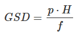
GRD beskriver den minste avstanden mellom to objekter på bakken som et kamera klarer å skille fra hverandre i bildet. Dersom avstanden blir mindre, vil objektene smelte sammen i bildet. Beregningene av GRD utføres etter fremgangsmåte beskrevet i [Meißner and Berger, 2025].
For å beregne GRD må det anvendes en Siemensstjerne innenfor prosjektområdet. Dette er en sirkel bestående av like store svarte og hvite segmenter. Anbefalt totalt antall segmenter s følger [Meißner and Berger, 2025] og bør ligge mellom 16 og 96 segmenter. Radiusen til stjernen beregnes etter Formel 2. Når Formel 2 benyttes bør det etableres svart og hvite referanseflater som har en størrelse som sikrer helt svarte og helt hvite piksler. Dette benyttes i utregningene av GRD og styrker nøyaktigheten til beregningen.
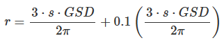
6.1.1.2. Fargenøyaktighet
Fargenøyaktighet kan måles ved å måle fargen på naturlige eller kunstige fargereferanser innad i prosjektområdet. Fargereferansen bør ha en homogen farge, tilnærmet horisontal og ha en størrelse som sikrer 3x3 piksler som kun er påvirket av fargereferansens farge og ikke omliggende flater. For pansharpenings systemer med forhold 1:3 bør da fargereferanse ha en størrelse på 9x9 piksler. Tilsvarende for bayer pattern systemer bør størrelsen være 6x6 piksler.
For å kunne benytte fargereferansene må fargen måles med et fargespektrometer. Det måles da i forhold til en referanselyskilde og observasjonsvinkel definert av "International Commission on Illumination". Referanselyskilden bør være D65 som tilsvarer midlere dagslys med en fargetemperatur på ca. 6504 kelvin og observasjonsvinkel bør være 10°. Observasjonsvinkelen refereres til øyets observasjonsvinkel. For å få et varmere fargeuttrykk kan en alternativt benytte D50 med fargetemperatur på ca. 5003 kelvin. Det anbefales at feltmålinger leveres i ulike formateringer som RGB, CIEXYZ, CIELAB med fargetemperatur D50 og D65.
Målt farger og korresponderende fargereferanser i bildet sammenlignes i fargerommet CIELAB, hvor avstanden mellom dem beregnes. Denne avstanden kalles ofte ∆E. Når ∆E verdien er under 1 er det vanskelig å se forskjell på fargene. Farger med ∆E verdier over 2 er lette å se forskjell på. Når en beregner ∆E kan en gjøre dette i 2 eller 3 dimensjoner. Dersom en benytter 2 dimensjoner ser en kun på CIELAB (a*b) som uttrykker selve fargen. Ved å inkludere 3 dimensjoner CIELAB (L*a*b) vil fargens lysstyrke også bli evaluert. Dersom dette gjøres, må feltmålingene utføres med riktig kalibrert lysstyrke.
6.1.2. Planlegging av flyfotografering (flyplan)
KRAV FOTO FLYPLANLEGGING
-
Flyplanleggingen skal utføres slik det er beskrevet i Tabell 2.
| Parameter | Krav |
|---|---|
Bakkeoppløsning (GSD) |
Bakkeoppløsning (GSD) bestemmes av oppdragsgiver og velges slik at kravene til fullstendighet og nøyaktighet blir oppfylt. Se Tabell 29. |
Flyhøyde |
Flyhøyden skal velges slik at kravet til bakkeoppløsning (GSD) oppfylles for hver enkelt flystripe. Dersom annet ikke avtales skal GSD refereres til midlere terrenghøyde i hver stripe. Det tillates et planlagt avvik i GSD på maksimalt + 10 %. Eventuelle avvik fra dette skal avtales. |
Bildeblokk |
Flystripene skal plasseres optimalt, slik at den resulterende bildeblokken får en mest mulig regulær form og flest mulig parallelt overlappende striper (for å sikre best mulig bildeorientering). En bildeblokk er en blokk med sammenhengende flybilder. Det er tillatt å fly over vann og sammenbinde flybilder så lenge ukjente parametere er stabile, som kamera og GNSS/INS, og det tas bilder kontinuerlig over vannområdet. For å sikre best mulig bildeorientering og redusere behovet for kjentpunkter, skal delområder i rimelig nærhet av hverandre forbindes ved at flystripene forlenges. |
Innsyn og sammenbinding |
Flystripene skal plasseres, og overdekningen skal eventuelt økes, slik at det sikres best mulig innsyn i alle områder og god bilde- og stripesammenbinding i områder med mye vann. |
Sideoverdekning |
Sideoverdekningen skal i gjennomsnitt ikke være mindre enn avtalt verdi. På høyeste punkt mellom stripene kan det planlegges ned til 5 % sideoverdekning. Lengre strekk med slik marginal sideoverdekning skal ikke forekomme. |
Lengdeoverdekning |
Lengdeoverdekningen skal være avtalt verdi overalt i fotograferingsområdet. Det tillates kortere avvik +/- 5 prosentpoeng, som eksempel ved bestilt 80% overlapp tillates det inntil 75% eller 85% overlapp over kortere strekninger. |
Stereodekning på utsiden av prosjektområdet |
For å sikre god stereodekning i hele prosjektområdet skal flystripene forlenges slik at det alltid tas ekstra bilder utenfor avtalt prosjektområde ved flystripestart og flystripeslutt, slik at det er minst en full 60% stereomodell ut over prosjektområdet. Normalt vil dette utgjøre 3-4 bilder. Det er ikke krav om en slik buffersone ut i vannområder. På langs av fotoretning skal stereodekning på utsiden av prosjektområdet dekke tilsvarende bestilt sideoverdekning. Ved fotografering av enkeltstriper settes krav til stereodekning på utsiden av prosjektområdet til minimum 10% av stripebredden. |
Overlapp kryssende striper |
I bildeblokker med flere striperetninger skal striper med kryssende retning ha stereodekning over hele bredden til kryssende flystripe. |
Overlapp kjedede enkeltstriper |
Kjedede enkeltstriper, dreid en vinkel i forhold til hverandre, skal overlappe hverandre med minimum to stereomodeller i hver stripe og med minimum 60% stereomodell over hele stripebredden. Det skal være tilstrekkelig med terreng for å kunne finne nok sammenbindingspunkter mellom stripene. I overlappsområdet mellom kryssende flystriper skal som hovedregel minimum 50% av overlapsområde være land. |
Plassering kjedede enkeltstriper |
For vegkartlegging eller annen stripekartlegging skal det tilstrebes at vegen blir sentrisk i stripene. Dette skal likevel ikke hindre en hensiktsmessig flyplan og kravene til bildeorientering skal ivaretas |
Tverrstriper |
Tverrstriper skal fortrinnsvis ligge vinkelrett på flystripene. Tverrstriper har reduserte krav til sky og skyskygge så lenge normale flystriper med god kvalitet dekker området, men dekningen må være god nok til å lage en sammenhengende flystripe i aerotrianguleringen (krav til antall sammenbindingspunkt vil være gjeldene for tverrstriper). I blokker med mer enn to flystriper og med mindre sideoverlapp enn 50%, så må et av disse to alternativene være dekket på alle flystripene i blokken:
Felles for begge alternativene er at det overlappende området skal ligge i et område egnet for etablering av sammenbindingspunkt. Det betyr at overlappsområdet for eksempel ikke bare skal inneholde vann. 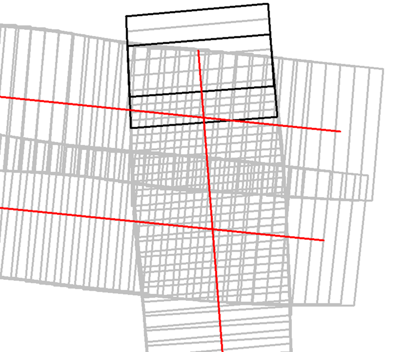 Figur 1. Viser overlapp som er nødvendig for at stripen som går oppover skal være tverrstripe for de 2 andre flystripene. Stereomodellen som lages av de 2 svarte bildeomrissene krysser midten av flybildene i den øverste flystripen. Dermed er alternativ 2 oppfylt.
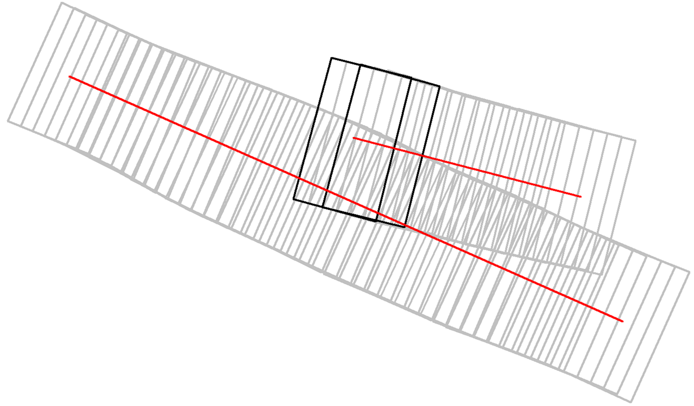 Figur 2. Viser flystriper som er tverrstriper for hverandre. Stereomodellen som lages av de 2 svarte bildeomrissene krysser midten av flybildene i stripen under. Dermed er alternativ 1 oppfylt.
|
6.1.3. Planlegging av kjentpunkt, kontrollpunkt og signalering (signaleringsplan)
Signaleringsplan utarbeides av oppdragstaker som en integrert del av flyfotoplanleggingen og kjentpunktene planlegges slik at plasseringen blir optimal med hensyn til krav til antall, plassering og enkel adkomst. For krav til antall og plassering, se Kapittel 6.1.3.2, “Krav til antall og plassering av kjentpunkter og kontrollpunkter”.
Signaleringen bør planlegges og utføres slik at fotograferingen kan starte opp så snart forholdene tillater det, eksempelvis ved at lavereliggende områder signaleres først.
6.1.3.1. Krav til kjentpunkter og kontrollpunkter
KRAV FOTO KJENTPUNKTNØYAKTIGHET OG KONTROLLPUNKTNØYAKTIGHET
-
Alle kjentpunkter og kontrollpunkter skal måles inn med geodetiske metoder og beregnes (utjevnes) med kontroll mot grove feil i alle trinn.
-
Kjentpunktene og kontrollpunktene skal måles inn og bestemmes med et standardavvik maksimalt lik ¼ av det strengeste kravet til geodata i det aktuelle prosjektet. Eksempel for FKB kartlegging se Tabell 3.
-
Naturlige kjentpunkter og kontrollpunkter kan benyttes unntaksvis, for eksempel for å erstatte tapte signaler i kritiske posisjoner. I prosjekter med høye nøyaktighetskrav skal da et veldefinert punkt først velges i bildene og deretter måles inn i marka. I prosjekter med lavere nøyaktighetskrav, som for eksempel Omløpsfotograferingen, kan eksisterende, antatt synlige geodetiske punkter (varder, fyrlykter, og lignende med tilfredsstillende oppgitt nøyaktighet) planlegges som supplement til de signalerte kjentpunktene for å oppnå bedre kontroll i utilgjengelige områder.
| FKB-Standard | Krav til geodata, svært veldefinert detalj (cm) | Krav til markmåling av kjentpunkter (cm) | ||
|---|---|---|---|---|
Sp |
Sh |
Sp |
Sh |
|
FKB-A |
10 |
10 |
3 |
3 |
FKB-B |
15 |
15 |
4 |
4 |
FKB-C |
48 |
48 |
12 |
12 |
FKB-D |
48 |
48 |
12 |
12 |
Det presiseres at tallene i Tabell 3 henviser til kravene som er stilt i FKB 5.0 produktspesifikasjonen, ved endringer i FKB spesifikasjonen vil eventuelle endringer til nøyaktighetskrav gjelde foran kravene som er satt opp i Tabell 3. Det stilles krav til henholdsvis punktstandardavvik, grunnriss (Sp) og standardavvik i høyde (Sh). For systematisk avvik skal dette for FKB være 1/3 av standardavvikskravet.
For krav til utførelse av signaleringen vises det til Kapittel 6.2, “Signalering”.
6.1.3.2. Krav til antall og plassering av kjentpunkter og kontrollpunkter
Ved GNSS/INS-støttet fotografering kreves det i teorien kun et fåtall kjentpunkt for å kunne utføre aerotriangulering. Kjentpunktene er kun nødvendige for å kunne bestemme systematiske avvik i de GNSS-bestemte projeksjonssentrene (datumstransformasjon), samt for å ha en minimums-kontroll. I praksis trengs vesentlig flere punkt for å kunne:
-
Bestemme flere "GNSS-shift" på grunn av fotografering over flere dager.
-
Dokumentere kvaliteten i bildeorienteringen tilstrekkelig/godt.
-
Oppdage avvik i hele blokken.
KRAV FOTO KJENTPUNKT - ANTALL OG PLASSERING
-
Det skal være minimum ett fullbestemt kjentpunkt i hver flystripe.
-
Kravet til antall kjentpunkt kan avvikes etter avtale. Dette må da kompenseres med flere tverrstriper.
-
I en bildeblokk skal det være minimum 5 fullbestemte kjentpunkter. Kravet gjelder også for enkeltstriper og enkeltstriper i kjede. Avvik fra dette (for eksempel ved svært små blokker og ved mange spredte øyer) kan tillates dersom oppdragsgiver har åpnet for dette i teknisk spesifikasjon for oppdraget. I slike tilfeller skal det sørges for at korrekte "GNSS-shift" blir påført bildene.
-
I blokker som inneholder kjedede enkeltstriper skal det være minimum ett fullbestemt kjentpunkt i hvert overlappsområde mellom stripene, samt minimum ett i eller nær enden av hver kjede.
-
Kjentpunktene skal fordeles jevnt over hele bildeblokken og det skal påses at det finnes kjentpunkter nær blokkens ytterkanter. Det er dog ikke nødvendig å plassere kjentpunktene helt i ytterkant, dersom for eksempel adkomst gjør dette vanskelig.
6.1.4. Krav til innhold og presentasjon av fly- og signalplanen
KRAV FOTO FLY- OG SIGNALERINGSPLAN
-
Endelig fly- og signaleringsplan skal bestå av rapport i PDF-format, samt avgrensninger og kjentpunkt i avtalt vektorformat. Rapporten skal minimum inneholde:
-
Kamerafabrikat- og type, samt kamerakonstant.
-
GSD, samt flyhøyde over havnivå for hver stripe.
-
Lengde- og sideoverdekning i prosent.
-
Antall striper og bilder, samt totalt antall stripekilometer.
-
Omriss av bilde- eller stripedekning.
-
Planlagte kjentpunkter med navn og ulike farger eller lignende som skiller nye og eksisterende punkter.
-
Estimert total effektiv flytid. Med effektiv flytid menes flytiden for å dekke prosjektområdet (striper og svinger). Flytid til og fra prosjektområdet medregnes ikke.
-
Prosjektgrense og topografisk bakgrunnskart.
-
Dato for godkjenning av planen og navnet på planleggeren.
-
Eksempel på fly- og signaleringsplan finnes i Kapittel B.1, “Eksempel fly- og signaleringsplan (foto)”.
6.2. Signalering
Dette kapittelet angir krav og retningslinjer til signalering av kjentpunkter for aerotriangulering og eventuelle objekter som skal kartlegges og som er for små til å synes i flybildene. For innmåling av kjentpunkter henvises til krav i Kapittel 6.1.3.1, “Krav til kjentpunkter og kontrollpunkter”.
6.2.1. Lovhjemmel for markarbeider - Matrikkellova
Tillatelse til utsetting av fastmerker og signaler og rydding for sikt ved offentlige kart- og oppmålingsarbeider er hjemlet i Matrikkellova, §41 Rett til å utføre oppmålingsarbeid på offentleg og privat grunn.
Bestemmelsene i §43 om plikt til varsling av grunneiere og brukere skal ivaretas: "Før oppmålingsarbeid blir sett i verk, skal alle som arbeidet vedkjem, få varsel på ein etter forholda formålstenlig måte. Departementet kan gi forskrift om varsling.".
Under målearbeider skal det utvises forsiktighet slik at arbeidet fører til minst mulig skade og ulempe for grunneier eller bruker.
Lovens § 49 gir strafferettslig beskyttelse for fastmerker og signaler oppsatt etter loven.
Plassering av fastmerker eller signal i eller på automatisk fredete kulturminner, eller innenfor et 5 meter bredt belte regnet fra kulturminnets synlige ytterkant, er forbudt etter lov om kulturminner (Kulturminneloven §3 og §6).
6.2.2. Utføring av signalering
KRAV FOTO SIGNALERING
-
Signaleringsarbeidet skal utføres slik det er beskrevet i Tabell 4.
| Parameter | Krav |
|---|---|
Markering av nye kjentpunkt |
Nye kjentpunkt skal markeres med bolt, spiker eller annen varig markering. |
Plassering av signal |
Signalet plasseres på horisontalt flatt/plant underlag og skal som hovedregel males. Signal skal ikke plasseres på løse gjenstander som kumlokk. Prefabrikkerte signalplater skal ha sentrumshull og plasseres og festes slik at de ikke kommer ut av posisjon/horisontering eller blir ødelagt før fotografering. Sentrisk plassering skal være innenfor 1/3 av krav til markmåling av kjentpunkt se Tabell 3. |
Signalfarge |
Signalfargen skal være matt hvit med matt svart kontrastfelt. |
Signalform og -størrelse |
Signalet skal ha en regulær og symmetrisk form. Størrelsen skal avpasses etter bildeoppløsning (GSD). Krav til størrelser på signaler er vist i Tabell 5, mens tillatte signaltyper er vist i Figur 5. |
Planhet for signal og kontrastområdet |
Krav til flatt/plant underlag gjelder både signal og kontrastområdet. Høydevariasjon på signal og kontrastområdet målt fra senter av signal skal ikke overstige kravet til markmåling av kjentpunkt se Tabell 3. Eksempler på egnede og ikke egnede signaler kan sees i Figur 6. Dersom det ikke er mulig å etablere signal som overholder krav til planhet i området hvor signalet må etableres, kan kravet om planhet til signal og kontrastområdet fravikes etter avtale med oppdragsgiver. |
Kontrast |
Det skal sørges for god kontrast rundt signalet. Kontrastfeltet skal være minst halvparten av signalbredden (til hver side av signalet). Fjell, stein, sand, grus, asfalt eller betong gir dårlig kontrast, og det skal da lages kunstig kontrast rundt signalet. Kontrastområdet skal være horisontalt flatt/plant og ha samme høyde som signalet. |
Bolthøyde |
Høydeforskjellen mellom punktets høydereferanse og signalmidt skal alltid måles. Ved signalering av eksisterende punkter skal punktets høydereferanse observert i marka verifiseres mot den oppgitte og målt bolthøyde skal verifiseres mot oppgitt bolthøyde. Ved uoverensstemmelse eller dersom bolten er borte eller bøyd skal som hovedregel den oppgitte bolthøyden antas å være korrekt. |
Innsyn |
Signalet skal være synlig i alle bildene/stripene som er planlagt å dekke punktet (for å sikre at det er synlig også i bilder/striper som eventuelt fotograferes på ulike datoer eller flysesjoner). Vegetasjon som kan hindre dette skal ryddes bort. Som tommelfingerregel kan benyttes at synslinjen fra et signal på marka til flyet skal gå på skrå med en vinkel på opptil 40 gon fra senit, se Figur 3 og Figur 4. 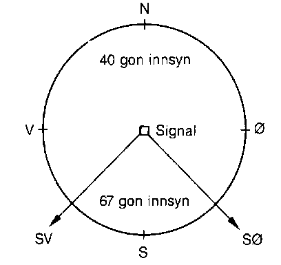 Figur 3. Innsyn rundt signalet
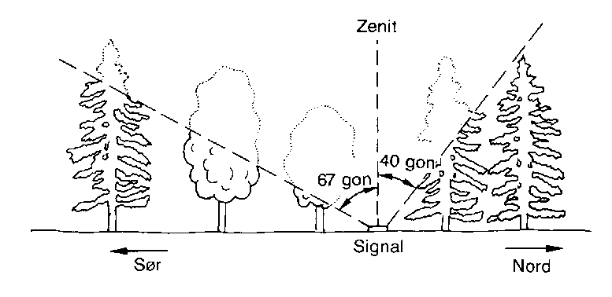 Figur 4. Innsyn mot sør
|
Skygge |
Skygge på signalet skal unngås. De samlede retningslinjene til innsyn går fram av Figur 3 og Figur 4. Det skal være godt innsyn til signalet hele veien rundt. For å unngå skygge på signalet skal det være innsyn ned til 67 gon fra vertikalen i en sektor mot sør. Retningslinjene forutsetter fotografering i det mest vanlige tidsrommet på dagen. |
Rydding av vegetasjon |
Rydding av vegetasjon skal utføres med varsomhet. På privat grunn skal alltid grunneieren kontaktes før man går i gang med rydding. |
Erstatningspunkt |
Dersom planlagt posisjon blir funnet å være ubrukelig på grunn av innsyn, eller lignende skal et nytt eller eksisterende punkt etableres så nær som mulig det opprinnelig planlagte. |
Signaleringsstørrelse |
Krav til signalstørrelse settes til 2 til 3 ganger GSD, eller etter avtale med oppdragsgiver. Anbefalte signalstørrelser kan sees i Tabell 5. Alle typer signaler i Figur 5 kan benyttes for de forskjellige oppløsningene. For Figur 6 vises eksempler på signal som overholder krav til planhet (1) og signaler som ikke overholder krav til planhet (2 og 3). |
Signaltyper |
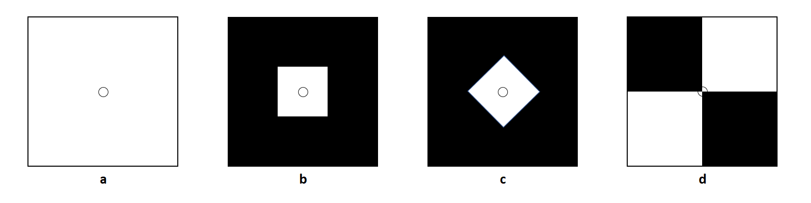 Figur 5. Ulike signaltyper (a, b, c og d)
|
ANBEFALING FOTO SIGNALSTØRRELSER
| GSD (cm) | Kvadratisk signal (cm) | |
|---|---|---|
Størrelse signal |
Størrelse med kontrast |
|
< 7 |
21 |
42 |
7 |
21 |
42 |
10 |
30 |
60 |
20 |
60 |
120 |
25 |
60 |
120 |
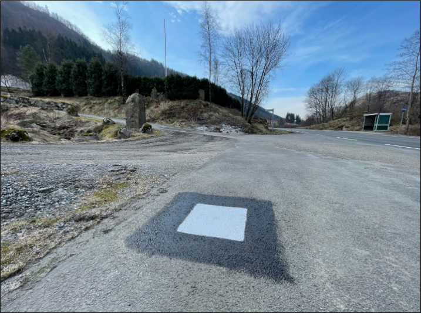
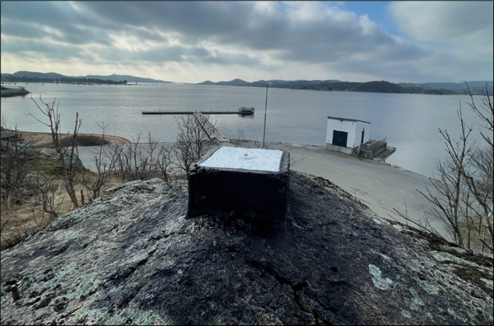
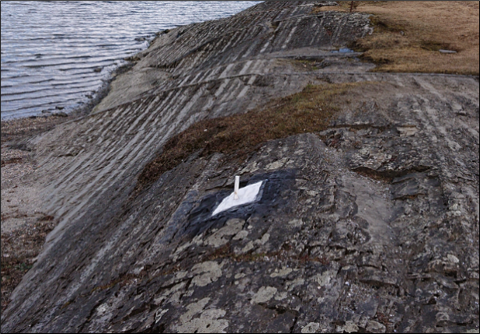
6.2.3. Egenkontroll og rapportering (signaleringsrapport)
KRAV FOTO RAPPORT SIGNALERING
-
Signaleringsrapporten skal som minimum inneholde informasjonen spesifisert i Tabell 6. Som hovedregel skal det leveres en felles rapport for signalering og innmåling av kjentpunkter.
| Kategori | Element | Innhold |
|---|---|---|
Generell informasjon |
Oppdragsgiver |
(adresse og prosjektleder) |
Oppdragets navn og nummer |
(LACHFFXX) |
|
Oppdragstaker |
(adresse, prosjektleder, fagansvarlig og underleverandører) |
|
Beskrivelse av oppdraget |
(kontraktsarbeid, areal og standard |
|
Antall eksemplar av rapport |
(antall og oppbevaringssted) |
|
Datering og signatur |
(dd.mm.åååå, signatur) |
|
Signaleringsarbeidet |
Utførelse av signaleringsarbeidet |
(navn, tidspunkt og beskrivelse av eventuelle vanskeligheter) |
Geodetisk og vertikalt grunnlag |
(koordinatsystem i grunnriss og høyde) |
|
Benyttet signaltype |
(form, størrelse og farge) |
|
Bolthøyde |
Beskrivelse av eventuelle avvik mellom observert og oppgitt bolthøyde og i tilfelle hvilken bolthøyde signalet er referert til, med begrunnelse. |
|
Rydding |
Hva som er utført av rydding, med begrunnelse. |
|
Erstatningspunkt |
Beskrivelse av eventuelle avvik fra plan med hensyn til plassering og bruk av planlagte punkt, med begrunnelse |
|
Egenkontroll |
Resultat fra kontroll mot eksisterende grunnlagspunkt |
|
Vedlegg |
Signalerte punkt |
Koordinatliste for signalerte punkt. Tekst-format med følgende kolonner: [PunkID] [N] [E] [H] [dH] (H = høyden midt i signalet, dH = punktets observerte/oppgitte høydereferanse minus H). Dersom felles rapport for signalering og landmåling ikke er mulig å fremstille, oppgis omtrentlige koordinater (innenfor 10 m) på signalene. |
Identifikasjon |
Et nærbilde som viser signalets plassering relativt punktets høydereferanse, samt et oversiktsbilde |
|
Oversikt |
Rapport i PDF-format med endelig plassering av punkter, med navn. Topografisk kart, endelig flyplan og prosjektavgrensing som bakgrunn. |
|
Innmålte objekter |
Innmålte objekter på avtalt vektorformat. |
6.3. Flyfotografering
Dette avsnittet angir krav og retningslinjer til gjennomføring av fotograferingen, til fremstilling av GNSS/INS-data og bilder samt til egenkontroller og rapportering av arbeidene. For krav til leveranse av flyfoto vises det til nyeste versjon av Produktspesifikasjon Vertikalbilde [PV].
6.3.1. Krav til kamerasystem
6.3.1.1. Krav til kamera
Oppdragstakeren for fotogrammetriske kart- og målearbeider er ansvarlig for at kameraet som benyttes er tilfredsstillende kalibrert, kontrollert og godkjent etter bestemmelsene i dette kapittelet.
KRAV FOTO DIGITALE KAMERA
-
Digitale kamera skal tilfredsstille kravene gitt i Tabell 7.
| Moment | Krav |
|---|---|
Bildevandring |
Kameraene skal ha digital eller mekanisk bildevandringskompensasjon (FMC) For linjesensorene er ikke dette påkrevet. Alternativt må lukkerhastigheten være så kort at sensorens bevegelse under eksponeringsøyeblikket ikke påvirker bildets kvalitet. |
Kamerakalibrering |
Kameraet skal være kalibrert i løpet av de siste 24 månedene og eventuelt etter flytting eller annen fysisk påkjenning som kan ha påvirket kameraets kalibrering. Det skal foreligge et kalibreringssertifikat fra denne kalibreringen. For ikke metriske kamera skal det utføres kamerakalibrering for hver flygning. |
Kalibrert kamerakonstant |
Skal være bestemt med standardavvik ≤ 3 μm |
Gyrostabilisert kameraramme |
Kamera som skal brukes til kartleggingsformål og ortofotoproduksjon skal være montert i en gyrostabilisert kameraramme (gyromount). Dette kravet gjelder dog ikke mellomformatkameraer som brukes sammen med laserskanningsinstrumenter eller som en del av et skråbildesystem. |
Bildehovedpunkt |
Autokollimasjonshovedpunktet (PPA) skal være bestemt med standardavvik ≤ 3 μm. PPA = Principal Point of Autocollimation. |
Radiell fortegning |
Radiell fortegning er normalt kompensert i leverte bildedata. Skal være bestemt med standardavvik ≤ 2 μm |
Levnetsdokumentasjon |
For hvert kamerasystem skal det foreligge en levnetsdokumentasjon som skal inneholde alle vitale opplysninger om systemet: Anskaffelse, dokumentasjon av kontroller, justeringer, skader, reparasjoner, kalibreringer og så videre. Dokumentasjonen skal angi dato for kontrollen, hvem som har utført den og resultatene av kontrollen. Levnetsdokumentasjonen skal alltid være à jour, og den skal kunne fremlegges når som helst uten foregående varsel. |
6.3.1.2. Krav til GNSS/INS
KRAV FOTO GNSS/INS-SYSTEM
-
Ved bruk av INS for flybåren datafangst skal systemet som et minimum inkludere:
-
Treghetssensor (IMU) med tre akselerometer og tre gyroskop
-
Flerfrekvent GNSS-mottaker av geodetisk kvalitet, med kalibrert(e) antenne(r) (fasesentereksentrisitet og fasesenter–variasjoner skal være kjent)
-
-
Eksentrisiteter mellom IMU, GNSS-antenne(r) og projeksjonssenter skal være kjent fra innmåling eller beregning:
-
Eksentrisitet mellom IMU og GNSS-antenne(r) skal være kjent med en nøyaktighet på 3 cm eller bedre (RMS).
-
Eksentrisitet mellom IMU og projeksjonssenter skal være kjent med en nøyaktighet på 3 mm eller bedre (RMS).
-
Dersom IMU, GNSS-antenne(r) og kamera kan bevege seg i forhold til hverandre, skal bevegelsene måles og logges, slik at eksentrisiteter kan påføres korrekt i INS-beregningen (aktuelt for eksempel hvis kameraet er stabilisert).
-
-
Utstyr og metode som velges skal kunne gi en kvalitet på resultatet som, sett i sammenheng med andre innsatsfaktorer, er tilstrekkelig for å oppfylle krav til sluttprodukt i de enkelte prosjekt.
-
Ved oppstarten av en ny fotosesong, skal det utføres en "boresight"-kalibrering for å bestemme avviket i orientering mellom IMU og kamera. Til dette skal det utføres en egen fotografering med tilstrekkelig geometrisk styrke (stor sideoverdekning og alternerende og kryssende striperetninger) for sikker bestemmelse av kalibreringen. Kalibreringsverdiene skal bestemmes ved hjelp av aerotriangulering. Denne fotograferingen skal også tjene som en funksjonstest av kamerautstyret, og dataene skal brukes til å kontrollere at visuell kvalitet i bildene er som forventet. Dersom IMU-en har vært fjernet fra kameraet, eller dersom andre forhold tilsier at dette er nødvendig, skal ny "boresight"-kalibrering utføres.
6.3.2. Gjennomføring av fotografering
6.3.2.1. Krav til fotografering
KRAV FOTO FOTOGRAFERING
-
Flyfotograferingen skal gjennomføres i henhold til krav gitt i Tabell 8.
| Moment | Krav |
|---|---|
Klarmelding |
Dersom ikke annet er avtalt skal oppdragsgiver for fotograferingen gi skriftlig klarmelding om at fotografering kan starte. Klarmelding skal gis så tidlig som mulig, og for hvert eventuelle delområde. Klarmeldingen(e) skal bekreftes skriftlig av oppdragstaker. |
Kameratype |
Dersom ikke annet er avtalt skal fotograferingen utføres med geometrisk og radiometrisk kalibrert storformat digitalt kamera. Se Kapittel 6.3.1.1, “Krav til kamera” for krav til instrumenter, kalibrering og kontroll. |
Eksponeringskontroll |
Kameraet skal ha eksponeringskontroll og denne skal benyttes aktivt under fotografering for å unngå skadelig over- og undereksponering, uskarpe bilder og tap av detaljer. |
Fotograferingsperiode |
Et prosjekt skal fotograferes over et kortest mulig tidsrom og det skal tilstrebes at flystriper fotograferes mest mulig samlet. Ved fotografering over flere dager eller GNSS-sesjoner skal det sørges for at tilstrekkelig med kjentpunkter blir dekket slik at systematiske "GNSS-shift" kan bestemmes for hver dag/hver fotosesjon. |
Fotograferingstidspunkt |
Mengden av skygge i bildene skal forsøkes holdt så lavt som mulig ved at fotografering blir utført på en tid på dagen som er mest mulig gunstig med hensyn til overflateforhold og topografi. |
Fotograferingsavbrudd |
Ved avbrudd i fotografering i en flystripe skal hele stripen som hovedregel fotograferes på ny. Unntakene er striper med lengde tilsvarende minimum 20 bilder ved 60 % lengdeoverdekning, eller der fortsettelse kan skje kort tid etter avbrudd og i samme fotosesjon. Dersom det ikke er mulig å fly om stripen før etter lengre tid skal oppdragstaker i samråd med oppdragsgiver vurdere hva som er til prosjektets beste med hensyn til nøyaktighet og samlet visuell kvalitet i bildene. |
Stripeskjøting |
Dersom striper må skjøtes skal det fotograferes tilstrekkelig overlapp over bruddet slik at nøyaktighetstap unngås og slik at stereodekning over bruddet fra begge sider blir mulig. Det skal være minst 4 bilder overlapp over stripebruddet. |
Fotograferingsretning |
Parallelle nabostriper skal som hovedregel fotograferes i motsatt retning. |
Solhøyde |
Krav til minste solhøyde under fotografering ≥ 27o eller etter avtale. |
Skyer og skyskygger |
Krav til maksimalt innhold av skyer og skyskygger under fotografering:
Mindre skyer kan godtas dersom det likevel er mulig å produsere et skyfritt ortofoto ved hjelp av det totale bildematerialet. Fotografering under slørskyer kan aksepteres så lenge de ovenfor nevnte kravene holdes og at dette ikke medfører tap av detaljer, unaturlig fargetone eller lav kontrast i bildene. |
Dis og røyk |
Dis eller røyk som medfører tap av detaljer eller skarphet skal ikke forekomme. Unntak aksepteres i industriområder eller lignende hvor det er umulig å fotografere uten røyk. |
Kamerarotasjoner |
Kameraets tillatte rotasjoner under fotografering skal tilsvare:
Avvik fra disse kravene kan aksepteres av oppdragsgiver der oppdragstaker kan dokumentere at det ikke medfører kvalitetstap eller problemer i produksjonen. Avviket skal varsles oppdragsvier uten ugrunnet opphold. Avvikene skal beskrives i fotorapport. |
Bakkeoppløsning |
Krav til GSD kontrolleres indirekte som avvik fra planlagt/korrekt flyhøyde. |
Sideoverdekning |
|
Lengdeoverdekning |
|
Logg |
En detaljert logg skal føres under fotografering. Denne skal arkiveres sammen med øvrig dokumentasjon fra kamerasystemet og skal kunne fremlegges for oppdragsgiver på forespørsel. Loggen skal minimum inneholde:
|
Kontroll |
Umiddelbart etter fotograferingen skal det utføres tilstrekkelig prosessering og kontroller som verifiserer at innsamlede data er egnet for den planlagte bruken. Oppdages avvik eller forhold som kan medføre behov for ny fotografering skal oppdragsgiver underrettes umiddelbart sammen med et forslag til plan for fullføring av oppdraget. |
6.3.2.2. Krav til innsamling av GNSS/IMU-data
Ved GNSS/INS-støttet flyfotografering kombineres observasjoner fra IMU (Inertial Measurement Unit) med data fra GNSS-mottaker for å bestemme både posisjon og orientering på kameraet. Ulike beregningsmetoder kan benyttes for å komme fram til posisjon og rotasjon for hvert enkelt bilde.
KRAV FOTO INNSAMLING GNSS/IMU
-
GNSS-mottaker i flyet skal ha en målerate på 1 sekund eller hyppigere.
-
Før flyging og fotografering skal det kontrolleres at man har en satellittkonstellasjon som gir en akseptabel geometri, PDOP skal være under 6 for hele flygingen.
-
Datainnsamlingen skal legges opp med tilstrekkelig dynamikk før, under og etter selve fotograferingen slik at IMU-ens sensorfeil kan estimeres med nødvendig kvalitet relativt kravene til sluttproduktene. Hva som anses som tilstrekkelig dynamikk skal oppdragstaker vurdere blant annet ut fra lengden på flystripene, svingradius og IMU-ens kvalitet.
-
For å oppnå tilstrekkelig dynamikk skal det foretas IMU-initialisering umiddelbart før første flylinje og umiddelbart etter siste flylinje. Minimum initialisering er en retningsendring på 90 grader en vei og 90 grader motsatt vei. Under datainnsamling skal det etterstrebes å fly annenhver høyre og venstresving ved stripebytte.
-
Dersom planlagt flystripelengde overstiger 20 minutters flytid, skal det legges inn en IMU-initialisering midtveis i stripene (for å holde IMU-drift på et akseptabelt nivå).
Metoden for GNSS-posisjonsbestemmelse ved bruk av DGNSS er basert på at det benyttes differensierte observasjoner mellom en eller flere GNSS-basestasjoner på bakken (eventuelle virtuelle basestasjoner) og GNSS-mottakeren i flyet.
KRAV FOTO DGNSS
-
Maksimal avstand mellom fly/helikopter/drone og referansemottakere på bakken må ikke være lengere enn at nøyaktighetskravet til projeksjonssentrene oppnås.
-
Ved bruk av egen referansemottaker må koordinatene til benyttet kjentpunkt være bestemt med 1/3 av nøyaktighetskravet til projeksjonssentrene.
Metoden for GNSS-posisjonsbestemmelse ved bruk av PPP (Precise Point Positoning) er basert på en enkelt GNSS-mottaker i flyet, uten bruk av mottakere på bakken.
KRAV FOTO PPP (Precise Point Positioning)
-
Udifferensierte kode- og fase-målinger benyttes sammen med presise satellittbaner og satellittklokkekorreksjoner.
-
Faseflertydighetene bestemmes som flyttall.
-
Ionosfærisk refraksjon elimineres ved hjelp av måling på to eller flere frekvenser, og at troposfærisk refraksjon estimeres sammen med de andre parameterne.
-
Programvaren må i all vesentlighet forholde seg til de modeller og konvensjoner som følger av å benytte de aktuelle bane- og klokkeproduktene.
-
Total måletid (på bakken og i lufta) må overstige en time for å sikre god konvergens i løsningen. Dette gjelder dersom kun GPS benyttes. Ved bruk av andre GNSS-system i tillegg til GPS (for eksempel Galileo og GLONASS), kan noe kortere måletid aksepteres.
-
Satellittklokkekorreksjoner med oppløsning på 30 sekunder eller bedre skal benyttes.
6.3.3. Beregning av GNSS/INS-data
Ved beregning av GNSS/INS-dataene står oppdragstager fritt til å velge egnet beregningsstrategi, avhengig av hvordan datainnsamlingen har foregått og hvilken programvare som er tilgjengelig.
Beregningsarbeidet leder fram til en fil med ytreorienteringselementer for hvert bilde, i det koordinat- og høydesystem som er spesifisert av oppdragsgiver. Ytre orienteringsparameterne skal referere seg til kameraets projeksjonssenter.
Ved avtale så er det tillatt å bruke flere sensorer (GNSS, IMU og AT) enn det som er definert i dette kapittelet i posisjon- og orienteringsbestemmelse av flybildene.
Samtidig georeferering av flere sensorplattformer som flybildekamera og laserskanner er tillatt ved avtale. Alle kravene for hver sensor skal følges. Det kreveres at vinkler og avstander mellom koordinatsystemet til hvert sensorsystem er kjent. Dersom vinkler og avstander mellom koordinatsystemene endres under datafangsten skal denne endringen måles og anvendes i navigasjonsløsningen for hvert enkelt sensorsystem. Hvis det er avvik mellom kravene som stilles for hver sensor, så brukes det strengeste kravet.
KRAV FOTO BEREGNING GNSS/INS
-
I beregningene skal det:
-
Korrigeres for eksentrisiteter mellom IMU, GNSS-antenne(r), og projeksjonssenter, også når disse ikke er konstante.
-
Korrigeres for GNSS-antennen(e)s fasesentereksentrisitet og fasesentervariasjoner.
-
Korrigeres for vinkelavvik mellom INS-koordinatsystem og kamerakoordinatsystem ("boresight misalignment").
-
-
Fil med ytre orienteringsparametere skal minimum inneholde:
-
En header som inneholder informasjon om:
-
Koordinat- og høydesystem for ytre orienteringsparameterne.
-
Definisjon av rotasjonsrekkefølgen og vinkelenhet for rotasjonene (Omega, Phi og Kappa).
-
"Boresight misalignment"-vinklene.
-
Beskrivelse av data-kolonnene i fila.
-
-
En linje pr. bilde, som inneholder minimum:
-
Bilde-ID (Navn).
-
Eksponeringstidspunkt.
-
Projeksjonssenterkoordinater.
-
Omega, Phi og Kappa.
-
Standardavvikene for projeksjonssenter–koordinater og rotasjoner.
-
-
Kravene til dokumentasjon fra beregningen er listet opp i avsnittet om egenkontroll og rapportering.
6.3.4. Fremstilling av bilder
KRAV FOTO FREMSTILLING AV BILDER
-
Bildene skal prosesseres slik at tap av informasjonsinnhold mellom rådata og resulterende/levert bilde unngås, eventuelt anses ubetydelig.
-
Bildene skal hver for seg ha god og jevn kontrast samt enhetlig, naturlig fargetone og lyshet over hele bildeflaten.
-
Bildene skal være skarpe. Finnes det uskarpe bilder skal disse vurderes spesielt med hensyn til den planlagte bruken av bildene.
-
Bildene skal som hovedregel kontraststrekkes (normaliseres) slik at hele den tilgjengelige gråtoneskalaen utnyttes. Strekkingen skal gjøres med kontroll slik at ikke eventuelt utliggende piksler resulterer i en ikke-representativ skalering. Moderat kutt i histogrammene aksepteres såfremt ikke viktig informasjon i bildene går tapt.
-
Innenfor samme område og fototidsrom skal bildene ha innbyrdes god og jevn kontrast samt enhetlig, naturlig fargetone og lyshet. Tilsvarende skal det mellom eventuelle flere områder/fototidsrom tilstrebes størst mulig likhet.
-
Dersom det ikke lar seg gjøre å oppnå forventet visuell kvalitet i bildene (på grunn av værforhold eller lignende) skal oppdragsgiver informeres tidligst mulig og involveres i eventuell tiltaksplan.
-
Eventuell konvertering til lavere radiometrisk oppløsning (for eksempel 8 bit) og eventuell komprimering skal utføres som siste ledd før leveranse for å unngå akkumulert tap av informasjon gjennom prosesseringen.
-
Dersom en stripe må skjøtes, og fortsettelse av fotograferingen ble gjort på et senere tidspunkt slik at lys/skygge- og eventuelle overflateforhold er endret, skal stripeseksjonene i det endelige bildesettet overlappe hverandre slik at de hver for seg har stereodekning over stripebruddet.
-
Ved sammensetting av det endelige bildesettet i prosjekt der det finnes overlappende versjoner av bilder, skal overskytende bilder fjernes. Fragmentering av striper eller områder på grunn av fotografering over flere dager skal reduseres til et minimum.
-
Filnavn på bilder skal som hovedregel være på formen FirmaID-Dekningsnr_Stripenr_Bildenr_Kameraløpenr (FirmaID er vanligvis to bokstaver) og alle representasjoner av bildene skal benytte/vise til samme filnavn (for eksempel i GNSS/INS-filer, i aerotrianguleringen og i ortofotoproduksjonen).
-
I stripeskjøter skal navnet på de overlappende bildene skilles med suffiks "_2" i bildenummeret for de senest fotograferte bildene hvis ikke annen informasjon skiller bildene, slik som telleverksnummer.
6.3.5. Egenkontroll og rapportering (fotorapport)
Det skal leveres en rapport (fotorapport) for de utførte arbeidene, med leveransene som vedlegg til rapporten. Rapporten skal ha egne seksjoner for generell informasjon, utføring av fotograferingen, beregning av GNSS/INS-data og fremstilling av bilder, samt en egen seksjon med oversikt og spesifikasjon av vedlagte leveranser. For hvert av de nevnte arbeidene, inkludert leveransene, skal resultatet av utførte kvalitetskontroller dokumenteres.
KRAV FOTO RAPPORTERING FLYFOTOGRAFERING
-
Rapport for flyfotografering skal som minimum inneholde informasjonen spesifisert i Tabell 9
| Kategori | Element | Innhold |
|---|---|---|
Generell informasjon |
Oppdragsgiver |
(adresse og prosjektleder) |
Oppdragets navn og nummer |
(LACHFFXX) |
|
Dekningsnummer |
(XX-12345) |
|
Bakkeoppløsning (GSD) |
(cm) |
|
Datum |
(horisontalt datum, vertikalt datum, projeksjon og benyttet HREF-modell) |
|
Oppdragstaker |
(adresse, prosjektleder, fagansvarlig og underleverandører) |
|
Beskrivelse av oppdraget |
(kontraktsarbeid, fotografert areal og standard) |
|
Antall eksemplar av rapport |
(antall og oppbevaringssted) |
|
Versjon |
(rapportversjonsnummer) |
|
Datering og signatur |
(dd.mm.åååå, signatur) |
|
Flyfotografering |
Fly |
(fabrikat, type, kallesignal og trykkabin ja/nei) |
Kamerasystem |
|
|
Klarmelding |
|
|
Bildeoversikt |
(antall striper, antall bilder pr. stripe, fotodato pr. flystripe) |
|
Sikkerhetsgradering |
Oversikt over eventuelle bilder som ikke er levert på grunn av sikkerhetsgradering (jamfør sikkerhetsloven [SL]). |
|
Solvinkel |
(minste solvinkel) |
|
Værforhold |
Beskrivelse av generelle forhold, inkludert skyforhold, sikt, vind og turbulens. Ved vanskelige forhold skal det rapporteres hvilke striper/bilder dette kan angå. |
|
Skyer og skyskygger |
Prosentvis innhold av skyer og skyskygger, med angivelse av hvilke striper/bilder som er berørt. |
|
Kamerarotasjoner |
|
|
Flyhøyde |
Systematisk og maksimalt avvik fra planlagt flyhøyde, pr. stripe (planlagt minus reell). |
|
Stereodekning utenfor avtalt prosjektområde |
Gjennomsnittlig stereodekning (prosent side og lengde) utenfor avtalt prosjektområde, basert på visuell stikkprøvekontroll. |
|
Sideoverdekning |
|
|
Lengdeoverdekning |
|
|
Avvik |
Eventuelle problemer i forbindelse med gjennomføringen:
|
|
Vurdering av resultat |
En samlet vurdering av utføringen av fotograferingen og kvaliteten på arbeidene med hensyn til bestilling og øvrige krav. |
|
GNSS/INS |
Programvare |
(fabrikat, versjonsnummer) |
GNSS/INS-filer |
Beskrivelse av innhold i GNSS/INS-fil. En GNSS/INS-fil pr. fotosesjon. |
|
Beregninger |
|
|
Dokumentasjon av resultat |
|
|
Avvik |
Eventuelle problemer i forbindelse med fremstillingen av GNSS/INS-data:
|
|
Vurdering av resultat |
En samlet vurdering av fremstillingen av GNSS/INS-data og kvaliteten på arbeidene med hensyn til bestilling og øvrige krav. |
|
Bildefremstilling |
Programvare |
(fabrikat og versjonsnummer) |
Prosessering |
|
|
Kontroll |
Metode for kontroll av visuell kvalitet i bildene, herunder minimum:
|
|
Komprimering |
Metoder for eventuell komprimering av bildene, "tiling" og fremstilling av bildepyramider |
|
Problem, utfordringer og kommentarer til arbeidet |
Eventuelle problemer i forbindelse med bildeprosesseringen:
|
|
Vurdering av resultat |
En samlet vurdering av fremstillingen av bilder og kvaliteten på arbeidene med hensyn til bestilling og øvrige krav. |
|
Leveranser |
Produktspesifikasjon |
Versjon av produktspesifikasjon. |
Leveranser |
En fullstendig oversikt over alle leverte data, metadata og eventuell medfølgende dokumentasjon skal stilles opp. Oversikten skal minimum inneholde:
|
|
Kontroll |
Leveransen skal kontrolleres, minimum for følgende:
|
6.4. Aerotriangulering
Dette kapittelet angir krav og retningslinjer til aerotriangulering (AT) med blokkutjevning, samt til egenkontroller og rapportering av arbeidene. Det forutsettes bruk av kjentpunkter og for krav til disse vises det til Kapittel 6.1, “Fly- og signalplanlegging”.
6.4.1. Krav til målearbeidet
KRAV FOTO MÅLING AV SAMMENBINDINGSPUNKT
-
Overlappende bilder og flystriper skal identifiseres og settes sammen til en samlet enhet (bildeblokk) som er egnet til å knyttes sammen ved hjelp av måling av sammenbindingspunkter.
-
Bildeblokker kan deles opp, måles og utjevnes hver for seg. Det skal da være rikelig overdekning mellom delblokkene og hver blokk skal ha foreskrevet antall og plassering av kjentpunkter. Avvik mellom veldefinerte detaljer skal ikke overstige 3 ganger standardavvikskravet til ytre orienteringselement mellom de overlappende delblokkene.
-
Hvert bilde skal ha minst 50 sammenbindingspunkt jevnt fordelt over hele bildet. Hvis bildet for eksempel dekker 70% land og 30% vann så reduseres kravet til antall sammenbindingspunkt med 30%. Det samme gjelder for andre typer terreng (for eksempel tett skog) hvor det er vanskelig å måle sammenbindingspunkt.
-
Kravene til sammenbindingspunkt kan avvikes dersom det er absolutt umulig å måle gode punkt. Det er bare delen av overlappen mellom bildene som det er mulig å måle gode punkt i som teller i kravene under.
-
Avstand mellom sammenbindingspunkt skal være minst 100 piksler, inkludert kjentpunktsmålinger. Sammenbindingspunkter som er nærmere enn kravet kan godtas hvis det er en god begrunnelse for avviket.
-
Det skal være minst antall sammenbindingspunkter nevnt i Tabell 10 mellom 2 påfølgende bilder i flystripen og mellom bilder som er nærmest 60 % overlapp i flystripen. Sammenbindingspunktene skal være jevnt fordelt over overlappen mellom bildene.
| Lengdeoverlapp (%) | Antall sammenbindingspunkt |
|---|---|
< 15 |
12 |
15-25 |
18 |
25-35 |
24 |
35-55 |
32 |
55-85 |
40 |
> 85 |
50 |
-
Mellom striper skal det være et minimum antall sammenbindingspunkter pr. bilde i god innbyrdes avstand, se Tabell 11. Hvert stripesammenbindingspunkt skal måles i minst 2 bilder fra hver stripe. Unntak fra dette aksepteres kun i stripenes ender. Kravet til antall sammenbindingspunkt kan avvikes dersom det er absolutt umulig å måle gode punkt.
| Sideoverlapp (%) | Antall stripesammenbindingspunkt |
|---|---|
< 15 |
4 |
15-25 |
6 |
25-35 |
12 |
35-55 |
18 |
55-75 |
30 |
>75 |
40 |
-
Som hovedregel skal de samme punktene benyttes til både bilde- og stripesammenbinding. Dette gir flere observasjoner pr. punkt og dermed bedre kontroll mot grove avvik. Punkt målt i kun to bilder skal som hovedregel ikke forekomme, men aksepteres i stripeender og i områder med mye vann.
-
Sammenbindingspunktene skal være jevnt fordelt langs midten og langs kanten av bildene. Unntak fra dette aksepteres dersom vann eller kontrastløs overflate gjør måling umulig. I bildeblokker med kryssende enkeltstriper skal det spesielt påses at stripesammenbindingspunktene er plassert langs ytterkantene av bildene.
-
Det anbefales å tynne de automatisk målte ("matchede") punktene noe ut for å oppnå en noe bedre balanse mellom de ulike observasjonstypene i blokkutjevningen. Graden av tynning avhenger av valgt punkttetthet under matching. Tynningen skal ikke medføre at kravene til antall og fordeling av punkter avvikes.
-
Det skal kontrolleres visuelt at antall og fordeling av sammenbindingspunkter oppfyller kravene. Kontrollmetoden må være i stand til å vise at punktene er målt i et tilstrekkelig antall bilder og striper.
-
Der matchingen ikke oppfyller kravene til antall og fordeling skal det suppleres med manuelt eller halvautomatisk målte punkter.
-
Punkter i vann skal som hovedregel fjernes. Punkter på bunnen av grunt vann kan som unntak aksepteres dersom de er målt i tilstrekkelig mange bilder til at en eventuell grov feil kan oppdages. Dersom det er vurdert at måling av punkter i vann (på bunnen) er nødvendig for å sikre tilstrekkelig sammenbinding kan dette i sjeldne tilfeller aksepteres. Dette skal beskrives i aerotrianguleringsrapporten.
-
Det skal som hovedregel ikke være sammenbindingspunkter på flytende objekter. Hvis det flytende objektet er stabilt i tidsrommet mellom bildene og bruken kan begrunnes, så kan sammenbindingspunktene tillates i samme flystripe tatt med noen sekunders mellomrom.
-
Alle målinger i bildene, inkludert kjentpunkter, skal korrigeres for jordkrumning og refraksjon. Dersom korreksjonene blir påført selve målingen skal det påses at ikke dobbelkorreksjon påføres i den påfølgende blokkutjevningen.
KRAV FOTO MÅLING AV KJENTPUNKTER
-
Kjentpunkter skal måles i alle bilder de er synlige. Punktbeskrivelser og andre data fra signaleringsarbeidet skal benyttes under måling.
-
Dersom kjentpunkter uten synlig sentrumsreferanse må benyttes (høydekjentpunkt) skal disse måles stereoskopisk i modeller med 35 % - 65 % lengdeoverlapp. Dette gjelder også ved bruk av naturlige kjentpunkt, inkludert varder, fyrlykter, og lignende. Bruk av slike kjentpunkter krever at tilstrekkelig dokumentasjon fremskaffes og benyttes for å sikre at måling skjer i korrekt posisjon.
-
Det skal påses at det for hver fotodag finnes tilstrekkelig antall kjentpunkter for en sikker bestemmelse av systematisk avvik i blokkutjevningen.
6.4.2. Krav til beregningsarbeidet
KRAV FOTO OBSERVASJONSVEKTING, PARAMETERE OG UKJENTE
-
Observasjonstypene (kjentpunkter, GNSS- og INS-data, manuelle og automatiske bildemålinger) skal vektes i henhold til a priori eller erfaringsbasert nøyaktighet samt synlighet i bildene.
-
Konstante såkalte "GNSS-shift" kan bestemmes i blokkutjevningen. Behovet for "GNSS-shift" kan stamme fra ukorrigerte systematiske avvik i GNSS/INS-beregningen, men kan også være forårsaket av andre avvik med samme forløp (for eksempel avvik i kamerakonstanten). Slike "shift" kan bestemmes samlet for hele bildeblokken, pr. GNSS-sesjon, pr. fotodag eller pr. flystripe såfremt tilstrekkelig med kjentpunkter er tilgjengelig og målt innenfor det fragmentet som ønskes "shiftet". Som hovedregel skal minst 3 kjentpunkter benyttes, men 2 og eventuelt 1 punkt kan aksepteres i mindre fragmenter.
-
Antatt lineær GNSS-drift kan bestemmes pr. flystripe så lenge det benyttes minst 1 kjentpunkt i hver ende av stripa.
-
Mindre, antatt prosjektspesifikke korreksjoner til eksisterende "boresight"-kalibrering (jamfør Kapittel 6.3.1.2, “Krav til GNSS/INS”) kan bestemmes i blokkutjevningen så lenge blokken anses å ha tilstrekkelig geometrisk styrke, eventuelt et større antall bilder/striper.
-
Selvkalibrering ved hjelp av tilleggsparametere er tillatt ved avtale og skal følge Krav foto selvkalibrering. Tilleggsparametere skal kun benyttes dersom bildeblokken har tilstrekkelig geometrisk styrke. Eventuell bruk skal avtales spesielt.
-
Selvkalibrering i form av bestemmelse av kameraets indre orienteringselementer skal ikke utføres uten avtale med oppdragsgiver.
KRAV FOTO SELVKALIBRERING
-
Selvkalibrering ved hjelp av tilleggsparametere og grid er tillatt brukt ved avtale.
-
Korreksjonene kan være som tilleggsparametere eller grid som er på et format som kan brukes av relevante programvarer.
-
Korreksjonene skal påføres bildene, så lenge det ikke innfører unøyaktigheter som er signifikante sammenlignet med ønsket nøyaktighet og kvalitet. Dette gjøres for å at bildene enkelt kan brukes i andre programvarer.
-
Parameterne som brukes i selvkalibreringen skal være signifikante og unødvendige parametere skal ikke brukes.
-
Det er tillatt å fly kalibreringsflygninger av glassplaten for kamera i trykkabin, som korrigerer bilder på alle prosjekter i samme fly, glassplate og flyhøyder i samme fotosesong. Denne korreksjonen fører ikke til en ny kalibrering av kameraene, men bildene blir korrigert med glassplatekorreksjonen etter at kamerakalibreringa er påført.
-
Hvis ikke korreksjonene er påført bildene, så skal korreksjonsgrid brukes for å korrigere for avvikene. Hvis ikke korreksjonsgridet blir bra nok, så kan det avtales å levere korreksjonene som tilleggsparametere.
-
Format på korreksjonsgridet og tilleggsparameterne avtales med bestiller, slik at orienteringen kan brukes i alle relevante programvarer.
KRAV FOTO AT-BEREGNINGER OG -RESULTAT
-
Det skal utføres grovfeilsøk.
-
Etter eventuell fjerning av grove avvik skal det påses at ingen vitale observasjoner er fjernet og at antall og plassering av sammenbindingspunkter er i henhold til kravene. Alle kjentpunktmålinger skal inkluderes i AT-beregningene, unntak kan gjøres der kjentpunkt(ene) har dårlig synbarhet, dårlig egnethet eller feil i gitt koordinat. Der kjentpunktmålinger utelates skal dette dokumenteres i rapporten.
-
Bildenes ytre orienteringselementer, terrengkoordinatene til alle målte sammenbindingspunkter samt eventuelle tilleggsukjente (som spesifisert over) skal bestemmes i en samlet blokkutjevning. Konstante "GNSS-shift", korreksjoner til "boresight"-kalibreringen og estimering av antenneeksentrisitet og andre systemavstander (lever arm) kan eventuelt bestemmes i forprosessering (ved hjelp av blokkutjevning) og deretter påføres endelig GNSS/INS-resultat, dette forutsetter tilstrekkelig observasjonsgrunnlag og geometrisk styrke i blokken.
-
Bildenes ytre orienteringselementer skal ha et totalt standardavvik maksimalt lik 2/3 av kravene for de aktuelle geodata. Med "totalt" menes det samlede avvik på et målt objekt, sammensatt av de enkelte orienteringselementenes feilbidrag. Se Tabell 12 for eksempler på nøyaktighetskrav til sammenbindingspunkt og ytre orienteringselementer.
-
Standardavviket på vektsenheten skal være ≤ 1/3 piksel.
-
De utjevnede sammenbindingspunktene ("nypunkter") skal bestemmes med et gjennomsnittlig estimert standardavvik maksimalt lik 1/2 av kravene for de aktuelle geodata som skal produseres i prosjektet. Maksimalt estimert standardavvik på hvert “nypunkt” skal være under grovfeilgrensen til kravet for “nypunkt”.
-
Nøyaktigheten på resultatet fra AT-en/blokkutjevningen, herunder bildenes ytre orienteringselementer, skal som hovedregel verifiseres ved hjelp av en utjevning med bruk av uavhengige kontrollpunkter ("sjekkpunkter") jevnt fordelt i bildeblokken. Standardavviket på restavvikene i kontrollpunktene kontrolleres mot kravet til ytre orienteringselementene. I tillegg skal resultatet kontrolleres ved at kjentpunktene (eventuelt et representativt utvalg) måles i stereoinstrument og sammenholdes med gitte koordinater. Deretter kontrolleres standardavviket på avvikene mot kravet til ytre orienteringselementene.
-
Ved færre kontrollpunkt enn 5, så utføres kontrollen på bakgrunn av maksimalt avvik og kontrollpunktene skal da ikke ha avvik større enn 2 ganger standardavviket i grunnriss og høyde.
-
Avvik på kjentpunktene og kontrollpunktene skal ikke overstige 3 ganger standardavviket til ytre orientering i alle bildene.
-
Systematisk avvik i nord, øst og høyde for krav til geodata, svært veldefinert detalj og krav til ytre orienteringselement skal ikke overstige 1/3 av kravet til standardavviket.
-
Sammenbindingspunkter og kjentpunkter som er med i selve AT-beregningen skal i AT-beregningen ha nøyaktighet som er 1/2 av kravet til geodata.
| FKB-Standard | Krav til geodata, svært veldefinert detalj (cm) | Krav til punkt i AT-beregning (cm)1 | Krav til ytre orienteringselement (cm)2 | |||
|---|---|---|---|---|---|---|
Sp |
Sz |
Sp |
Sz |
Sp |
Sz |
|
FKB-A |
10 |
10 |
5 |
5 |
7 |
7 |
FKB-B |
15 |
15 |
8 |
8 |
10 |
10 |
FKB-C |
48 |
48 |
24 |
24 |
32 |
32 |
FKB-D |
48 |
48 |
24 |
24 |
32 |
32 |
Resultatene fra Aerotrianguleringen skal ha en slik kvalitet, i forhold til kravet til geodataene, at det er høyde for forventede feilbidrag fra påfølgende bildeorientering og kartkonstruksjon.
1 Med punkt menes sammenbindingspunkt og kjentpunkter og kravet er 1/2 av kravet til geodata.
2 Kravet er 2/3 av kravet til geodata. Det stilles altså samme krav uavhengig av orienteringsmåte; gjennom transformasjon eller direkte bruk av eksisterende ytre orienteringselementer
6.4.3. Egenkontroll og rapportering (AT-rapport)
Det skal leveres en rapport for de utførte arbeidene, med leveransene som vedlegg til rapporten. Rapporten skal ha egne seksjoner for generell informasjon, måle- og beregningsarbeidene, samt resultater og kontroll av resultatene. For hvert av de nevnte arbeidene, inkludert leveransene, skal resultatet av utførte kvalitetskontroller dokumenteres.
KRAV FOTO KONTROLLMÅLING I DFA AV AEROTRIANGULERINGEN
-
Alle kjentpunkt og kontrollpunkt skal kontrollmåles i DFA i alle 60% modeller eller den stereooverlappen leverandøren har bestemt passer best i intervallet 35 % - 65 % lengdeoverlapp, der kjentpunktet/kontrollpunktet er synlig.
-
Stereomodeller benyttet i målearbeidet skal beskrives.
KRAV FOTO RAPPORTERING AEROTRIANGULERING
-
Rapport for aerotriangulering skal som minimum inneholde informasjonen spesifisert i Tabell 13
| Kategori | Element | Innhold |
|---|---|---|
Generell informasjon |
Oppdragsgiver |
(adresse og prosjektleder) |
Oppdragets navn og nummer |
(LACHFFXX) |
|
Dekningsnummer |
(XX-12345) |
|
Datum |
(horisontalt datum, vertikalt datum, projeksjon og benyttet HREF-modell) |
|
Oppdragstaker |
(adresse, prosjektleder, fagansvarlig og underleverandører) |
|
Beskrivelse av oppdraget |
(kontraktsarbeid, areal og standard) |
|
Antall eksemplar av rapport |
(antall og oppbevaringssted) |
|
Versjon |
(rapportversjonsnummer) |
|
Datering og signatur |
(dd.mm.åååå, signatur) |
|
Måling og beregning |
Grunnlagsdata |
|
Målearbeidet |
|
|
Beregningsarbeidet |
|
|
Problem, utfordringer og kommentarer til arbeidet. |
Eventuelle problemer i forbindelse med måle- og beregningsarbeidet:
|
|
Vurdering av resultatet |
En samlet vurdering av måle- og beregningsarbeidene og kvaliteten på arbeidene i henhold til bestilling og øvrige krav. |
|
Resultater og kontroll |
Resultat fra endelig beregning |
Oppstilling av resultat fra endelig beregning (pr. bildeblokk):
|
Resultat fra beregning med uavhengig kontrollpunkt |
Oppstilling av resultat fra beregning med uavhengige kontrollpunkter (pr. bildeblokk):
|
|
Resultat fra kontrollmåling i DFA |
Oppstilling av resultat i nord, øst, grunnriss og høyde fra kontrollmåling i stereoinstrument (pr. bildeblokk):
|
|
Resultat av kontrollmåling mellom overlappende bildeblokker |
Resultat av kontrollmåling mellom overlappende bildeblokker i stereoinstrument:
|
|
Vurdering av resultat |
En samlet vurdering av resultater og kontroll med hensyn til bestilling og øvrige krav. |
|
Leveranser |
Produktspesifikasjon |
Versjon av produktspesifikasjon |
Leveranser |
En fullstendig oversikt over alle leverte data, metadata og eventuell medfølgende dokumentasjon skal stilles opp. Oversikten skal minimum inneholde:
|
6.5. Kartkonstruksjon
Kartkonstruksjon gjøres i henhold til produktspesifikasjoner, for eksempel Produktspesifikasjon FKB. Dette kapittelet beskriver anbefalinger for konstruksjonsarbeidet og stiller krav til dokumentasjon og rapportering.
6.5.1. Forberedelse
Før oppstart av konstruksjonsarbeidet, avklares følgende momenter med oppdragsgiver:
-
Kartleggingsstandard med geografisk avgrensning.
-
Bruk av støtteinformasjon (for eksempel NVDB Vegnett Pluss, bygningspunkt fra Matrikkel, manus og eksisterende FKB-data).
-
Prosedyre for utveksling av data.
-
Prosedyre for håndtering av tilstøtende data.
-
Kystkonturens høydereferanse dersom dette er aktuelt.
-
Høydereferanse for regulerte innsjøer dersom dette er aktuelt.
-
Prosedyre for ajourføring og oppgradering dersom dette er aktuelt.
-
Sikkerhetsgradering.
Dette nedfelles i en konstruksjonsinstruks med tilhørende grafisk oversikt som er tilgjengelig under konstruksjonsarbeidet. Oppdraget håndteres slik at dataflyt og editeringer er sporbare gjennom hele prosessen, slik at eventuelle avvik kan lokaliseres og korrigeres.
6.5.2. Konstruksjon
Produktspesifikasjonen definerer hvordan objekttypene skal registreres:
-
Registreringsmetode.
-
Høyde- og grunnrissreferanse.
-
Geometritype.
-
Egenskaper til objekttypen.
-
Krav til konnektering i 2D eller 3D.
-
Stedfestingsnøyaktighet.
KRAV FOTO KONSTRUKSJON
-
For å sikre god høydenøyaktighet skal konstruksjon gjøres i modeller som er nærmest 60% lengdeoverlapp, eller den stereooverlappen leverandøren har bestemt passer best i intervallet 35 % - 65 % lengdeoverlapp. Avvik fra dette skal begrunnes i konstruksjonsrapporten.
-
Før konstruksjonen starter skal det kontrolleres at bildeorienteringen for hele prosjektet er korrekt implementert. Dette gjøres ved at alle kjentpunkter måles og kontrolleres mot gitte koordinater. Kontrollen skal utføres på alle DFA-er som skal benyttes.
-
Under konstruksjon skal det kontrolleres for y-parallakse og for avvik mellom stereomodeller. Kjentpunkter skal oppsøkes i alle modeller de er synlige og koordinater for disse skal avleses og kontrolleres mot gitte koordinater. Ved unormale avvik skal implementeringen av bildeorienteringen utføres og kontrolleres på nytt. Dersom tilsvarende kontroll er utført under aerotriangulering i samme programvare som blir benyttet under konstruksjon kan kontrollen utelates.
-
Dersom det er brukt tilleggsparametere i forutgående AT/blokkutjevning skal det verifiseres at aktuell DFA kan påføre korresponderende korreksjoner under konstruksjonen.
-
Under konstruksjon skal det benyttes stereoinnspeiling for å ivareta best mulig kvalitetskontroll. Det er viktig å sette opp systemet med tegneregler som avslører feil i egenskapskoding.
-
Det bør tilstrebes å ferdigstille størst mulig del av konstruksjonsarbeidet på DFA-en slik at konstruktøren kan verifisere prosessene. Konnektering og eventuell vinkling skal etterprøves i sanntid (for eksempel vinkling av bygg eller generering av det siste hjørnet på takkanten).
-
Generelt gjelder at objekter som konstrueres, skal være stereoskopisk synlige og registreres i alle 3 dimensjoner (x, y og z). Objekter som ligger i modellskjøtene, skal registreres fra den modellen som gir best innsyn. Synbarheten av objektene vil variere med objekttype, bildekvalitet, GSD, skygger og innsyn. Konstruktøren skal angi dårlig synbare objekter med kvalitetskode.
-
Dersom det er svært sannsynlig å feiltolke et eksisterende objekt (for eksempel bekk eller grøft), skal objektet ikke utelates fra konstruksjonen, men tas med og angis som "usikker". Hvis man er i tvil om det er et objekt eller ikke (for eksempel en kum eller en flekk i asfalten), det vil si det er svært sannsynlig at man feiltolker, utelater man objektet/flekken fra konstruksjonen.
-
Produktspesifikasjoner kan angi at enkelte kurveobjekter skal registreres sammenhengende. Dersom deler av en kurve (for eksempel bekk) er dårlig synbare i flybildet, skal kurven splittes opp. Den delen av kurven som er dårlig synbar, skal kvalitetskodes deretter. Det er viktig å være klar over at dårlig synbare objekter kan ha svært dårlig stedfestingsnøyaktighet.
-
Manglende egenskapskoding og topologi bør fanges opp før konstruksjon avsluttes. Det skal utføres en sluttkontroll på modellen, opp mot manus eller støttedata for å sikre fullstendigheten. Eventuelle automatisk genererte data (for eksempel høydekurver) skal kontrolleres spesielt.
6.5.3. Ferdigstilling
Etter at konstruksjonen er utført må det gjøres noe etterarbeid for å sikre at leveransen er i henhold til oppdragets spesifiserte krav.
Produktspesifikasjonen definerer krav til dataene:
-
Fullstendighet.
-
Egenskapskvalitet.
-
Logisk konsistens.
-
Stedfestingsnøyaktighet.
-
Forhold til andre objekttyper (relasjoner).
I tillegg inneholder produktspesifikasjonen overordnede krav til datastruktur og leveransen.
KRAV FOTO LOGISK KONSISTENS
-
Det skal som minimum gjennomføres kontroller i henhold til Tabell 14.
| Kvalitetsmål | Kontroll |
|---|---|
Antall enheter der regler for konseptuelt skjema ikke er oppfylt. |
SOSI-kontroll. |
Antall ulovlige løse ender. |
Det kun er lovlige løse ender (også mot tilstøtende data). |
Antall manglende forbindelse grunnet for korte linjer. |
Kurver som skal være konnektert, har eksakt like koordinater. |
Prosentandel feil på fulldekkende flater. |
Lukking av polygon er i henhold til aktuell produktspesifikasjon. |
Antall brudd på krav om konstant høyde. |
Det ikke er utilsiktet sprang i linjeforløpet, hverken i grunnriss eller i høyde. |
Antall ulovlige egenoverlappinger. |
|
Objekter som har like egenskapsdata bør være "sydd" slik at disse er sammenhengende (for eksempel høydekurver med samme høydeverdi), med mindre dette gir uhensiktsmessige lange objekter i videre dataforvaltning.
Dersom det er relevant for oppdraget, skal det kjøres høydesjekk (skjæringsberegning av høydeforskjell i kryssende elementer).
Alle kontroller skal gjennomføres i henhold til krav i standarden Geodatakvalitet [GK].
6.5.4. Egenkontroll og rapportering (konstruksjon)
Rapport fra konstruksjonsarbeidene skal minimum inneholde:
KRAV FOTO RAPPORTERING KONSTRUKSJON
-
Rapport for konstruksjonsarbeidene skal som minimum inneholde informasjonen spesifisert i Tabell 15.
| Kategori | Element | Innhold |
|---|---|---|
Generell informasjon |
Oppdragsgiver |
(adresse og prosjektleder) |
Oppdragets navn og nummer |
(LACHFFXX) |
|
Dekningsnummer |
(XX-12345) |
|
GSD |
(cm) |
|
Datum |
(horisontalt datum, vertikalt datum, projeksjon og benyttet HREF-modell) |
|
Oppdragstaker |
(adresse, prosjektleder, fagansvarlig og underleverandører) |
|
Beskrivelse av oppdraget |
(kontraktsarbeid, areal og standard) |
|
Antall eksemplar av rapport |
(antall og oppbevaringssted) |
|
Versjon |
(rapportversjonsnummer) |
|
Datering og signatur |
(dd.mm.åååå, signatur) |
|
Bildeorientering |
Kontrollmåling av kjentpunkt |
Oppstilling av resultat fra kontrollmåling av kjentpunkter:
|
Tilleggsparametere |
Beskrivelse av metode for påføring av korreksjoner som følge av eventuell bruk av tilleggsparametere under forutgående AT/blokkutjevning. |
|
Kartkonstruksjon |
Grunnlag |
Bildegrunnlag. |
Programvare |
Benyttet utstyr og programvare: (fabrikat, type og versjonsnummer) |
|
Areal |
Konstruert areal fordelt på eventuelle delområder. |
|
Konstruksjonstidspunkt |
Tidsperiode for utførelse. |
|
Metode |
Beskrivelse av eventuelle anvendte metoder og parametere for generering, glatting og vinkling av objekttyper. |
|
Problem, utfordringer og kommentarer til arbeidet |
Eventuelle problemer i forbindelse med konstruksjonsarbeidet:
|
|
Vurdering av resultat |
En samlet vurdering av konstruksjonsarbeidene og kvaliteten på arbeidene med hensyn til bestilling og øvrige krav. |
|
Ferdigstilling |
Programvare |
Benyttet utstyr og programvare: (fabrikat, type og versjonsnummer) |
Dato |
Tidspunkt for ferdigstilling |
|
Metode |
Beskrivelse av utført redigeringsarbeid (oppgradering, sammenpassing og topologidanning) |
|
Egenkontroll |
Dokumentasjon av gjennomførte kontroller, i henhold til krav i standarden Geodatakvalitet [GK]. |
|
Leveranser |
Produktspesifikasjon |
Versjon av produktspesifikasjon og objektkatalog. |
Leveranser |
En fullstendig oversikt over alle leverte data, metadata og eventuell medfølgende dokumentasjon skal stilles opp. Oversikten skal minimum inneholde:
|
6.6. Bildematching for høydemodellering
Bildematching er en aktuell metode for fremstilling av høydedata i form av en detaljert punktsky. Punktskyen fra bildematching vil være en DOM som representerer det som er synlig i bildene (terrengoverflaten, bygninger, vegetasjon og så videre). I områder uten vegetasjon (høyfjellsområder) kan bildematching benyttes som alternativ til laserskanning for etablering av DTM.
Kvalitet og nøyaktighet til en DTM etablert fra bildematching avhenger av flere faktorer:
-
Bildekvalitet (kontrast, skygger og bildeorientering).
-
Bildeoverlapp (side- og lengdeoverlapp).
-
Bildeoppløsning (GSD).
-
Terrengtype (kupering, vegetasjon).
-
Kvalitet på støttedata (for eksempel FKB-Vann).
Stedfestingsnøyaktigheten avtar med økende pikselstørrelse (GSD).
Automatisk generering av DTM fra bildematching forutsetter at terrengmodellen blir grundig kontrollert og editert i etterkant.
Spesifikasjon for etablering og forvaltning av punktskyer ligger i gjeldende versjon av Produktspesifikasjon Punktsky [Punktsky].
Krav for DTM og høydekurver (høydegrunnlag) står i Produktspesifikasjon FKB-Høydekurve, mens kontrollen er beskrevet i standarden Geodatakvalitet [GK].
6.7. Ortofotoproduksjon
Ortofoto er et fotografisk bilde som ved en transformasjon har fått geometriske egenskaper som tilsvarer en ortogonal projeksjon av det avbildede objektet. Det vil si at et ortofoto er et måleriktig bilde som kombinerer flybildets detaljrikdom med kartets geometriske egenskaper.
Omregningsprosessen vil være en digital transformasjon av det originale flybildet til et gitt datum og en gitt kartprojeksjon. Hver piksel i ortofotoet har kjente koordinater i kartprojeksjonsplanet, og ortofotoet kan følgelig brukes som en sentral komponent i et geografisk informasjonssystem (GIS) sammen med digitale kartdata som for eksempel FKB-data og plandata.
Dette kapittelet inneholder generelle krav og anbefalinger til produksjon av ortofoto og dokumentasjon av denne. Krav til produkt og leveranser er spesifisert i Produktspesifikasjon for ortofoto i Norge.
6.7.1. Grunnlag
6.7.1.1. Signalering, flyfotografering og aerotriangulering
For produksjon av ortofoto gjelder kravene til planlegging, signalering, kalibrering, flyfotografering og aerotriangulering gitt i Kapittel 6.1, “Fly- og signalplanlegging”, Kapittel 6.2, “Signalering”, Kapittel 6.3, “Flyfotografering” og Kapittel 6.4, “Aerotriangulering”. Den visuelle ortofotokvaliteten er direkte avhengig av flyfotograferingen (bildekvaliteten). I ortofotoprosjekter anbefales det derfor at oppdragsgiver og oppdragstaker har spesiell oppmerksomhet knyttet til godkjenning av flyfotograferingen.
6.7.1.2. Høydemodell
For å få et nøyaktig ortofoto trengs en høydemodell med høy detaljeringsgrad og god stedfestingsnøyaktighet. Stedfestingsnøyaktigheten til høydemodellen er den mest kritiske faktoren for nøyaktigheten til ortofotoet. Dette gjelder spesielt i kupert terreng.
Høydemodellen etableres ut fra høydedata som punktskyer fra laserskanning eller bildematching, høydekurver, høydepunkt, terrenglinjer og høydebærende FKB-data.
KRAV FOTO ORTOFOTO HØYDEMODELL
-
Høydemodell må ha høy nok detaljeringsgrad og god nok stedfestingsnøyaktighet til å lage detaljert nok ortofoto, spesielt i kupert terreng.
-
Primært vil høydemodellen referere seg til terrengoverflaten (DTM). For bruer, trafikkmaskiner og tekniske anlegg (som ligger over bakkenivå) skal imidlertid høydemodellen modifiseres til å gjelde for brubanen/vegbanen/topp anlegg, altså være en digital overflatemodell (DOM) i disse områdene. Dette er nødvendig for å unngå at for eksempel bruer blir fortegnet i ortofotoet.
6.7.2. Ortofoto-typer
I produksjon av ortofoto brukes en litt modifisert terrengmodell, DTM, som referer seg til terrengoverflaten med enkelte unntak for broer og store tekniske anlegg. Se Kapittel 6.7.1.2, “Høydemodell”.
6.7.2.1. Sant ortofoto (True orthophoto)
Det er også mulig å benytte en høydemodell som referer seg til overflatens høyder. I en slik modell vil for eksempel bygninger også inngå. Ortofoto som lages med en overflatemodell, DOM, kalles sanne ortofoto (True orthophoto). I sant ortofoto vil oppstikkende detaljer som for eksempel bygninger ikke bli fortegnet.
KRAV FOTO SANT ORTOFOTO
-
En overflatemodell må brukes til å lage ortofotoet.
6.7.2.2. Enkelt ortofoto (rektifiserte bilder)
I en del sammenhenger vil det være aktuelt å framstille enkelt ortofoto. Dette gjøres ved en helautomatisk prosess der eksisterende DTM benyttes uten modifiseringer og sømlinjer genereres automatisk. Dette er en rask og billig måte å produsere ortofoto på, men gir ikke ortofoto som følger produktspesifikasjonens krav til geometrisk og visuell kvalitet.
6.7.3. Ortofotooppløsning
Ortofoto-oppløsningen oppgis som bakkeoppløsning for det ferdige ortofotoet.
Ortofoto vil ikke ha samme bakkeoppløsning (GSD) som de originale flybildene.
KRAV FOTO ORTOFOTOOPPLØSNING
-
For at ortofotoet skal beholde flybildets detaljrikdom må ortofotooppløsningen være tilnærmet lik bakkeoppløsning (GSD) fra flybildet.
6.7.4. Fremstilling av ortofoto
KRAV FOTO FREMSTILLING AV ORTOFOTO
-
Det fremstilles ortofoto for alle bildene som til sammen dekker ønsket område.
-
Ved rektifiseringen skal programmet innhente informasjon fra terrengmodellen (DTM) med tilstrekkelig hyppighet for formålet.
-
Gråtonen/fargen til ortofotopikslene tas fra pikslene i flybildet. Som regel korresponderer ikke en ortofotopiksel helt med en bildepiksel. Gråtonen/fargen til ortofotopikselet bestemmes for eksempel ved interpolering av gråtonene/fargene til de nærmeste bildepikslene. Dette kalles resampling.
En DTM referer seg til terrengoverflaten slik at oppstikkende detaljer som for eksempel bygninger og høye tårn får en radiell forskyvning. Den radielle forskyvningen blir større dess lengre man kommer ut fra bildesenteret. Det kan være aktuelt å korrigere for den radielle forskyvningen, men det er bedre å redusere denne ved å benytte kun de sentrale delene av hvert flybilde. En slik tilnærming krever at flyfotograferingen utføres med tilstrekkelig lengde- og sideoverlapp.
6.7.5. Ortofotomosaikk
KRAV FOTO ORTOFOTOMOSAIKK
-
Et ortofoto for et større område må settes sammen av ortofoto laget fra flere flybilder; det må lages en mosaikk. Dette skal i utgangspunktet gjøres slik at hvert lille ortofotoutsnitt lages fra det flybildet hvor utsnittet er nærmest bildenadir.
-
Tverrflystriper trenger ikke være med i ortofotomosaikken i områder som er dekket av andre flystriper, hvis flybildene i tverrflystripen ikke er bedre enn de andre flystripene.
-
Når man setter sammen flere bilder, er målsettingen at skjøtene mellom bildene blir usynlige. Det mest representative bildet for hele arealet, velges som referansebilde. Gråtonene/fargene i de andre bildene justeres slik at de samsvarer med referansebildets. De fleste programsystemer som brukes til ortofotoproduksjon, har automatiske algoritmer for å utføre dette arbeidet, men ofte vil en halvautomatisk metode gi bedre resultat. Da vil operatøren manuelt bestemme hvor sømlinjene mellom bildene skal gå.
-
Sømlinjer skal ikke gå gjennom bygninger, over broer eller lignende, og sømlinjene skal følge naturlige kanter i terrenget som for eksempel vannkanter.
6.7.6. Egenkontroll og rapportering (ortofotorapport)
Egenkontrollen begrenses her til å være en ren visuell kontroll. Geometrisk kvalitet kan kontrolleres ved å sammenlikne med eksisterende kartdata i samme projeksjon, og ved å se etter for eksempel krumme broer. Radiometrisk kvalitet sjekkes ved å påse at det ikke er noen nyanseforskjeller i gråtone/farge og kontrast i ortofotoet (typisk kan det bli forskjeller i områder som stammer fra ulike flybilder), og at sømlinjer er minimalt synlige i mosaikken. Det vises for øvrig til kravene til ortofotokvalitet i "Produktspesifikasjon for ortofoto".
KRAV FOTO RAPPORTERING ORTOFOTO
-
Rapport for ortofotoproduksjonen skal som minimum inneholde informasjonen spesifisert i Tabell 16.
| Kategori | Element | Innhold |
|---|---|---|
Generell informasjon |
Oppdragsgiver |
(adresse og prosjektleder) |
Oppdragets navn og nummer |
(LACHFFXX) |
|
Dekningsnummer |
(XX-12345) |
|
Bakkeoppløsning (GSD) |
(cm) |
|
Datum |
(horisontalt datum, vertikalt datum, projeksjon og benyttet HREF-modell) |
|
Oppdragstaker |
(adresse, prosjektleder, fagansvarlig og underleverandører) |
|
Beskrivelse av oppdraget |
(kontraktsarbeid, areal og standard) |
|
Antall eksemplar av rapport |
(antall og oppbevaringssted) |
|
Versjon |
(rapportversjonsnummer) |
|
Datering og signatur |
(dd.mm.åååå, signatur) |
|
Ortofotoproduksjon |
Grunnlag |
|
Programvare |
Benyttet utstyr og programvare:
|
|
Areal |
Ortofotoareal fordelt på eventuelle delområder. |
|
Dato |
Tidspunkt for ferdigstillelse |
|
Terrengmodell |
|
|
Fremstilling |
Metode som er benyttet ved rektifisering og resampling. |
|
Mosaikkering |
Beskrivelse av metode og prosedyrer for kontroll. |
|
Egenkontroll |
Dokumentasjon av gjennomførte kontroller. |
|
Problem, utfordringer og kommentarer til arbeidet |
Eventuelle problemer i forbindelse med ortofotoproduksjonen:
|
|
Vurdering av resultat |
En samlet vurdering av ortofotoproduksjonen og kvaliteten på arbeidene med hensyn til bestilling og øvrige krav. |
|
Leveranser |
Produktspesifikasjon |
Versjon av produktspesifikasjon og objektkatalog. |
Leveranser |
En fullstendig oversikt over alle leverte data, metadata og eventuell medfølgende dokumentasjon skal stilles opp. Oversikten skal minimum inneholde spesifikasjon av leveranseformat, medium og eventuell inndeling i kataloger og filer. |
6.8. Fotografering med drone
6.8.1. Bruksområder
6.8.1.1. Ortofoto
Målsetning: Innlegging i norgeibilder.no.
KRAV FOTO DRONEORTOFOTO GNSS UTEN RTK
-
Bildene må være tatt med GNSS-drone.
-
Følge krav til gjeldene ortofotostandard.
-
Bildene må aerotrianguleres i egnet programvare. AT-rapport krav: Krav foto rapportering aerotriangulering, men måling i stereo (DFA) er ikke nødvendig.
-
Beregningsrapporten fra prosesseringsprogramvaren må leveres og er en del av dokumentasjonen av kvaliteten til prosjektet.
-
Kjentpunkter er nødvendig og antallet skal være tilstrekkelig til å oppnå ønsket nøyaktighet.
-
Kontrollen utføres på sluttproduktet (ortofotoet) med minimum 5 uavhengige kontrollpunkt ("sjekkpunkter"). Krav til signalerte/naturlige kontrollpunkt skal stå i forhold til nøyaktighetskravene til sluttproduktet. Eksisterende vektordata og ortofoto kan brukes som uavhengige kontrollpunkt der dette er mulig ut ifra kvalitetskravet til sluttproduktet. Nøyaktighetskrav for innmåling av kontrollpunktene skal være 1/3 av kravet til nøyaktighet til sluttproduktet.
-
Ortofotorapport: Krav foto rapportering ortofoto
-
Personopplysningsloven skal følges (inkluder GDPR).
KRAV FOTO DRONEORTOFOTO MED RTK-DRONE
-
Bildene må være tatt med RTK-drone.
-
Følge krav til gjeldene ortofotostandard.
-
Beregningsrapporten fra prosesseringsprogramvaren må leveres og er en del av dokumentasjonen av kvaliteten til prosjektet, men full AT-rapport er ikke nødvendig.
-
Kjentpunkter er ikke nødvendig.
-
Kontrollen utføres på sluttproduktet (ortofotoet) med minimum 5 uavhengige kontrollpunkt ("sjekkpunkter"). Krav til signalerte/naturlige kontrollpunkt skal stå i forhold til nøyaktighetskravene til sluttproduktet. Eksisterende vektordata og ortofoto kan brukes som uavhengige kontrollpunkt der dette er mulig ut ifra kvalitetskravet til sluttproduktet. Nøyaktighetskrav for innmåling av kontrollpunktene skal være 1/3 av kravet til nøyaktighet til sluttproduktet.
-
Ortofotorapport: Krav foto rapportering ortofoto
-
Personopplysningsloven skal følges (inkluder GDPR).
ANBEFALING FOTO DRONEORTOFOTO MED RTK-DRONE
-
For beste nøyaktighet på ortofotoet, så er det anbefalt ha tilstrekkelig med signalerte/naturlige kjentpunkt i aerotrianguleringen for å få god nøyaktighet i hele prosjektområdet.
6.8.1.2. Høydemodell (bildematching)
Målsetning: Produktet gjelder for punktsky, terrengmodell og overflatemodell. Innlegging i hoydedata.no. Høydemodell generert fra bilder har vanligvis dårligere gjengivelse av terrenget i vegeterte områder. Laserskanning finner ofte en åpning i vegetasjonen, mens bildematching som trenger to ulike innsynsvinkler har større problemer med å få gode terrengpunkt i vegeterte områder.
Laserskanning fra drone følger samme krav som laserskanning fra fly og helikopter i Kapittel 7, Kartlegging med flybåren laserskanning.
KRAV FOTO HØYDEMODELL DRONE
-
Skal følge kravene i Kapittel 6.8.2, “Detaljert kartlegging med kamera i drone”.
-
Bildene må være tatt med en RTK-drone med IMU.
-
Bildene må aerotrianguleres i egnet programvare. AT-rapport krav: Krav foto rapportering aerotriangulering, men måling i stereo (DFA) er ikke nødvendig.
-
Krav om antall signalerte kjentpunkt og kontrollpunkt følger Krav foto signalering i droneprosjekt.
-
Sluttkontroll skal utføres på sluttproduktet.
-
Generelt følger krav etter denne standard samt gjeldene punktsky standard.
-
Personopplysningsloven skal følges (inkludert GDPR).
-
Dokumentasjon av kamera og kamerakalibrering:
-
Selvkalibrering av kameraet i aerotrianguleringen skal bare bruke parametere som er signifikante.
-
Det tillates bruk av tilleggsparametere og korreksjonsgrid.
-
Avvikene funnet i kamerakalibreringa kan påføres bildene, slik at man har en orientering uten behov for tilleggsparametere eller korreksjonsgrid fra kamerakalibrering.
-
6.8.1.3. Vektorisering fra modell (punktsky, høydemodell og 3D ortofoto)
Målsetning: Innlegging i Felles kart database (FKB), fellesløsninger og offentlige kartgrunnlag.
KRAV FOTO VEKTORISERNIG FRA MODELL FRA DRONEBILDER
-
Skal følge kravene i Kapittel 6.8.2, “Detaljert kartlegging med kamera i drone”.
-
Følge krav til høydemodell
-
Bildene må være tatt med en RTK-drone med IMU.
-
Bildene må aerotrianguleres i egnet programvare. AT-rapport krav: Krav foto rapportering aerotriangulering, men måling i stereo (DFA) er ikke nødvendig.
-
Krav om antall signalerte kjentpunkt og kontrollpunkt følger Krav foto signalering i droneprosjekt.
-
Detaljeringsgrad må være tilstrekkelig for å kunne identifisere kartobjektet samt digitalisere kartobjekter med tilstrekkelig geografisk nøyaktighet etter gjeldene standard for sluttproduktet. (metodekrav må diskuteres og utarbeides)
-
Vektoriseringskapittelet skal følges: Kapittel 9, Vektorisering fra punktsky og modell som metode for etablering av basis geodata
-
Personopplysningsloven skal følges (inkludert GDPR).
-
Dokumentasjon av kamera og kamerakalibrering:
-
Selvkalibrering av kameraet i aerotrianguleringen skal bare bruke parametere som er signifikante.
-
Det tillates bruk av tilleggsparametere og korreksjonsgrid.
-
Avvikene funnet i kamerakalibreringa kan påføres bildene, slik at man har en orientering uten behov for tilleggsparametere eller korreksjonsgrid fra kamerakalibrering.
-
6.8.1.4. Konstruksjon fra dronebilder
Målsetning: Konstruksjon fra flybiler i en Digital Fotogrammetrisk Arbeidsstasjon (DFA). For innlegging i Felles kart database, fellesløsninger og offentlige kartgrunnlag.
KRAV FOTO KARTKONSTRUKSJON I STEREO FRA DRONEBILDER
-
Skal følge kravene i Kapittel 6.8.2, “Detaljert kartlegging med kamera i drone”.
-
Bildene må være tatt med en RTK-drone med IMU.
-
Bildene må aerotrianguleres i egnet programvare. AT-rapport krav: Krav foto rapportering aerotriangulering.
-
Innad i en stereomodell skal delen av stereomodellen som skal brukes til konstruksjon tilfredsstille nøyaktighetskravene og eventuelle deler av stereomodellen som ikke bør brukes skal begrunnes i AT-rapporten.
-
Krav om antall signalerte kjentpunkt og kontrollpunkt følger Krav foto signalering i droneprosjekt.
-
Personopplysningsloven skal følges (inkludert GDPR).
-
Dokumentasjon av kamera og kamerakalibrering:
-
Selvkalibrering av kameraet i aerotrianguleringen skal bare bruke parametere som er signifikante.
-
Det tillates bruk av tilleggsparametere og korreksjonsgrid.
-
Avvikene funnet i kamerakalibreringa kan påføres bildene, slik at man har en orientering uten behov for tilleggsparametere eller korreksjonsgrid fra kamerakalibrering.
-
ANBEFALING FOTO KARTKONSTRUKSJON I STEREO FRA DRONEBILDER
-
Helst en stabil plattform, slik at det lite vinkelforskjell mellom flybildene i stereomodellen, for å få gode stereomodeller. Modeller med store vinkelforskjeller mellom flybildene er tyngre å arbeide på.
-
Enkeltbildene bør dekke et tilstrekkelig stort område slik at konstruksjonen blir effektiv.
-
God kvalitet på kamera og linse.
-
Bruk helst ikke de ytterste 10 % av bildene under konstruksjon.
6.8.2. Detaljert kartlegging med kamera i drone
6.8.2.1. Kamera
KRAV FOTO DRONEKAMERA
-
Kameraet skal ikke benytte elektronisk lukker (engelsk: rolling shutter).
-
Minstestørrelse på kameraet er 15 megapiksel.
-
Kameraet kan kalibreres sammen med blokkutjevningen som en del av aerotrianguleringen.
-
Kameraet skal kaliberes for hver delblokk og kan utføres som selvkalibrering, se Krav foto observasjonsvektig, parametere og ukjente.
-
Kamerakalibreringen kan påføres bildene.
-
Hvis kameraparameterne ikke endrer seg over tid kan kalibrering fra kameraprodusent eller kalibrering utført av oppdragstaker benyttes. Kalibreringen må ikke være eldre enn 24 måneder og minimum dekke kravene til bestilt oppdrag.
-
Kameraet trenger ikke digital og mekanisk bildevandringskompensasjon (FMC), men lukkehastighet må være slik at den ikke forringer bildets kvalitet.
Det er ikke krav om gyromount.
6.8.2.2. GNSS/INS
KRAV FOTO GNSS/INS I DRONE
-
Dronen skal ha flerfrekvent GNSS og 3 akset IMU. GNSS-posisjonen til kameraet skal beregnes med sanntidskorreksjonssignaler (RTK) eller etterprosesseres med tilsvarende teknikker.
-
Det er krav om at posisjonsnøyaktigheten til de endelige ytre orienteringselementene skal følge Krav foto AT-beregninger og -resultat.
6.8.2.3. Signalering
KRAV FOTO SIGNALERING I DRONEPROSJEKT
-
Signalering skal følge standardkravene Krav foto signalering.
-
Minst 5 kjentpunkter og kontrollpunkt til sammen i alle blokker, jevnt fordelt i hele blokken.
-
Minst 2 kontrollpunkter i alle blokker.
-
Maksimal avstand til kjentpunkt/kontrollpunkt i meter = bestilt GSD i meter ganger 10000:
-
GSD 1 cm gir en radius på 100 m
-
GSD 5 cm gir en radius på 500 m
-
GSD 10 cm gir en radius på 1000 m
-
ANBEFALING FOTO SIGNALERING I DRONEPROSJEKTER
-
Det er anbefalt å ha minst 5 kjentpunkter i alle blokkene.
-
Kjentpunktene bør være plassert i ulike høydenivå for å styrke kamerakalibreringa.
6.8.2.4. Flyplan
KRAV FOTO FLYPLAN I DRONEPROSJEKTER
-
Alle flystriper skal ha tverrstripe i hver ende av flystripene.
-
Lengde- og sideoverlapp skal være egnet for å få gjennomført kamerakalibrering.
-
Ved overlappende delblokker skal avvik mellom veldefinerte detaljer ikke overstige 3 ganger standardavviket.
ANBEFALING FOTO FLYPLAN I DRONEPROSJEKTER
-
Det er anbefalt at minst 1 flystripe flys i 2 forskjellige flyhøyder over terrenget, dette for å ha mulighet til å kontrollere kamerakonstanten. Høydeforskjellen mellom de to flyhøydene bør være på minst 40 meter og stripen må dekke minimum 2 kjentpunkt.
6.8.2.5. Krav til fotografering
KRAV FOTO FLYFOTOGRAFERING I DRONEPROSJEKT
-
For fotografering med drone gis det unntak for krav til kamerarotasjoner definert i Krav foto fotografering.
6.9. Skråbilder
Det skilles mellom 4 kvalitetsnivå for posisjon- og orienteringsnøyaktighet for skråbildeprosjekter tatt med skråbildekamera. Skråbildekamera er et kamerasystem med flere kamera, som for eksempel et kamerasystem med totalt 5 kamera der det er 1 vertikalbildekamera, 1 kamra framover, 1 kamera bakover, 1 kamera til venstre og 1 kamera til høyre:
-
Minimum
-
Lav
-
Middels
-
Høy
| Visningsløsning skråbilder | Ortofoto | Kartkonstruksjon vertikalbilder | Overflatemodell | Terrengmodell | Kartkonstruksjon skråbilder | |
|---|---|---|---|---|---|---|
Minimum |
X |
|||||
Lav |
X |
X |
||||
Middels |
X |
X |
X |
X |
X |
|
Høy |
X |
X |
X |
X |
X |
X |
6.9.1. Minimum
KRAV FOTO SKRÅBILDER KVALITETSNIVÅ MINIMUM
-
Kun krav om direkte georeferering til visning av skråbilder i visningsløsninger.
-
Orienteringen av alle bildene må være innenfor nøyaktighetskravene til slutt produktet.
-
Dersom AT benyttes skal det være minst 6 eller flere sammenbindingspunkter for alle vertikalbilder. Dersom dette ikke er oppfylt for et eller flere vertikalbilder, skal den direkte georefereringa benyttes eller sjekkes for feil. Dette skal dokumenteres i AT-rapporten.
-
Hvis det gjøres en aerotriangulering så skal AT-rapporten følge Krav foto rapportering aerotriangulering, men måling i stereo (DFA) er ikke nødvendig.
ANBEFALING FOTO SKRÅBILDER KVALITETSNIVÅ MINIMUM
-
Det er anbefales å utføre en aerotriangulering. Denne kan være uten kjentpunkt, men med sammenbindingspunkter. Som minimum må sammenbindingspunktene være mellom vertikalbildene. Resultatene fra AT skal brukes til å forbedre posisjon og orientering av vertikalbildene og skråbildene.
6.9.2. Lav
Forenklet aerotriangulering til ortofotoproduksjon og følger ikke kravet til aerotriangulering etter denne standarden.
KRAV FOTO SKRÅBILDER KVALITETSNIVÅ LAV
-
Trenger ikke å følge kravene til aerotriangulering av vertikalbilder.
-
Prosjektet må ha nok signalerte/naturlige kjentpunkt til å være innenfor stedfestingsnøyaktigheten til ortofotoet.
-
Hver bildeblokk skal ha minimum 5 uavhengige kontrollpunkt ("sjekkpunkt") jevnt fordelt i bildeblokken.
-
Avvik mot uavhengige kontrollpunkt måles i sluttproduktet og dokumenteres.
-
Prosjektet må ha tilstrekkelig med sammenbindingspunkter for å oppnå tilstrekkelig nøyaktighet på ortofotoet.
-
Det skal være minst 6 eller flere sammenbindingspunkter for alle vertikalbilder. Dersom dette ikke er oppfylt for et eller flere vertikalbilder, skal den direkte georefereringa benyttes eller sjekkes for feil. Dette skal dokumenteres i AT-rapporten.
-
AT-rapport: Krav foto rapportering aerotriangulering, men måling i stereo (DFA) er ikke nødvendig.
-
Må følge krav i gjeldene produktspesifikasjon for ortofoto.
6.9.3. Middels
AT utført på vertikalbildene, slik at konstruksjon fra vertikalbildene er mulig i stereo.
KRAV FOTO SKRÅBILDER KVALITETSNIVÅ MIDDELS
-
Vertikalbildene skal tilfredsstille krav til vanlig vertikalbildeprosjekt. Hvis vertikalbildet har mindre enn 20000 piksler i den største retningen, så skaleres minstekravene til sammenbindingspunktene i kravet for vertikalbildene (Tabell 10 og Tabell 11) med størrelsen på vertikalbildet, men ikke mindre enn 12 sammenbindingspunkt mellom påfølgende bilder og ikke mindre enn 4 stripesammenbindingspunkt. Ved for eksempel et vertikalbildekamera med 15000 piksler i den største retningen, så skaleres kravene med 15000/20000 = 0,75.
-
Skråbildene trenger ikke følge krav til vanlig vertikalbildeprosjekt.
-
Resultatene fra AT skal brukes til å forbedre posisjon og orientering av vertikalbildene og skråbildene.
-
AT-rapport: Krav foto rapportering aerotriangulering.
6.9.4. Høy
AT på alle bilder, inkludert skråbilder.
KRAV FOTO SKRÅBILDER KVALITETSNIVÅ HØY
-
Vertikalbildene skal tilfredsstille krav til vanlig vertikalbildeprosjekt. Hvis vertikalbildet har mindre enn 20000 piksler i den største retningen, så skaleres minstekravene til sammenbindingspunktene i kravet for vertikalbildene (Tabell 10 og Tabell 11) med størrelsen på vertikalbildet, men ikke mindre enn 12 sammenbindingspunkt mellom påfølgende bilder og ikke mindre enn 4 stripesammenbindingspunkt. Ved for eksempel et vertikalbildekamera med 15000 piksler i den største retningen, så skaleres kravene med 15000/20000 = 0,75.
-
Skråbildene har ikke det samme nøyaktighetskravet som vertikalbildene, så lenge det ikke er spesifisert i sluttproduktet.
-
Skråbildene må ha minst 12 sammenbindingspunkt mot neste flybilde i flystripen i en retning på kamera (høyre, venstre, fram og tilbake) og ha nok sammenbindingspunkt, slik at det ikke blir parallakser i stereomodellene innad i en flystripe og retning på kamera. Minstemålet skaleres etter hvor stor andel vann og skog det er i overlappsområdet, for eksempel så blir minstekravet på sammenbindingspunkt mot neste flybilde 12*(1-0,75) = 3 sammenbindingspunkt hvis overlappsområdet er dekket av 75% vann og skog.
-
Skråbildene må være bundet sammen med vertikalbildene godt nok til at nøyaktighetskravene til sluttproduktet overholdes. Minst 2 sammenbindingspunkt til vertikalbilder pr. skråbilde hvis det er gode forhold og overlappsområdet mellom bildene inneholder maksimalt 20% skog og vann, minst 1 sammenbindingspunkt til vertikalbilder hvis det er maksimalt 50% skog og vann i overlappsområdet mellom bildene og ingen sammenbindingspunkt til vertikalbilder hvis det er mer enn 50% skog og vann i overlappsområdet mellom bildene. Hvis det er avvik, så må det argumenteres for at orienteringen mellom skråbildene og vertikalbildene blir god nok i AT-rapporten.
-
Det skal være minst 6 eller flere sammenbindingspunkter for alle bilder. Dersom dette ikke er oppfylt for et eller flere bilder, skal den direkte georefereringa benyttes eller sjekkes for feil. Dette skal dokumenteres i AT-rapporten.
-
AT-rapport: Krav foto rapportering aerotriangulering. I tillegg så må dette inkluderes i rapporten:
-
Vurdering av sammenbindingen mellom skråbildene.
-
Vurdering av sammenbindingen mellom skråbildene og vertikalbildene.
-
Kontrollmåling av signalerte kjentpunkt i DFA på skråbildene på signalerte punkt som er mulig å måle godt nok i skråbildene.
-
7. Kartlegging med flybåren laserskanning
7.1. Introduksjon
Flybåren laserskanning (FLS) brukes ombord i fly eller helikopter for å utføre lasermålinger på objekter som både er naturlige og menneskeskapte. En lasermåling gir x, y og z koordinater for målte punkt samt egenskaper tilknyttet hver enkel retur (intensitet på retursignalet, vinkel på lasermålingen, ekkoinformasjon, og så videre). Flybåren laserskanning er også kjent som laseraltimetri og "airborne LiDAR (Light Detection And Ranging )". Laserskanning som penetrerer vann kalles laserbatymetri se Airborne LiDAR Bathymetry - Best Practice Manual [Batymetri] for anbefalinger.
Laserskanning kan også utføres fra andre plattformer slik som fra drone (UAV), fra kjøretøy (bilbåren laserskanning) og fra fast oppstilling (terrestrisk/bakkebasert laserskanning). I dette kapittel omtales datafangst med laserskanning fra luften (drone, fly eller helikopter).
Krav til produkt og leveranser spesifiseres i nyeste versjon av Produktspesifikasjon Punktsky [Punktsky]. For definisjon av kvalitetsmål vises det til standarden Geodatakvalitet [GK].
KRAV LASER REFERANSERAMMER OG TRANSFORMASJONER
-
Referanserammer og transformasjoner som er brukt skal følge kravene gitt i Krav landmåling referanserammer og transformasjoner.
7.1.1. Virkemåte
7.1.1.1. Laserskanner
Laserskanneren måler retning og avstand ned til bakken i laserskannerens koordinatsystem. Avstandene bestemmes ved å måle tiden det tar for lyset å nå terrenget og reflekteres tilbake. Deretter ganges tiden med lyshastigheten og deles på to. Dersom laserpulsen treffer halvgjennomtrengelige objekter, vil en kunne få flere retursignaler fra en laserpuls. Dette kan forekomme der pulsen treffer trær, master, kraftlinjer, bygningskanter eller lignende For topografisk kartlegging er det vanlig å benytte bølgelengder i det nærinfrarøde området. Lyskjeglen som sendes ut må ha en liten åpningsvinkel for å sikre et lite fotavtrykk. I laserskanneren er det en skanner som sikrer at avstandsmålinger blir fordelt innenfor en gitt skanningsbredde. Skannermekanismen er oftest et oscillerende speil, men kan også være et roterende speil eller fiberoptikk. Et system som opererer med en lyskjegle kalles single channel system. System med flere lyskjegler benytter enten et dual channel system hvor to laserkjegler skapes fra to uavhengige energikilder, eller et split beam system hvor to laserkjegles skapes ved å splitte en energikilde.
7.1.1.2. Posisjons- og rotasjonssystem
Posisjons og rotasjonssystemet er bygd opp rundt et treghetsnavigasjonssystem også kalt "Inertial Navigation System" (INS). Systemet består av en "Inertial measurment Unit" (IMU), et eller flere "Global Navigation Satellite System" (GNSS) samt en datamaskin med tilhørende program. Programmene beregner i sanntid posisjons- og rotasjonsinformasjon som piloten kan navigere etter. I tillegg lagrer programmene alle rotasjons- og posisjonsobservasjoner. De lagrede dataene brukes til å beregne posisjon og rotasjon til laserskannerens koordinatsystem. I dette dokumentet er posisjons- og rotasjonssystemet kalt GNSS/INS-system.
Ved å kombinere posisjonen og rotasjonen fra GNSS/INS-systemet og de relative avstands- og vinkelmålingene fra laserskanneren får man et absolutt bestemt målepunkt på jordoverflaten.
Utstyret som benyttes for georeferering av dataene opererer i et globalt system basert på GNSS (WGS84/ITRF). Det er derfor behov for transformasjoner fra det globale systemet til det aktuelle lokale systemet som data skal leveres i.
Stabilisert plattform
Fly og helikopter vil være utsatt for turbulens og for å sikre et jevnt sveip over terrengoverflaten kan laserskanneren monteres i en aktivt stabilisert plattform. Plattformen mottar rotasjonsinformasjon fra GNSS/INS-systemet og vil rotere laserskanneren slik at den til enhver tid er orientert i flyets fartsretning og horisontalplan.
7.1.2. Produkter og bruksområder
Primærproduktet fra et laserskanningssystem er frittstående punkter bestemt i XYZ med tilhørende attributter. Punktene omtales som en punktsky. Fra punktskyen kan en produsere en rekke sekundærprodukter:
-
Terrengmodell som grid eller triangelmodell.
-
Overflatemodell som grid eller triangelmodell.
Videre kan primær og/eller sekundærprodukter benyttes til å generere en rekke avledede datasett:
-
Høydekurver.
-
Geoanalyse (skygge, støy, signaldekning, flom og skred).
-
Arkeologi (mønstergjenkjenning).
-
Skogtaksering.
Produksjonsmetodene for disse produktene vil ikke bli beskrevet i denne standarden.
7.1.3. Forventet nøyaktighet
Den absolutte nøyaktigheten til en punktsky avhenger av nøyaktighet til følgende komponenter:
-
GNSS/INS-løsning (posisjon (Ø, N og H) og rotasjon (Pitch, Roll og Heading)).
-
Avstands- og vinkelmåling til laserskanneren.
-
Systemkalibrering.
-
Stripejustering.
-
Høydejustering.
-
Kvalitet til geoiden.
Den absolutte nøyaktigheten til eventuelle avledede produkter vil videre avhenge av:
-
Punktfordeling: Ved lang avstand mellom punktene vil en eventuell interpolasjon introdusere svakheter i det avledede produktet.
-
Klassifisering: Feilklassifiserte punkt, for eksempel vegetasjonspunkt klassifisert som bakke, vil gi et unøyaktig produkt.
Punktskyens nøyaktighet kan beregnes ved bruk av kontrollflater og kontrollprofiler. Med dagens utstyr kan en forvente en punktnøyaktighet i størrelsesorden 0,02–0,20 meter (standardavvik) i høyde.
7.2. Gjennomføring av laserskanning
7.2.1. Kalibrering av laserskanneren
Kalibreringen til et laserskanningssystem gjøres dels hos instrumentleverandøren og dels av oppdragstaker. De parametere som skal bestemmes i en kalibrering, vil variere noe mellom de forskjellige instrumentleverandører. Kalibreringen kan deles inn i tre nivåer:
-
Leverandørkalibrering.
-
Installasjonskalibrering.
-
Daglig kalibrering.
7.2.1.1. Leverandørkalibrering
Leverandørkalibrering utføres av leverandøren. Selve kalibreringen gjøres på fabrikken til leverandøren, men deler av kalibreringen kan også utføres i felt ved behov. Nødvendig hyppighet på leverandørkalibrering vil være sensoravhengig.
KRAV LASER LEVERANDØRKALIBRERING
-
Generelt skal følgende parametere bestemmes av instrumentleverandøren:
-
Avstand og vinkel avstander mellom de ulike koordinatsystemene internt i laserskanneren.
-
Offset-verdier for avstandsmålingene (fast klokkefeil).
-
Korreksjonstabell hvor avstanden blir korrigert basert på retursignalets intensitetsverdi. (For de systemer hvor dette er relevant).
-
Korreksjonsfaktorer for skannermekanismens retningsmåling.
-
Beregne tidsforsinkelser mellom målingene fra de ulike komponentene.
-
-
Oppdragstaker skal gi en beskrivelse av sensorleverandørens vedlikeholdsrutiner.
-
Oppdragstaker skal dokumentere gjeldende leverandørkalibrering.
7.2.1.2. Installasjonskalibrering
KRAV LASER INSTALLASJONSKALIBRERING
-
For hver installasjon i et fly eller helikopter må det utføres en kalibrering:
-
Avstand mellom GNSS-antennens fasesenter og origo i laserskannerens referansesystem må bestemmes. Avstanden bestemmes ved landmåling, men kan også estimeres i egnet program.
-
Installasjonen må testes i luften for å verifisere at leverandørkalibreringen er stabil og av tilfredsstillende kvalitet. Dette gjelder særlig "boresight"-verdiene. Dersom dette ikke er tilfredsstillende må korrigerende tiltak utføres.
-
-
Installasjonskalibrering skal gjennomføres minimum en gang i året.
-
Installasjonskalibrering skal gjennomføres etter endringer på installasjonen.
-
Oppdragstaker skal dokumentere gjeldende installasjonskalibrering.
7.2.1.3. Daglig kalibrering
Daglig kalibrering er ofte relatert til den enkelte flyging. De innsamlede data i tverrstripeområdene benyttes til å utføre daglig kalibrering. Typiske parametere som løses ut er vinkelavstander mellom de ulike koordinatsystemene og korreksjonsfaktorer for skannermekanismens retningsmåling.
KRAV LASER DAGLIG KALIBRERING
-
Daglig kalibrering skal utføres ved å beregne gjenværende vinkelavstander og korreksjonsfaktorer tilknyttet den aktuelle sensoren. Dersom avvik forekommer skal det utføres nødvendig korrigering.
7.2.2. Planlegging av laserskanning
Planlegging av et laserskanningsprosjekt omfatter utarbeidelse av flyplan som sikrer dekning av aktuelt areal, oppnåelse av etterspurt nøyaktighet og punktetthet, samt plan for plassering av kontrollflater.
7.2.2.1. Flyplan
Ved flyplanlegging med FLS vil skanneparametere, samt flyhøyde og flyhastighet, bestemmes for det aktuelle prosjekt. Flyplanen lages ut fra oppdragets formål og forutsetninger (nøyaktighet og bestilt punktetthet), eventuelle tilgjengelige kontrollflater, forventet vegetasjonstetthet, topografi, arrondering og tilgjengelig instrument. Før utføring av laserskanning skal det leveres flyplan for oppdraget.
Se Kapittel B.2, “Eksempel flyplan laserskanning” for et eksempel på en flyplan.
KRAV LASER FLYPLAN LASERSKANNING
-
Flyplan skal bestå av plott i PDF-format, samt avgrensninger og kontrollflater i avtalt vektorformat. Flyplanen skal minimum inneholde:
-
Flyplanen skal ha et lesbart bakgrunnskart med skalabar.
-
Planlagte flystriper skal presenteres med dekningsområde, overlappsområde og nummerering på hver stripe. Minste overlapp som følge av terrengvariasjoner eller turbulens skal være 5 %.
-
Planlagt stripeoverlapp i prosent.
-
Planlagte tverrstriper skal tydelig fremkomme.
-
Planlagte kontrollflater med gyldighetsområde.
-
Antall flystriper, total stripelengde og effektiv flytid. Med effektiv flytid menes flytiden for å dekke prosjektområdet, (striper + svinger). Flytid til og fra prosjektområdet medregnes ikke.
-
Opplysninger om skanneparametere (se Krav laser opplysninger om skanneparametre).
-
KRAV LASER OPPLYSNINGER OM SKANNEPARAMETRE
-
Laserinstrument (leverandør og produkttype).
-
Plattform.
-
Antall laserkjegler.
-
Skanneråpning (FOV).
-
Pulsrepetisjonsfrekvens (totalt).
-
Skannerfrekvens.
-
Antall laserskudd i luften (totalt).
-
Punkttetthet (nadir).
-
Punkttetthet (gjennomsnitt).
-
Maksimal avstand mellom lasermålinger totalt i flyretning.
-
Maksimal avstand mellom lasermålinger totalt normalt på flyretning.
-
Flyhastighet.
-
Planlagt flyhøyde over terrenget.
7.2.2.2. Tverrstriper
Tverrstriper benyttes til daglig kalibrering og stripejustering av et laserprosjekt.
KRAV LASER TVERRSTRIPER
-
Alle flystriper i et laserprosjekt skal dekkes av minimum en tverrstripe pr. 60 km.
-
For flystriper som er lenger enn 40 km skal det plasseres tverrstripe i hver ende.
-
Tverrstripene skal fortrinnsvis ligge vinkelrett på flystripene. Minste tillate vinkel for å kvalifisere som tverrstripe er 50 grader, se Figur 7.
-
Ved enkeltstriper i kjede, for eksempel ved kartlegging av traséer, skal den neste stripen overlappe den forrige (i knekkene) på en slik måte at den også kan fungere som tverrstripe, se Figur 8. Hvis knekkvinkel er mindre enn 50 grader må man planlegge en egen tverrstripe.
-
Ved store endringer i overflatemodellen som for eksempel snøsmelting og ulik vekstsesong skal berørte deler av tverrstripen skannes på nytt.
ANBEFALING LASER TVERRSTRIPER
-
Tverrstriper bør plasseres slik at tverrstripen unngår større områder med vann.
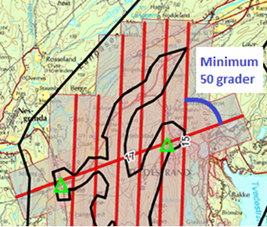
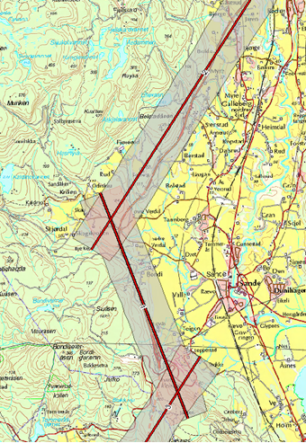
7.2.2.3. Kontrollflater
Absolutt nøyaktighet på punktsky i vertikaldomene etterprøves ved hjelp av landmålte kontrollflater innenfor kartleggingsområdet. Antall og plassering av kontrollflater bestemmes ved flyplanlegging og kontrollflater må plasseres på en egnet hard og plan flate. Kontrollflater kan legges til områder med grusdekke hvor harde flater ikke er tilgjengelig.
KRAV LASER KONTROLLFLATER - FORM OG STØRRELSE
-
Størrelsen på kontrollflaten er avhengig av den planlagte punkttettheten, intensjonen er at hver kontrollflate inneholder minst 20 lasermålinger. Se Tabell 18.
-
Rundt en kontrollflate skal det være 0,5 m buffersone fri for obstruksjoner.
-
En kontrollflate er definert av et gitt antall landmålte punkt. Punktene skal fordeles jevnt som vist i Figur 9, Figur 10 og Figur 11 ut fra planlagt punkttetthet.
| Form Kontrollflate (m) | Krav til antall landmålte punkt | Planlagt punkttetthet |
|---|---|---|
4x4 |
25 |
Fra 2 punkt/m2 |
2x2 |
13 |
Fra 5 punkt/m2 |
1,5x1,5 |
13 |
Fra 10 punkt/m2 |
0,5x0,5 |
5 |
Fra 80 punkt/m2 |
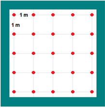
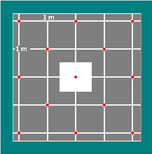
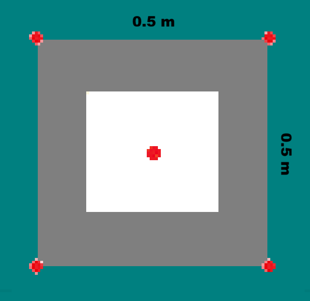
I kartleggingsprosjekt med både Laser og Foto kan senter av kontrollflate signaleres. Signalet skal i så fall inngå i signaleringsplan for foto.
KRAV LASER KONTROLFLATER TIDSGYLDIGHET
-
Kontrollflater og hjulspor skal måles inn samme år som datafangsten gjennomføres. Unntak kan avtales der prosjekter går over flere år.
KRAV LASER KONTROLLFLATER - ANTALL OG PLASSERING
-
En kontrollflates gyldighetsområde defineres med en buffer på 6 km radius fra kontrollflatens senter.
-
Kontrollflater skal planlegges slik at hele prosjektområdet er dekket av kontrollflatenes gyldighetsområder. Se Figur 12 for et eksempel.
-
Antall kontrollflater skal ikke være under et minimum på 3 flater pr. sammenhengende skanneblokk. Oppdragstaker kan slå sammen mindre områder til sammenhengende skanneblokk for å redusere behov for flater. Se Figur 13 for et eksempel.
-
Avvik fra antall og plassering av kontrollflater (for eksempel ved laserskanning av store områder uten infrastruktur eller mange spredte øyer) kan tillates dersom oppdragsgiver har åpnet for dette i teknisk spesifikasjon for oppdraget. I slike tilfeller skal det sørges for at korrekte "GNSS-shift" blir påført alle striper.
-
Kontrollflatene skal plasseres på en hard flat flate (asfalt, betong, plan og hard grusveg). Som hovedregel skal kontrollflatene plasseres innenfor prosjektavgrensingen. Dersom dette ikke er praktisk mulig, plasseres kontrollflatene i umiddelbar nærhet. Uansett skal laserdata over kontrollflatene inngå i leveransen.
-
Maksimum helning internt i flaten skal ikke overstiger 5 %. Dersom helningen overstiger dette kan en grunnrissfeil påvirke resultatet av høydeanalyse.
-
Rundt kontrollflatene skal det være en buffersone på minimum 0,5 meter. Helningen på buffersonen skal ikke overskride 5 %. Dersom det ikke benyttes en buffersone rundt målt kontrollflate kan grunnrissfeil påvirke resultatet av høydeanalysen.
-
Når kontrollflater måles inn i terrenget er det ikke krav om oppmerking av målepunktene. I praksis så vil oppmerking være gunstig for å sikre at samme målepunkt blir benyttet. Dersom målepunktene merkes i felt skal det benyttes en krittspray eller kritt som forsvinner etter kort tid.
-
Det skal leveres gyldighetsplott for kontrollflatemetoden.
Som et alternativ til innmåling av tradisjonelle kontrollflater, kan hjulsportmetoden benyttes. Ved hjulspormetoden måler man inn posisjonen til målebilens bakhjul ved hjelp av GNSS og treghetsnavigasjonsutstyr (INS). De målte punktene brukes til kontroll og støtte for stripejusteringen. Det benyttes robust statistikk i analysen av høydedifferanser mellom hjulspor og laserdata for å filtrere bort grove feil. Det store antallet målepunkt gir et bra datagrunnlag slik at eventuell støy vil bli utlignet av antall målinger. Målinger utført med hjulspormetoden har et gyldighetsområdet tilsvarende en sirkel med radius 6 km. Dette gjelder for samtlige innmålte punkt med hjulspormetoden med tilstrekkelig nøyaktighet.
KRAV LASER KONTROLLFLATER - HJULSPORMETODEN
-
Svake posisjonsløsninger skal utelates. Nøyaktighet til målingene skal følge Krav laser kontrollflater - nøyaktighet.
-
Måleutstyret skal kalibreres for hver installasjon. Dokumentasjon for kalibrering skal leveres sammen med kontrollflaten.
-
Krav til målingenes utstrekning/spredning er likt for kontrollflatemetoden og hjulspormetoden.
-
Ved datainnsamling med hjulspormetoden skal målingene utføres kontinuerlig gjennom prosjektområdet. Dette på en slik måte at hele området er dekket av kontrollmålingenes gyldighetsområder.
-
Nøyaktigheten på hjulspormetoden skal tilsvare nøyaktigheten til kontrollflate metoden.
-
Alle prosjekt skal ha minst en kontrollflate målt med kontrollflatemetoden. Dette for å kontrollere innmålingssystem for hjulspormetoden der denne metodikken er benyttet. Lokasjonen til denne kontrollflaten skal da være i umiddelbar nærhet til hjulspordataene.
-
Helningskravet på maksimalt 5 % i Krav laser kontrollflater - antall og plassering gjelder ikke for hjulspormetoden.
-
Det skal leveres gyldighetsplott for hjulspormetoden.
KRAV LASER KONTROLLFLATER - NØYAKTIGHET
-
Punktene i kontrollflaten skal måles inn med standardavvik maksimalt lik 1/3 av kravet til høydenøyaktighet i den ferdige punktskyen.
-
Samme høydereferansemodell skal benyttes for innmåling av kontrollflate som for laser punktskyen.
-
Landmålingsrapport.
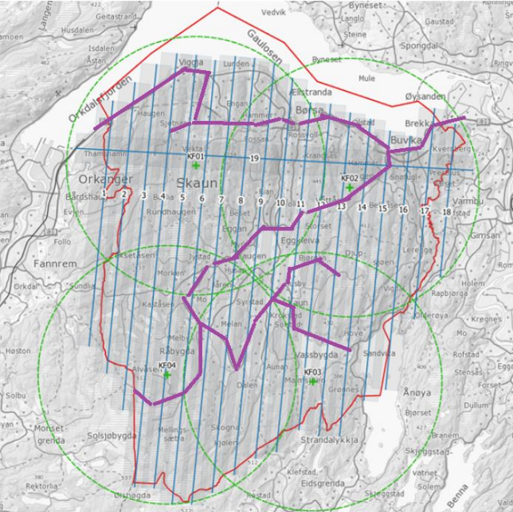
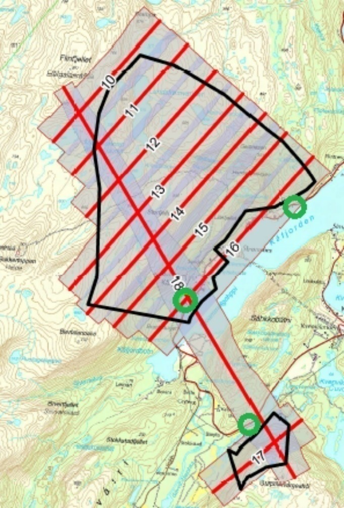
7.2.2.4. Kontrollprofiler
KRAV LASER KONTROLLPROFILER
-
Kontrollprofiler skal benyttes for å kontrollere og eventuelt justere for systematisk avvik i grunnriss. Dersom mønelinjen i eksisterende FKB-data oppfyller nøyaktighetskravet kan denne benyttes i grunnrissanalysen. I prosjekt utenfor bebyggelse må terrenglinjer benyttes.
KRAV LASER KONTROLLPROFILER - ANTALL OG PLASSERING
-
Et profilpar består av en profil i N-S-retning og en profil i Ø-V-retning.
-
Minimum antall profilpar i et laserprosjekt skal være 3.
-
Minimum antall profilpar i hver laserblokk skal være 1.
-
Profilene kan ha en annen orientering enn N-S/Ø-V, men det skal etterstrebes at profilene i ulik retning er orientert vinkelrett på hverandre.
KRAV LASER KONTROLLPROFILER - FORM OG STØRRELSE
-
Ved mønelinjer skal det måles minimum 4 punkt på hver takflate slik at mønelinjen kan beregnes fra skjæringspunktet mellom flatene.
-
Ved terrenglinjer skal det utføres minimum en måling pr. meter, total lengde bør være minimum 10 meter. Knekkpunkter i terrenget skal måles.
-
Maksimal terrenghelning skal være 60 grader, og minimum terrengvariasjon i høyde på terrengprofilen skal være 2 meter.
KRAV LASER KONTROLLPROFILER - NØYAKTIGHET
-
De enkelte punktene i kontrollprofilen skal måles inn med standardavvik maksimalt lik 1/3 av kravet til grunnrissnøyaktigheten i den ferdige punktskyen.
-
Samme høydereferansemodell skal benyttes for innmåling av kontrollprofil som for laser punktskyen.
-
Landmålingsrapport.
7.2.3. Utføring av datainnsamling
Til forskjell fra flyfotografering, kan laserskanning utføres uavhengig av solvinkel og sollys. Laserskanneren er en aktiv sensor som skaper sin egen belysning av overflaten. Dette medfører at laserskanning i utgangspunktet kan utføres hele året og når som helst på døgnet. Det er likevel viktig å vurdere når på året det er ønskelig å fly med hensyn til vegetasjon og snø. Best gjennomtrengning til bakken vil oppnås før løvsprett eller etter løvfall. Dersom man ønsker å ha en god terrengmodell bør laserskanningen gjennomføres før åkrene og bunnvegetasjon i skog har kommet for langt i vekst.
Laserskanning kan gjerne gjennomføres dersom det er skyer over flyet. Hvis det kommer fuktighet mellom fly og bakke (snø, regn, tåke eller lavt skydekke) vil lyset reflekteres og medføre svært få eller ingen retursignaler fra bakken.
KRAV LASER UTFØRING AV LASERSKANNING
-
Krav til GNSS/INS-sensor se Kapittel 6.3.1.2, “Krav til GNSS/INS”.
-
Krav til GNSS/INS-datafangst se Kapittel 6.3.2.2, “Krav til innsamling av GNSS/IMU-data”.
-
Parallelle nabostriper skal som hovedregel flys i motsatt retning for å bestemme eventuelle systematiske avvik mellom stripene.
-
Det skal ikke være fuktighet mellom fly og bakke (snø, regn, tåke eller lavt skydekke).
ANBEFALING LASER UTFØRING AV LASERSKANNING
-
For å unngå skjev punktfordeling og redusert nøyaktighet bør FLS ikke gjennomføres ved sterk vind (i flyhøyden) eller ved mye turbulens.
7.3. Prosessering av georeferert punktsky
7.3.1. Prosessering av GNSS/INS-data
Krav til GNSS/INS-prosessering for laserskanning baserer seg på krav til GNSS/INS-prosessering for Fotogrammetri og det vises til relevante paragrafer i Kapittel 6.3.3, “Beregning av GNSS/INS-data”.
Ved avtale så er det tillatt å bruke flere sensorer (GNSS, IMU og stripejustering) enn det som er definert i dette kapittelet i posisjon- og orienteringsbestemmelse av punktskya.
Samtidig georeferering av flere sensorplattformer som flybildekamera og laserskanner er tillatt ved avtale. Alle kravene for hver sensor skal følges. Det kreveres at vinkler og avstander mellom koordinatsystemet til hvert sensorsystem er kjent. Dersom vinkler og avstander mellom koordinatsystemene endres under datafangsten skal denne endringen måles og anvendes i navigasjonsløsningen for hvert enkelt sensorsystem. Hvis det er avvik mellom kravene som stilles for hver sensor, så brukes det strengeste kravet.
Krav til rapportering er detaljert i Kapittel 6.3.5, “Egenkontroll og rapportering (fotorapport)”, kategori "GNSS/INS".
7.3.2. Matching av punktsky
For å oppnå god nøyaktighet på punktskyen er det nødvendig å utføre matching av laserdataene. Denne prosessen innebærer å beregne og korrigere for systematiske og tilfeldige avvik i punktskyen. Ved matching av laserdata skilles det på daglig kalibrering og stripejustering.
7.3.2.1. Dokumentasjon av daglig kalibrering
Daglig kalibrering er en utvidelse av kalibrering av laserskanneren som er relatert til den enkelte flygning. De innsamlede data i tverrstripeområdene brukes for å beregne gjenværende vinkelavstander mellom de ulike koordinatsystemene og korreksjonsfaktorer for skannermekanismens retningsmåling.
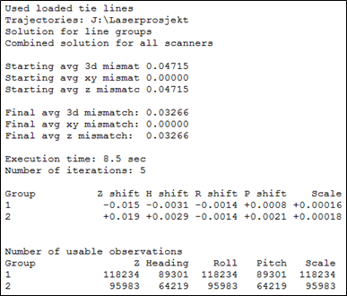
KRAV LASER DOKUMENTASJON PÅ DAGLIG KALIBRERING
-
Beskrivelse av benyttet metode for daglig kalibrering.
-
Oppdragstaker skal gi sin vurdering av resultatet.
-
Dersom daglig kalibrering ikke påføres skal dette begrunnes.
7.3.2.2. Stripejustering
Etter utført daglig kalibrering kan det være gjenværende tilfeldige avvik mellom flystripene i prosjektet. De innsamlede dataene i tverrstripeområder og overlappsområder mellom flystripene benyttes til å beregne stripevise korreksjoner.
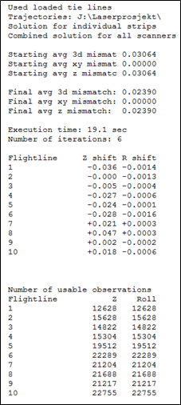
KRAV LASER DOKUMENTASJON PÅ STRIPEJUSTERING
-
Beskrivelse av benyttet metode for stripejustering.
-
Oppdragstaker skal gi sin vurdering av resultatet.
-
Dersom stripejustering ikke påføres skal dette begrunnes.
-
Stripejustering og datasettets homogenitet dokumenteres med homogenitetsplott, se Krav laser dokumentasjon på kontroll av punktsky.
7.3.3. Kontroll av punktsky, systematiske avvik
Erfaring viser at det ofte er behov for korreksjon for systematiske avvik i de enkelte prosjekter.
Ulike Feilkilder som kan gi systematiske avvik er:
-
GNSS/INS-løsningen.
-
Systematisk avvik fra stripejustering.
-
Ytre væravhengige faktorer som trykk og temperatur.
-
Kalibrering av instrumentet.
Med bakgrunn i dette stilles krav om bruk av kontrolldata. For å kontrollere høydenøyaktighet benyttes kontrollflater og for å kontrollere grunnriss benyttes kontrollprofiler.
7.3.3.1. Kontroll av høydenøyaktighet
KRAV LASER HØYDEKONTROLL
-
Kontrollflater skal benyttes for å kontrollere og eventuelt justere for systematisk avvik i høyde på punktskyen. Analysen mot kontrollflaten skal utføres mot alle klasser med unntak av klasse 7 "støy-punkter".
-
Oppdragstaker skal begrunne årsak til at en kontrollflater som skiller seg fra resterende flater forkastes. Benyttede kontrollflater i justering og statistikk skal være i henhold til antall spesifisert i godkjent flyplan. Ved avvik uten åpenbare forklaringer (terrengendringer) skal det utføres kontrollmåling.
KRAV LASER DOKUMENTASJON PÅ HØYDEKONTROLL
-
Beskrivelse av benyttet metode for høydekontroll.
-
Dokumentasjon av beregnet og påført høydejustering på laserdataene.
-
Det kan maksimalt justeres for ett systematisk avvik i øst, nord og høyde pr. prosjektområde.
-
Endelig resultat etter eventuell høydejustering skal dokumenteres med høyderapport pr. kontrollflate, samt en sammenfattet oversikt med statistisk informasjon for alle flater. Se Figur 16 og Tabell 19.
-
Oppdragstaker skal gi sin vurdering av resultatet.
-
Kontrollflatenes navngiving skal følge navngiving i landmålingsrapporten.
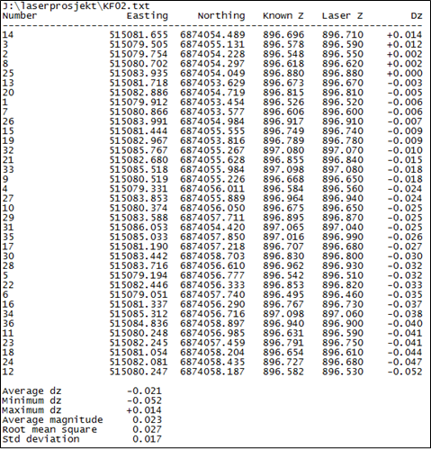
| Kontrollflate | Gjennomsnitt dH (m) | Maksimum dH (m) | Minimum dH (m) | RMS (m) | Standardavvik (m) |
|---|---|---|---|---|---|
KF01 |
0,026 |
0,039 |
0,013 |
0,027 |
0,006 |
KF02 |
-0,021 |
0,014 |
-0,052 |
0,027 |
0,017 |
KF03 |
0,014 |
0,029 |
-0,003 |
0,016 |
0,008 |
KF04 |
-0,009 |
0,001 |
-0,029 |
0,012 |
0,007 |
7.3.3.2. Kontroll av grunnrissnøyaktighet
KRAV LASER GRUNNRISSKONTROLL
-
For å dokumentere de aktuelle prosjektenes kvalitet i grunnriss skal målte kontrollprofiler benyttes for grunnrisskontroll.
-
Oppdragstaker skal undersøke og kommentere eventuelle avvik i grunnrisskontrollen som overstiger kravet til grunnrissnøyaktighet for det aktuelle prosjekt.
KRAV LASER DOKUMENTASJON PÅ GRUNNRISSKONTROLL
-
Beskrivelse av benyttet metode for grunnrisskontroll.
-
Dokumentasjon på beregnede avvik i grunnriss i sammenfattet oversikt. Se Tabell 20.
-
Oppdragstaker skal gi sin vurdering av resultatet.
-
Kontrollprofilenes navngivning skal følge navngivning i landmålingsrapport.
| Kontrollprofil | Type profil | Retning (grader) | Målt avvik (m) | Avvik dN (m) | Avvik dØ (m) |
|---|---|---|---|---|---|
KP01 |
Mønelinje |
6 |
0,08 |
0,01 |
0,08 |
KP02 |
Mønelinje |
97 |
0,10 |
0,10 |
-0,01 |
KP03 |
Terrenglinje |
13 |
0,09 |
0,02 |
0,09 |
KP04 |
Mønelinje |
290 |
0,09 |
-0,08 |
0,03 |
KP05 |
Terrenglinje |
9 |
0,11 |
0,02 |
0,11 |
KP06 |
Mønelinje |
95 |
0,17 |
0,17 |
-0,01 |
7.3.4. Dokumentasjon av homogenitet
KRAV LASER KONTROLL AV PUNKTSKY
-
Punktskyen må kontrolleres for tilfeldige feil. Dette er viktig for å avdekke mulige grove feil og manglende homogenitet i punktskyen.
Typiske feilkilder er:-
Drift i GNSS/INS-løsningen.
-
Stripejustering.
-
Kalibrering av instrumentet.
-
-
Oppdragstaker skal gi sin vurdering av resultatet. Resultatet skal være homogent, eventuelle mønster skal ikke forekomme.
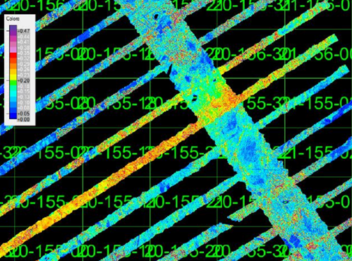
KRAV LASER DOKUMENTASJON PÅ KONTROLL AV PUNKTSKY
-
I overlappsområder skal det beregnes høydeavvik mellom stripene ved sammenligning av automatisk klassifisert terrengmodell for hver flystripe.
-
Resultatet skal dokumenteres numerisk i tabell.
-
Oppdragstaker skal gi sin vurdering av resultatet.
-
Stripejustering samt systemets kalibrering kan dokumenters med en av følgende fremgangsmåter:
-
Homogenitetsplott før og etter matching/stripejustering.
-
Resultat fra daglig kalibrering, stripejustering og homogenitetsplott etter matching/stripejustering.
-
Homogenitetsplottet skal dokumenteres med kartbladvise georefererte TIF-filer med oppløsning 1 meter, med tilhørende dH-verdi pr. piksel i meter med 2 desimaler.
-
7.4. Bearbeiding av laserdata (klassifisering)
Hvert punkt i punktskyen kan klassifiseres i separate klasser. Vanligste form for klassifisering er å klassifisere en terrengmodell ved å skille punkter som er treff på bakken fra de øvrige punktene i punktskyen. Avhengig av formålet med laserskanningen vil oppdragstakeren kunne klassifisere punktene i ulike lag, for eksempel bygninger, broer, vann, objekter 0–2 meter over bakken.
Gjeldende versjon av Produktspesifikasjon Punktsky [Punktsky] detaljerer hvilke klasser som tillates.
For å sikre et godt sluttresultat må datasettet gjennomgå en manuell etterkontroll for å fange eventuelle feil introdusert ved kjøring av automatiske klassifiseringsrutiner.
7.4.1. Grovfeilsøk
I laserdata vil det forekomme feil av type atmosfæriske treff og lave punkter som skyldes "multipath" eller feil bestemmelse av siste puls. Punkter av den siste feiltypen vil ofte bli inkludert i terrengmodellen siden mange klassifiseringsrutiner bygger på det prinsippet at det laveste punktet innen et gitt areal antas å tilhøre terrengmodellen. Prosessen med å oppdage lave punkter omfatter både automatiske rutiner og visuell betraktning av for eksempel skyggelagte relieffbilder.
7.4.2. Klassifisering av terrengmodell
Klassifisering av terrengmodell innebærer å skille punkter som er treff på bakken fra de øvrige punktene i punktskyen. Oppdragstaker optimaliserer parametersettingen på automatiske klassifiseringsrutiner for å redusere behovet for manuelt etterarbeid.
7.4.3. Klassifisering av andre objekter
Ved behov kan oppdragsgiver etterspørre klassifisering av objekter utover terrengmodell. Mulig klassifisering kan være bruer, store steiner, bygninger og kraftledninger. Supplerende vektordata kan være til støtte ved klassifisering av objekter.
KRAV LASER KLASSIFISERING
-
Oppdragstaker skal dokumentere benyttet programvare for feilsøking.
-
Oppdragstaker skal dokumentere benyttet programvare for automatisk klassifisering av terrengmodell.
-
Ved klassifisering av andre objekter kan det benyttes FKB-data og andre vektordata for å sikre samsvar mellom konstruksjon og klassifisert punktsky.
-
Manuell inspeksjon av laserdataene skal utføres for å sikre at feilklassifiseringer og mangelfull klassifisering fra de automatiske klassifiseringsrutinene korrigeres.
7.5. Egenkontroll og rapportering (laserskanning)
KRAV LASER RAPPORTERING LASERSKANNING
-
Rapport for laserskanning skal som minimum inneholde informasjonen spesifisert i Tabell 21.
| Kategori | Element | Innhold |
|---|---|---|
Generell informasjon |
Oppdragsgiver |
(adresse og prosjektleder) |
Oppdragets navn og nummer |
(LACHFFXX) |
|
Dekningsnummer |
(XX-12345) |
|
Punkttetthet |
(X pr m2) |
|
Datum |
(horisontalt datum, vertikalt datum, projeksjon og benyttet HREF-modell) |
|
Oppdragstaker |
(adresse, prosjektleder, fagansvarlig og underleverandører) |
|
Beskrivelse av oppdraget |
(produkt, areal og referanse til standarddokumenter) (eventuelle endringer/utvidelser til opprinnelig teknisk spesifikasjon) |
|
Antall eksemplar av rapport |
(antall og oppbevaringssted) |
|
Versjon |
(rapportversjonsnummer) |
|
Datering og signatur |
(dd.mm.åååå, signatur) |
|
Landmålingsrapporter |
Rapport innmåling av kontrollflater/hjulspormetoden |
Dokumentasjon i henhold til krav stilt i Kapittel 7.2.2.3, “Kontrollflater”. Rapport fra innmåling av kontrollflater skal legges ved som vedlegg til prosjektrapporten. Rapporten fra innmålingen skal inneholde bilder av innmålte flater. |
Rapport innmåling kontrollprofiler |
Dokumentasjon i henhold til krav stilt i Kapittel 7.2.2.4, “Kontrollprofiler” |
|
Gjennomføring av Laserskanning |
Fly |
(fabrikat, type, kallesignal og trykkabin ja/nei) |
Skannersystem |
|
|
Klarmelding |
|
|
Progresjon |
Oversikt over flydager med skannede flystriper pr. flydag. |
|
Værforhold |
Beskrivelse av generelle forhold, inkludert skyforhold, sikt, vind og turbulens. |
|
Problem, utfordringer og kommentarer til arbeidet |
Eventuelle problemer i forbindelse med gjennomføringen:
|
|
Vurdering av resultat |
En samlet vurdering av utføringen av laserskanningen og kvaliteten på arbeidene med hensyn til bestilling og øvrige krav. |
|
Bearbeiding av laserdata |
GNSS/INS-beregning |
|
Matching av punktsky |
Dokumentasjon i henhold til krav stilt i Kapittel 7.3.2, “Matching av punktsky”. |
|
Kontroll av punktsky og systematiske avvik |
Dokumentasjon i henhold til krav stilt i Kapittel 7.3.3, “Kontroll av punktsky, systematiske avvik”. |
|
Kontroll av punktsky og homogenitet |
Dokumentasjon i henhold til krav stilt i Kapittel 7.3.4, “Dokumentasjon av homogenitet”. |
|
Bearbeiding av laserdata og klassifisering |
Dokumentasjon i henhold til krav stilt i Kapittel 7.4, “Bearbeiding av laserdata (klassifisering)”. |
|
Leveranser |
Produktspesifikasjon |
Versjon av produktspesifikasjon og objektkatalog. |
Leveranser |
En fullstendig oversikt over alle leverte data, metadata og eventuelt medfølgende dokumentasjon skal listes opp. Oversikten skal minimum inneholde:
|
8. Kartlegging med mobil datafangst
8.1. Innledning
Datainnsamling med mobile lasersystemer (MLS), brukes ofte i kombinasjon med andre innsamlingsmetoder. I tillegg til laserskanner, kan datainnsamlingen utføres med opptak fra ulike sensorer som optiske kamera og georadar.
Standarden beskriver krav og anbefalinger for å sikre kvaliteten til sluttproduktet. Selve definisjonen av og kravet til sluttproduktene, vil ligge i registreringsinstrukser og produktspesifikasjoner. En viktig målsetting med standarden, er å legge til rette for økt bruk og gjenbruk av data fra MLS-datafangst.
KRAV MOBIL REFERANSERAMMER OG TRANSFORMASJONER
-
Referanserammer og transformasjoner som er brukt skal følge kravene gitt i Krav landmåling referanserammer og transformasjoner.
8.2. Omfang
Kapittelet omfatter mobil datafangst med laserskanner med opsjonelt kamera.
8.3. Posisjonering av mobil datafangst
MLS benytter seg av posisjons- og orienteringssystemer bygd opp rundt et treghetsnavigasjonssystem, også kalt "Inertial Navigation System" (INS). Et INS består av en "Inertial measurement Unit" (IMU) og tilhørende støttesensorer. Den primære støttesensoren er vanligvis en eller flere GNSS-mottakere ("Global Navigation Satellite System"), ofte i kombinasjon med optisk eller mekanisk hastighets- eller distansemåling (odometer). Det er også mulig å benytte andre former for støtteobservasjoner fra ulike sensorer sammen med et INS. Eksempler på dette har vi fra robotverden og "Simultaneous Localization and Mapping" (SLAM).
8.4. GDPR
Laser punktsky (også fargelagt punktsky) fra mobil datafangst vil i de fleste tilfellene ikke kunne brukes til å identifisere personer eller bilskilt. Produktet vil da ikke omfattes av GDPR-forordningen. Bildematerialet fra mobil datafangst, vil som hovedregel være omfattet av GDPR forordningen og nødvendige tiltak må utføres.
KRAV MOBIL GDPR
-
Oppdragsgiver har ansvar for å påse at GDPR følges, dersom ikke annet er avtalt. Dette avklares i samarbeid med oppdragstaker pr. prosjekt.
8.5. Fargelegging av punktsky
Påføring av fargeverdier på punktskyen, er opsjonelt. Dersom opsjon utløses, bør kvalitetselementer gitt i Tabell 22 hensyntas:
ANBEFALING MOBIL FARGELEGGING AV PUNKTSKY
| Kvalitetselement | Beskrivelse | Kvalitetsmål |
|---|---|---|
Tidsriktighet |
Tiden mellom bilder og lasermålinger. |
Bør være tatt samme dag. |
Fargekvalitet |
Naturtro farger. |
Subjektiv vurdering. |
Lysforhold |
Tilstrekkelig lysmengde til at lukkertid/bilens hastighet kan settes slik at bildene forbli skarpe. |
Lysforholdene bør være tilstrekkelige for å få fram informasjonen ønsket i hovedmålsettingen. |
Oppløsning |
Bildepikslenes faktiske størrelse i terrenget. |
Bør sammenfalle med produktets krav til detaljrikdom. |
Posisjon og orientering |
Geometrisk nøyaktighet til kameraet. |
Bør ha samme kvalitet som laserdataene. |
GDPR |
Informasjon som faller inn under GDPR-forordningen. |
Informasjon som faller under GDPR skal manipuleres, slik at sluttproduktet er innenfor GDPR-forordningen. |
8.6. Klassifisering
Klassifisering av punktsky er opsjonelt. Der produktets målsetting krever klassifisering, følges kravene til klassifisering gitt i Kapittel 7.4, “Bearbeiding av laserdata (klassifisering)”.
8.7. Ulike kvalitetsnivåer
Produkter fra mobil datafangst deles inn i ulike kvalitetsnivåer. De ulike nivåene vil påvirke kompleksitet, kostnad og krav til stedfestingsnøyaktighet. Det laveste nivået innebærer lav absoluttnøyaktighet. Mulige bruksområder kan være analyser knyttet til kollisjon, kjøreboks og vegetasjon, der relative målinger er viktigst. Nivåene "middels" og "god" kan brukes til generell prosjektering, tunnelinnmåling, NVDB/FKB-kartlegging og overvannsanalyser. Punktskyen er her en større del av sluttproduktet og ofte supplert med ekstra målemetoder som landmåling, terrestrisk skanning eller flybåren laserskanning. Det høyeste nivået brukes der høy absolutt stedfestingsnøyaktighet er nødvendig, for eksempel i jernbaneprosjektering, kontroll og vedlikehold av spor og tunneler, samt endringsanalyser som krever svært presise punktskydata.
8.8. Kvalitetselement og kvalitetsmål
For mobil datafangst, deles kvalitetselementene i stedfestingsnøyaktighet, fullstendighet og egenskapskvalitet. Innenfor hver kategori defineres et sett med ulike kvalitetselementer med videre definerte kvalitetsmål. Ved bestilling må alle kvalitetselementene tas stilling til.
8.8.1. Stedfestingsnøyaktighet
Med stedfestingsnøyaktighet menes hvor godt stedfestingen til et objekt samsvarer med virkeligheten, realisert i angitt referanseramme. Metoden som brukes til å evaluere absolutt stedfestningsnøyaktighet følger standarden Geodatakvalitet [GK]. Kravene gjelder for tydelige, veldefinerte objekter innenfor prosjektområdet. Kvalitetselement knyttet til kriteriet om stedfestingsnøyaktighet er angitt i Tabell 23 med beskrivelse.
| Kvalitetselement | Beskrivelse |
|---|---|
Absolutt stedfestingsnøyaktighet |
Absolutt stedfestingsnøyaktighet deles inn i tre kvalitetsmål: Systematisk avvik, tilfeldig variasjon og maksimalt avvik. Kvalitetsmålet systematisk avvik baserer seg på avvik mellom senter punktsky og punktskyens sanne verdi, målt i enten i høyde (Z), grunnriss (XY), eller 3D (XYZ). Dette gitt i prosjektets referanseramme. Den midlere verdien av de målte avvikene gir det systematiske avviket. Kvalitetsmålet følger standarden Geodatakvalitet [GK]. 
Figur 18. Rød pil viser en måling som kan inngå i beregningen av absolutt stedfestingsnøyaktighet, systematisk avvik.
Kvalitetsmålet tilfeldig variasjon tar utgangspunkt i målingene utført for å beregne systematisk avvik. Målingene brukes til å beregne standardavvik og følger standarden Geodatakvalitet [GK]. Kvalitetsmålet maksimalt avvik tar utgangspunkt i målingene utført for å beregne systematisk avvik, hvor størst målte avvik angir kvalitetsmålet maksimalt avvik. |
Relativ Stedfestningsnøyaktighet |
Relativ stedfestningsnøyaktighet undersøkes innad i et avgrenset observerbart område på harde veldefinerte flater. Avgrensing:
Målingene for å beregne relativ stedfestningsnøyaktighet utføres langs normalvektoren til avgrensningens senterpunkt. Relativ stedfestningsnøyaktighet deles inn i de to kvalitetsmålene systematisk avvik og tilfeldig variasjon: Systematisk avvik beregnes ut fra flere utvalgte avgrensningsområder. For hvert område måles avstanden mellom senter punktsky for skanninger utført i forskjellig tidsintervaller. Et tidsintervall vil typisk være kun få sekunder. Middelet av målingene fra alle de utvalgte avgrensningsområdene gir det systematiske avviket. 
Figur 19. Figuren viser to ulike skanninger av det samme avgrensningsområdet. Rød pil viser måling som kan inngå i beregning av relativ nøyaktighet, systematisk avvik i høyde.
Tilfeldig variasjon angir målestøy til sensoren. Den tilfeldige variasjonen måles innenfor godkjente avgrensingsområder hvor lasermålingene er utført innenfor et svært tidsbegrenset intervall (kun få sekunder). Dersom avgrensningsområdet er skannet flere ganger skal skanningene behandles hver for seg når en beregner tilfeldig variasjon. 
Figur 20. Figuren viser en skannet punktsky sett fra siden, rød pil viser relativ nøyaktighet, tilfeldig variasjon
|
KRAV MOBIL STEDFESTINGSNØYAKTIGHET VED MOBIL DATAFANGST
| Kvalitetselement | Kvalitetsmål | Lav (cm) | Middels (cm) | God (cm) | Høy (cm) |
|---|---|---|---|---|---|
Absolutt stedfestingsnøyaktighet |
Systematisk avvik |
0 - 200 |
0 - 20 |
0 - 6 |
0 - 2 |
Standardavvik |
<50 |
<5 |
<2 |
<1 |
|
Maksimalt avvik |
Systematisk avvik + 2 ganger Standardavvik |
||||
Relativ nøyaktighet |
Systematisk avvik |
0 - 200 |
0 - 10 |
0 - 4 |
0 - 2 |
Tilfeldig variasjon og toleranse |
5 (+0/-5) |
5 (+0/-5) |
3 (+0/-3) |
1 (+0/-1) |
|
8.8.1.1. Kjentpunkt
Se definisjon Kjentpunkt.
8.8.1.2. Kontrollpunkt
Se definisjon Kontrollpunkt.
KRAV MOBIL KJENTPUNKT OG KONTOLLPUNKT
-
Den absolutte nøyaktighet til kjentpunktet skal være lik eller bedre enn kravet til den absolutte nøyaktigheten til punktskyen. Dersom nøyaktigheten er 1/3 av kravet, kan kontrollpunktene benyttes direkte i statestikkberegningene. Dersom nøyaktighetene til kontrollpunktene er dårligere, skal standardavviket til kjentpunktene benyttes i statestikkberegningene. Dette etter krav i standarden Geodatakvalitet [GK].
-
Det stilles ikke konkrete krav til omfang av kjent- og kontrollpunkt, ettersom prosjektområde, GNSS-tilgjengelighet, målesystem og prosesseringsløyper har stor betydning for kvaliteten som oppnås rett fra INS. Metodikk og omfang skal være behovsstyrt og faglig begrunnet av leverandør i hvert enkelt oppdrag.
8.8.1.3. Kontrollmetode og kontrollplan
Kontroll kan gjennomføres ved å benytte en eller flere metodikker:
-
Innmålte kontrollpunkt. Tradisjonelt innmålte kontrollpunkt er fysiske objekt som lar seg gjenfinne i punktskyen, for eksempel i form av geometri eller intensitet. Kontrollpunkt kan eksempelvis være signalerte flater, targets eller skarpe detaljer.
-
Gjentatte passeringer ved mobil datafangst kan gi observasjoner/målinger av samme område. Metoden kan erstatte innmålte kontrollpunkt dersom:
-
Passeringene har tilstrekkelig tidsforskyvning over 15 minutter.
-
Datasettene skal være fri for systematiske avvik, dokumentert med kalibrering.
-
Samsvaret mellom passeringene dokumenteres i XY og Z.
-
Avviket ligger innenfor kravene for valgt nøyaktighetsnivå.
-
-
Andre uavhengige datakilder kan benyttes dersom deres kvalitet er tilstrekkelig for kontroll av det aktuelle kravet. Eksempler på andre uavhengige kilder er:
-
Eksisterende høydedata.
-
FKB/NVDB eller andre kvalitetssikrede vektordatasett.
-
Andre datasett av kjent kvalitet.
-
KRAV MOBIL KONTROLLPLAN
-
Uavhengig av kontrollmetodikk skal leverandøren utarbeide en kontrollplan hvor det beskrives hvor store feil kontrollmetodikken er i stand til å avdekke ved kontrollpunktene.
-
Kontrollplanen skal angi hvor store feil som kan oppstå mellom kontrollpunktene.
8.8.2. Fullstendighet
I kvalitetskategorien fullstendighet inngår elementene dekning, punkttetthet, detaljeringsgrad, punktdistribusjon og overlapp foto. Disse beskriver hvor komplett datasettet er, hvor tett punktene ligger, hvor detaljert informasjonen er, hvordan punktene fordeler seg i området og hvor mye fotodata overlapper hverandre. Kvalitetselementer knyttet til kriteriet om fullstendighet er angitt i Tabell 25 med beskrivelse.
| Kvalitetselement | Beskrivelse |
|---|---|
Dekning |
Punktsky fra bilbåren laserskanning begrenser seg til å dekke omgivelser der sensoren har innsyn fra de kjørbare, harde flatene i prosjektet. Krav til dekning innenfor prosjektområdet må komme frem av produktspesifikasjonen i det enkelte prosjektet. Eksempelvis dersom det er krav til full dekning innenfor hele prosjektområdet må dette komme frem av kravspesifikasjonen, slik at eventuelle skyggepartier fra den bilbårne innsamlingen kan vurderes supplert med andre innsamlingsmetoder. |
Punkttetthet |
Punkttettheten må være tilstrekkelig høy til å kunne identifisere og definere objekter i punktskyen relevant for det enkelte prosjekt. |
Detaljeringsgrad |
Detaljeringsgraden i prosjektet angir krav til definerbarhet av relevante objekter i punktskyen. |
Punktdistribusjon |
Hvordan punktene blir fordelt i punktskyen er avhengig av valg av skanner under datainnsamling, samt valg av skanningsparametere og -hastighet. Hva som er optimal punktdistribusjon i det enkelte prosjekt er avhengig av bruksområde og sluttprodukt. |
8.8.3. Egenskapskvalitet
I kategorien egenskapskvalitet inngår elementene fotavtrykk, intensitet, farge, klassifisering, målemetode (fase/puls) , sensorID og tidsstempling. Disse elementene beskriver kvaliteten på ulike egenskaper ved datainnsamlingen, som fotavtrykkets størrelse Kapittel 7.1.1.1, “Laserskanner”, målt intensitet, eventuell fargeinformasjon, hvilken målemetode som er brukt, samt identifikasjonen til sensoren som har samlet inn dataene. Med egenskapskvalitet i standarden Geodatakvalitet [GK], menes nøyaktighet av kvantitative egenskaper (kan måles på en skala) og riktighet av ikke-kvantitative egenskaper (egenskaper som skiller ut informasjon, men uten å kunne rangeres) og eventuelt objektenes klassifisering og relasjoner.
Kvalitetselementer knyttet til kriteriet om egenskapskvalitet er angitt i Tabell 26 med beskrivelse.
| Kvalitetselement | Beskrivelse |
|---|---|
Fotavtrykk |
Laserstrålens fotavtrykk er avhengig av sensorens spesifikasjoner, avstanden mellom observert objektet og lasersensoren, samt innfallsvinkelen til objektet som måles. Fotavtrykkets avgrensning defineres ut fra en prosentvis reduksjon av lysintensitet fra fotavtrykkets senter. Fotavtrykkets yttergrense settes der energien målt fra fotavtrykkets senter er redusert til 1/e2 som utgjør omtrent 13,5 %. |
Intensitet |
Alle målepunkter i punktskyen skal ha en intensitetsverdi. Ved bruk av flere lasersensorer i innsamlingen må intensitetsverdier tilpasses (strekkes) ved behov for å oppnå en homogen punktsky. |
Farge |
Punktene i punktskyen kan gis RGB-farge fra bilder tatt samtidig som laserskanningen, med forutsetning om at datainnsamling kan utføres i tilstrekkelige lysforhold. Farge er valgfritt og opp til det enkelte prosjekt å vurdere om relevant og derfor om det skal stilles krav til dette eller ikke. |
Klassifisering |
Følger krav fra Kapittel 7.4, “Bearbeiding av laserdata (klassifisering)” samt Produktspesifikasjon Punktsky [Punktsky]. Klassifisering er valgfritt og opp til det enkelte prosjekt å vurdere om relevant og derfor om det skal stilles krav til dette eller ikke. |
Målemetode (fase/puls) |
Valg av lasersensortype, fase- eller pulsskanner, avhenger av sluttprodukt og bruksområde. |
Sensor-ID |
Punkter fra ulike skannere skal kunne skilles fra hverandre. |
Tidsstempling |
Dato og tid for målepunkter, hvis tilgjengelig for sensortypen, angitt som GPS-standardtid. Dersom systemet ikke angir GPS-tid skal siste datafangst dato angis i punktskyfilens hode. |
8.9. Dokumentasjonskrav
KRAV MOBIL DOKUMENTASJON AV MOBIL DATAFANGST
Leverandøren skal utarbeide en sluttrapport som svarer ut:
-
Kravene til rapportering beskrevet i Kapittel 7, Kartlegging med flybåren laserskanning (det som er aktuelt for mobil datafangst).
-
Kontrollplan, se Kapittel 8.8.1.3, “Kontrollmetode og kontrollplan”
-
Beskrive og dokumentere oppnådd resultat for alle kvalitetskategoriene:
-
Stedfestingsnøyaktighet
-
Fullstendighet
-
Egenskapskvalitet
-
9. Vektorisering fra punktsky og modell som metode for etablering av basis geodata
9.1. Innledning
Vektorisering fra punktsky og modell kan være en alternativ metode til fotogrammetrisk kartkonstruksjon for fremstilling av vektordata. Metoden er særlig aktuell for punktskyer fra mobil datafangst og drone, men kan også være aktuell for andre datafangstmetoder.
Vektorisering fra punktsky innebærer bruk av automatiserte og manuelle operasjoner som tar utgangspunkt i geometri og intensitetsinformasjon i punktsky for fremstilling av vektordata. Egnethet og kvalitet vil variere for ulike objekttype.
Vektorisering fra modell innebærer bruk av automatiserte og manuelle operasjoner som tar utgangspunkt i geometri og fargeinformasjon fra et 3D ortofoto / 3D Mesh. Egnethet og kvalitet vil variere for ulike objekttyper.
Ulike datakilder har ulike egenskaper og kvaliteter. Dette kan ha betydning for datakildenes egnethet til å gjengi objektene etter kravene gitt i benyttet registeringsinstruks. Uavhengig av benyttet datakilde er det det til enhver gjeldene registreringsinstruks som er gjeldene for sluttproduktet.
KRAV VEKTOR SENSORTYPER
-
Dersom ulike sensortyper benyttes til fremstilling av punktskyen, slik som fargelagt punktsky, skal bildematerialet og laser punktskyen inneha samme geometriske kvalitet og tidsepoke (innenfor et døgn).
Felles for begge tilnærmingene er at krav til vektorisering følger kravene i registreringsinstruksen gitt for den objekttypen som skal vektoriseres.
KRAV VEKTOR REFERANSERAMMER OG TRANSFORMASJONER
-
Referanserammer og transformasjoner som er brukt skal følge kravene gitt i Krav landmåling referanserammer og transformasjoner.
9.2. Kvalitetsparametere ved vektorisering fra punktsky
Oppnådd kvalitet på vektordata kartlagt fra punktsky/modell vil være påvirket av flere faktorer. Vi kan skille mellom kvalitetselementer knyttet til datagrunnlaget og kvalitetselementer i selve arbeidet med fremstilling av vektordata fra datagrunnlaget. Kvalitetselementene til datagrunnlaget følger angitte elementer gitt av datafangstmetode. Kartlegging fra bildedata følger Kapittel 6, Kartlegging med fotogrammetri, punktsky fra bil følger Kapittel 8, Kartlegging med mobil datafangst og punktsky fra luftbåren sensor følger Kapittel 7, Kartlegging med flybåren laserskanning
Kvalitetselementer i datagrunnlaget:
-
Stedfestingsnøyaktighet
-
Fullstendighet
-
Egenskapskvalitet
Kvalitetselementer i vektorisering:
-
Geometrisk avvik. Hvor godt samsvarer vektorisert punkt, eller noder i kurve, med tilhørende lokasjon i punktskyen (i grunnriss og høyde).
-
Tverravvik (grunnriss) / pilhøyde (høyde). Tetthet på noder langs kurven, og resulterende maksimalt avvik mellom punktsky og linjestykke i vektordata.
-
Fullstendighet i vektorisering (også påvirket av fullstendighet i punktsky).
| Kvalitetselement | Beskrivelse |
|---|---|
Knekkpunkt avvik (i grunnriss og høyde) |
Mål på hvor godt samsvar det er mellom vektoriserte punkt eller noder i kurve med punktskyen. Måles som avstand fra node til punktsky (i grunnriss og høyde). Samsvaret bør vurderes basert på senter av punktskyens "målestøy" da dette midler feil som følge av målesystemets presisjon. |
Tverravvik/pilhøyde (i grunnriss og høyde) |
Mål på graden av generalisering i vektoriseringen. Definerer avviket mellom vektorisert linjestykke (mellom noder) og det virkelige linjeforløpet i punktskyen (i grunnriss og høyde). |
Fullstendighet |
Mål på hvilke enheter som er med i et datasett i forhold til de som burde være med. Ved vektorisering fra punktsky har dette kvalitetselementet to ledd; fullstendighet på punktskyen som benyttes i vektoriseringen og fullstendighet i selve vektoriseringen. |

9.3. Kvalitetskrav
9.3.1. Krav til geometrisk avvik og tverravvik/ pilhøyde
KRAV VEKTOR GEOMETRISK AVVIK OG TVERRAVVIK/PILHØYDE
-
Ved vurdering av kvalitet på vektordata basert på vektorisering i punktsky/modell, må både stedfestingsnøyaktighet for punktskyen, geometrisk avvik i vektorisering og tverravvik/pilhøyde i grunnriss og høyde (tverravvik/pilhøyde) vurderes.
-
Når metoden brukes som alternativ til kartkonstruksjon vil kvalitetskrav til vektordata følge av kartleggingsstandard og kvalitetsklasser på objekttyper definert i aktuell produktspesifikasjon.
-
Kvadratsummen av stedfestingsnøyaktighet på punktsky/modell, og den største verdien av geometrisk avvik eller tverravvik/pilhøyde må være bedre enn kvalitetskravet for den aktuelle objekttypen:
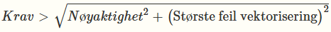
9.3.2. Krav til fullstendighet
KRAV VEKTOR FULLSTENDIGHET
-
Krav til fullstendighet skal følge krav i aktuell produktspesifikasjon.
9.4. Kontroll
For å kontrollere geometrisk avvik og tverravvik/pilhøyde sammenlignes vektoriserte objekter med referanseobjekter i punktskyen, og avvik måles i både i grunnriss (horisontalt) og høyde (vertikalt).
Avvik i høyde kan for egnede objekttyper beregnes ved geometrisk kontroll på vektoriserte noder mot tilsvarende interpolerte høydeverdi i punktskyen. Eksempel på egnet objekttype er Kjørebanekant som ligger i god avstand fra knekklinjer i punktskyen.
Avvik i grunnriss må i større grad kontrolleres ved manuelle inspeksjoner, eventuelt være integrert i arbeidsflyten for selve vektoriseringsarbeidet.
9.4.1. Egnethet av vektorisering til fremstilling av vektordata
Ulike typer av punktsky kan benyttes som grunnlag for vektorisering av FKB-datasett, avhengig av hvilken objekttype og hvilke kvalitetskrav som gjelder. Valg av datasett og metode har stor betydning for nøyaktigheten og detaljnivået på resultatet, og det er derfor viktig å vurdere egnetheten for hvert enkelt formål. Tabell 28 gir eksempler på punktsky/modell som egner seg for vektorisering av ulike relevante datasett, sammen med kommentarer om relevante metoder og eventuelle begrensninger. Eksemplene vil endre seg i takt med teknologiutviklingen og produktspesifikasjonene.
| Datasett | Egnethet av punktsky | Kommentar |
|---|---|---|
FKB-Bane |
Mobil datafangst |
Svært godt egnet |
FKB-BygnAnlegg |
Mobil datafangst/punktsky fra drone (ved laserskanning eller bildematching) |
Enkelte objekttyper langs MurLoddrett, SkråForstøtningsmur er godt egnet. For fullstendighet kan det være nødvendig med punktsky fra drone. |
FKB-Bygning |
Punktsky fra drone (ved laserskanning eller bildematching) |
Ved mobil datafangst vil fullstendighet være begrenset, spesielt for objekter på tak, men metoden kan muliggjøre andre objekttyper enn de som typisk innhentes med fotogrammetrisk kartlegging (Fasadeliv, Grunnmur) |
FKB-Vann |
Punktsky fra luftbåren datafangst Punktsky fra drone (ved laserskanning |
|
FKB-Veg |
Mobil datafangst |
Svært godt egnet |
NVDB Vegnett Pluss |
Mobil datafangst |
Svært godt egnet |
NRL |
Punktsky fra luftbåren datafangst Punktsky fra drone (ved bruk av laserskanning) |
Ved punktsky fra luftbåren datafangst kreves tilstrekkelig punkttetthet til at det er registrert treff på linjen. Punkter kan ligge filtrert i klasse 7 – Støy. |
9.4.2. Regneeksempel kvalitetskrav
Hensiktikten med regneeksempelet er å vise en praktisk bruk av Formel 3. Formelen består av to komponenter nøyaktighet og største feil vektorisering. I det følgende gis et eksempel på en praktisk anvendelse av de to komponentene. For å beregne parameterne tas det som hovedregel hensyn til kravet i produktbestillingen, men det er også anledning til å ta utgangspunkt i oppnådd nøyaktighet der mengden kontrollpunkt/kontrollmetodikk gir et sannferdig bilde av nøyaktigheten. I det følgende regneeksempelet tas det utgangspunkt i bestilt nøyaktighet.
9.4.2.1. Komponent Nøyaktighet
I eksempelet defineres nøyaktighet som punktskyens eller modellens nøyaktighet. Den er gitt ved feilforplantning og Formel 4, hvor μ er systematisk avvik og σ=standardavvik.
Eksempelet tar utgangspunkt i vektorisering av to dimensjonale objekter fra laser punktsky i kategori "Høy" definert i [Punktsky]. Det tas derfor utgangspunkt i den horisontale nøyaktigheten. Dette gir at det horisontale systematiske avviket er 0,15 m og det horisontale standardavviket er 0,05 m.
Tilsvarende utregning vil gjelde dersom en benytter en bildematchet punktsky, men det må da legges til en faktor fra selve bildematchingen, se Formel 5.
9.4.2.2. Komponent Største feil vektorisering
Komponenten størst feil vektorisering kan også kalles digitaliseringspresisjonen. Den består av de to hovedmomentene pilhøyden og oppløsning til punktsky/modell. I dette eksempelet er det antatt at oppløsningen har størst betydning. Et viktig prinsipp er at modellen/punktskyen har god nok oppløsning og kvalitet til å skille objektene fra hverandre.
For laser punktsky i kategori "Høy" [Punktsky] (tabell 2) er oppløsning definert som maksimal avstand mellom punktene og angitt til 0,32 m. Alternativ til å benytte "maksimal punktavstand" i tabell 2 er å benytte den faktiske maksimale punktavstanden innenfor digitaliseringsområdet.
For bildematchet punktsky gjelder gridavstanden som er benyttet i genereringen av den bildematchede punktskyen. For vektorisering direkte på vanlig ortofoto, sant ortofoto og 3D ortofoto benyttes ground resolved distance (GRD). Denne verdien angir minsteavstanden mellom objekter som er mulig å skille fra hverandre. For optiske datakilder settes denne lik en generell verdi: 1,5 ganger GSD. Det er viktig å merke seg at vektorisering kun kan utføres hvor rektifiseringsprosessen har benyttet riktig høydeverdier. Dette betyr at for et vanlig ortofoto kan en kun vektorisere objekter som er lokalisert på terrengmodellen.
9.4.2.3. Anvendelse av Formel 3: Kvalitetskrav
Regneeksempel for digitalisering fra en laser punktsky kategori "Høy":
10. Konvertering av analoge kart til digitale vektordata
10.1. Generelt
De metoder som omtales her, manuell digitalisering og skanning/vektorisering, gir kun x- og y-koordinater. Om dataene i tillegg skal tildeles z-koordinat (høyde), må dette gjennomføres ut fra behov og muligheter. I dette kapitlet behandles ikke produksjonsmetoder for etablering av rasterdata (georeferert digitalt kartbilde) som produkt.
10.2. Manuell digitalisering
Manuell digitalisering av eksisterende kart blir ofte benyttet som en rask og enkel måte å skaffe til veie et digitalt kart. Kartet blir digitalisert av en operatør som følger alle linjer/punkter og tildeler objekttype og egenskaper basert på sin tolking.
Dette kapittelet omfatter digitaliseringen direkte på skjerm, metoden forutsetter at kartet som skal digitaliseres er skannet og georeferert.
10.2.1. Innpassing
Ved skjermdigitalisering er kartbildet normalt allerede innpasset. Man skal likevel, så langt som mulig, kontrollere innpassingen. Dette gjøres ved at man digitaliserer 2 kontrollpunkter, for eksempel rutenettskryss.
Opplysninger om målemetode og nøyaktighet kommer til syne under kvalitetsangivelsen som blir lagt til hver gruppe som blir digitalisert.
10.2.2. Tildeling av objekttype
Alt som digitaliseres, skal gis en objekttype og eventuelle andre egenskaper (for eksempel ..HØYDE) i henhold til gjeldende spesifikasjoner for oppdraget. Det normale vil være at operatøren tolker kartet og gir objekttype i henhold til denne tolkingen, eller at kartet er utarbeidet som et manuskart der kodingen går klart frem av farge- eller symbolbruk.
10.2.3. Registreringsmetode
Registrering av enkeltpunkter gir x- og y-koordinater og tilhørende objekttype. Registrering av linjer kan gjøres på ulike måter:
-
Kontinuerlig registrering: Dette innebærer et gitt antall punkter pr. tidsenhet eller pr. avstandsenhet. Denne metoden kan gi svært mange punkter, men blir ofte benyttet fordi den er rask. Antall punkter som registreres pr. sekund, må sees i sammenheng med aktuell målestokk som benyttes. Likeså må en eventuell punktsiling, det vil si reduksjon av antall punkter uten at linjens utseende endres, tilpasses til den aktuelle målestokk som benyttes.
-
Enkeltpunkter i sekvens: Dette gir færre punkter, men kan gi en noe kantete kurve og ta noe lenger tid enn ovenstående metode.
Ved digitalisering benyttes de samme registreringsmetodene som ved fotogrammetrisk kartlegging. I Produktspesifikasjon FKB er det for hver objekttype angitt hvilken metode som fortrinnsvis skal benyttes.
10.2.4. Topologi
Under digitaliseringen er det viktig å ta hensyn til hvilken topologi det ferdige resultatet skal ha, og hvilke metoder som skal benyttes for å etablere topologien. Produktspesifikasjoner vil angi krav til topologi.
Datasett med topologi vil være på SOSI-nivå 3 (linjenettverk) eller 4 (lukkede polygoner). Under digitaliseringen må alle linjer ende i et knutepunkt mot andre linjer. Dette kan skje ved at digitaliseringsprogrammet beregner knutepunktet under digitaliseringen, eller at det skjer i en prosess etter selve digitaliseringen. Danning av knutepunkt, under eller etter digitaliseringen, skjer ved at punkter som ligger innen en viss avstand (snapperadius), slås sammen. Linjer som krysser hverandre, eller som ender innen en viss avstand fra en annen linje, vil også få dannet knutepunkt. Hvis enkelte linjer har en høyere nøyaktighet enn andre, bør de gis en tyngre vekting i beregning av endelig plassering av knutepunktet.
10.3. Automatisk digitalisering
Automatisk digitalisering omhandler skanning, vektorisering og eventuell mønster-/symbol-gjenkjenning. Skanning gir rasterdata, mens vektorisering konverterer rasterdata til vektordata. Mønster-/symbolgjenkjenning konverterer rasterbilder av symboler, tekst og tall til meningsfylt informasjon. Metoden forutsetter ofte interaktiv styring og kontroll fra operatøren. Nøyaktighetsmessig vil det være liten praktisk forskjell på denne metoden i forhold til manuell digitalisering. Automatisk digitalisering kan resultere i en "dårlig datastruktur", for eksempel er det vanlig at rette linjer blir oppdelt i flere små linjebiter. Dette kan rettes opp ved etterprosessering.
Ved skanning av rissefolier blir det best resultat med gjennomlysning, altså underlys.
10.3.1. Skanneoppløsning
Kravet til oppløsning vil være avhengig av kartet som skal skannes. Oppløsningen skal være bedre enn halvparten av den tynneste linje eller detalj som skal skannes. Det betyr at hvis tynneste linje er 0,1 mm, skal oppløsningen være 0,05 mm eller bedre. Oppløsningen må oppgis i optisk verdi, altså det som leses direkte i skanneren, og ikke som en oppløsning som er et resultat av en beregning i etterkant.
10.3.2. Kalibrering av skanner
Skannere skal kalibreres for systematiske feil, og rasterfila fra skanningen skal korrigeres for systematiske feil ved hjelp av denne kalibreringen. Kalibreringen av skanneren foretas med jevne mellomrom, for eksempel en gang hvert år.
10.3.3. Innpassing/transformasjoner
Kartet som skal skannes, må ha klart definerte merker eller punkter (rammemerker), med kjente terrengkoordinater for at de skannede data skal kunne transformeres til terrengkoordinater. Det bør være minst 6 slike rammemerker på kartet, men av praktiske årsaker vil det ofte være vanskelig å få flere enn 4. Dette kan godtas hvis kartet er av stabilt fysisk materiale (for eksempel kartfolier) og nøyaktighetskravet ikke er for høyt.
10.3.4. Vektorisering
10.3.4.1. Topologi
På samme måte som ved manuell digitalisering må det spesifiseres hvilken topologi som skal ligge i det ferdige resultatet. Krav for danning av knutepunkt (avstand mellom punkter og linjer) må oppgis.
10.3.4.2. Klipping mot kartkant
Alle linjer skal klippes eksakt mot kartkant. Kartkant skal være oppgitt eller mulig å beregne. Linjer som slutter innenfor en gitt avstand til kartkant (for eksempel 2 mm), forlenges til skjæring med kartkant. Punkter eller linjer som går utenfor kartkanten, skal ikke med i det endelige resultatet med mindre det er spesielt avtalt og kodet på en spesiell måte.
10.3.4.3. Punkttetthet
Linjer kan representeres ved et punkt i hvert knekkpunkt, dvs. der linjen endrer retning, ved en serie punkter med konstant avstand eller en serie punkter med avstand varierende med hvor mye linjen endrer retning. Måten linjer representeres på, skal oppgis.
10.3.4.4. Gap
I linjer som skal være sammenhengende, kan det være små brudd. Det skal oppgis hvor store gap som skal "tettes". Det normale vil være inntil 2 mm, men dette vil variere med kartets kompleksitet og innhold. Linjer med gap som lukkes, gis en kvalitetskode som viser at automatisk lukking er foretatt.
10.3.5. Mønster-/symbolgjenkjenning
Det kan utføres automatisk eller halvautomatisk mønstergjenkjenning på det skannede kartet. Normalt vil mønstergjenkjenningen være best å utføre på rasterfila, men det vil avhenge av hvilket program som benyttes. Objekter som er mønstergjenkjent, skal kodes i henhold til de egenskaper objektet har. Det må fremgå klart av kvalitetsinformasjonen (i hodet på fila) hvilket program og hvilken metode som er benyttet. Usikre gjenkjenninger må kodes spesielt.
10.4. Kvalitetskoding
Det er viktig å registrere kvalitetskoder under digitaliseringen. Med kvalitetskoding menes at alle registrerte objekter skal ha registrert målemetode, for eksempel digitalisert på digitaliseringsbord fra papirkart, og stedfestingsnøyaktighet. Det påhviler operatøren et ansvar for at alle vurderinger og tolkinger som blir gjort, kommer til kjennskap for de som skal benytte dataene senere.
11. Arkivering og sikring
11.1. Generelle bestemmelser
Kart og geodata (herunder flybilder (originaler, kopier og digitale opptak), kart (folier, papir) og måledata) er i utgangspunktet offentlig informasjon som skal arkiveres og behandles etter generelle lover og standarder. De viktigste lovene er:
-
Arkivlova [AL] som inneholder generelle bestemmelser for offentlige og private arkiver med viktig forvaltningsmessig informasjon.
-
Personopplysningsloven [PL] som skal sikre at personopplysninger blir behandlet i samsvar med grunnleggende personvernhensyn.
-
Sikkerhetsloven [SL] som skal bidra til å verne om nasjonale sikkerhetsinteresser.
Av standarder og veiledere kan spesielt nevnes:
-
Bevaringsforskrifta [BF] og arkivforskrifta [AF] av 01.01.2026 spesifiserer kravene til langtidsbevaring i offentlig forvaltning.
-
Miljøverndepartementets veileder "Det offentlige kartgrunnlaget" som beskriver etablering og drift av kommunens kartgrunnlag i henhold til kapittelet om kartverk i de tekniske forskriftene til plan- og bygningsloven.
11.1.1. Arkivering
Ved arkivering av både analogt og digitalt materiale skal:
-
Arkivet skal være enkelt å vedlikeholde.
-
Arkivet skal, med tilhørende arkivbeskrivelse og påfølgende metadata, gi en fullstendig, systematisk og varig oversikt over innholdet. Dette skal sikre at informasjonen er tilgjengelig, lesbar og gjenfinnbar på lang sikt.
-
Det skal foreligge instruks for arkivtjenesten og rutiner som skal følges.
-
Arkivet skal ha en ansvarshavende som plikter å påse at rutinene følges.
11.1.2. Sikring
Arkivmaterialet er offentlig informasjon som alle har rett til innsyn i. I noen tilfeller må imidlertid behandling og utlevering vurderes i forhold til personvernet (se veilederen "Kartgrunnlag for plan- og byggesaksbehandlingen").
Materialet skal oppbevares på en sikkerhetsmessig forsvarlig måte, og det skal jevnlig tas sikkerhetskopier av digitale data. Lagring, behandling og tilgang til materialet skal inngå i beredskapsplan der slike planer er pålagt. For øvrig vises til KS som har gitt ut en egen veileder om datasikkerhet, "Rapp.3a/97-Datasikkerhet.Hvorfor det?" og "Rapp. 3b/97-Datasikkerhet.Veileder."
Arkivmaterialet skal være sikret mot uforsvarlig behandling og forhold som kan forringe eller tilintetgjøre det, slik som ikke-kontrollerte uttak, ikke-autoriserte endringer og ødeleggelser.
Originaler skal sikres ved kopiering på godkjent datamedium. Originaler og sikkerhetskopier skal oppbevares på hvert sitt geografiske sted.
Sikkerhetskopier som erstattes av nye skal ikke arkiveres eller lagres parallelt. De skal destrueres først etter at den nye kopien er verifisert som korrekt og komplett. For destruksjon gjelder følgende:
-
Fysiske medier (for eksempel harddisker, minnepinner og CD-er) skal makuleres fysisk, eksempelvis ved kverning eller brenning.
-
Digitale medier skal overskrives eller slettes på en måte som gjør gjenoppretting umulig, når sikkerhetskopien har passert sin lovpålagte bevaringstid.
Hele prosessen skal dokumenteres og loggføres i tråd med gjeldende retningslinjer for kassasjon fra Nasjonalarkivet.
11.1.3. Historisk lagring
Historisk lagring skal gjennomføres etter arkivlova [AL] med forskrifter og de bestemmelser som gis av Nasjonalarkivet.
Det skal lagres årsversjoner av alle datasett. Ved full datering i datasettene (også når objekter fjernes) er det tilstrekkelig med lagring av versjoner hvert 3. til 5. år.
11.1.4. Sikkerhetsgradert materiale
Arkivet vil normalt ikke inneholde opplysninger som må beskyttes av sikkerhetsmessige grunner.
Flybilder og annet materiale som inneholder informasjon av betydning for landets sikkerhet, skal oppbevares på en slik måte at de ikke kommer uvedkommende i hende. Det skal foreligge egen instruks for flytting/tilintetgjørelse av sikkerhetsgradert arkivmateriale ved katastrofer. Det vises til lov om forebyggende sikkerhetstjeneste (sikkerhetsloven [SL]) med forskrifter.
Oppdragsgivere for fotografering som mottar bildedata, skal sikre disse mot uvedkommende i henhold til lov om forebyggende sikkerhetstjeneste (sikkerhetsloven [SL]) med forskrifter. Slikt materiale skal ikke bringes ut av landet uten forutgående samtykke fra Nasjonal sikkerhetsmyndighet (NSM).
11.2. Originalt materiale
Inntil levering har funnet sted, har oppdragstaker risikoen for alt originalt materiale, inklusive forsvarlig håndtering og midlertidig oppbevaring. Arkivansvaret overføres til Kartverket ved godkjent levering.
11.2.1. Film og digitale opptak
Her omtales både analogt og digitalt filmmateriale og opptak med digitale sensorer. Oppdragstakeren for fotografering skal oppbevare originalmaterialet ved jevn og riktig temperatur og relativ fuktighet (klimarom), slik at plastiske deformasjoner og skader på dataene unngås. Oppbevaringen skal være slik at materialet ikke utsettes for nedstøving eller kjemisk og fysisk påvirkning som resulterer i at emulsjon, base eller data skades eller deformeres. Data må sikres mot avmagnetisering, samt tap på grunn av lang lagringstid på datamediet.
Oppdragstaker skal oppbevare originalmaterialet i minimum 4 år etter fotograferingsåret. Deretter skal det overføres til Kartverkets Sentralarkiv for vertikalbilder.
Oppdragstakers arkiv skal godkjennes av Kartverket og NSM. NSM gir instruks for og kontrollerer den sikkerhetsmessige behandlingen av materialet. Dersom arkivet ikke blir godkjent, plikter oppdragstaker å overføre originalmaterialet til et godkjent arkiv tilvist av Kartverket.
11.2.2. Kartmateriale og geodata
Originalt kartmateriale og geodata skal oppbevares på en slik måte at det til enhver tid kan fremstilles kopier uten at kvaliteten forringes.
11.2.3. Måledata og beregninger
Med måledata og beregninger forstås observasjonsbøker, originale digitale måledata, observasjonsriss, beregninger utført på grunnlag av disse måledataene, samt punktskisser. Materialet skal oppbevares og sikres på en slik måte at det til enhver tid kan fremstilles kopier uten at kvaliteten forringes. Digitale data skal oppbevares på en slik form at nyberegninger kan foretas umiddelbart. Materialet skal være tydelig merket med eierens navn.
Vedlegg A: (informativt) - Valg av bildeoppløsning (GSD)
Bildeoppløsning (GSD) bestemmer hvilken kvalitet som kan forventes ved kartkonstruksjon (jamfør Produktspesifikasjon FKB), aerotriangulering, fremstilling av DTM eller ortofoto og så videre. Bildeoppløsningen må være god nok til at kartkonstruktøren kan identifisere alle objektene som skal konstrueres, og til at nøyaktigheten blir som forutsatt.
På denne bakgrunn benyttes som oftest følgende GSD til de ulike FKB-standardene, se Tabell 29.
| FKB-Standard | GSD |
|---|---|
A |
4 - 8 |
B |
10 - 12 |
C |
20 - 25 |
D |
25 - 50 |
Tabell 30 gir informasjon om begrensninger i muligheten til å tolke bildene. Tabellen er basert på analog fotografering, tilsvarende tabell er ikke utarbeidet for fotografering med digitalt kamera. (Kilde: "Handbok till mätningskunngjörelse – Fotogrammetri").
| Eksempel på tolkningsvanskeligheter | Flyhøyde (med omsyn til) | Bildemålestokk |
|---|---|---|
Noe tap av trågjerde |
600 |
1:4000 |
noe tap av fortauskanter |
800 |
1:5300 |
betydelig tap av fortauskanter |
1000 |
1:6500 |
noe tap av trapper |
1200 |
1:8000 |
usikker tolkning av bygningstype |
1500 |
1:10 000 |
betydelig tap av tilbygg |
2300 |
1:15 000 |
Vedlegg B: Eksempel fly- og signaleringsplaner
B.1. Eksempel fly- og signaleringsplan (foto)
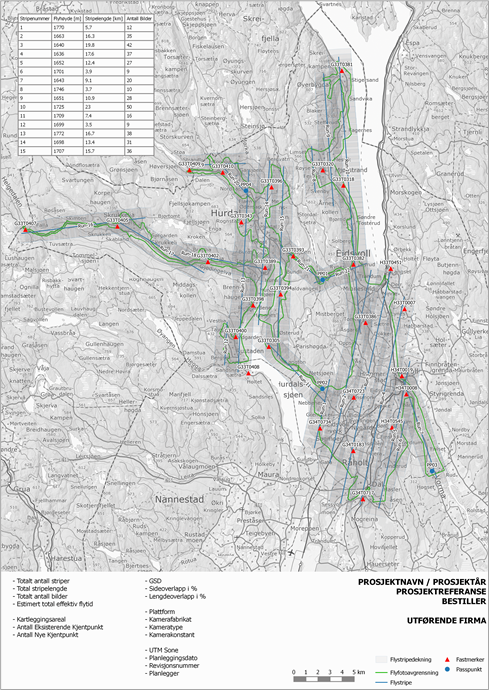
B.2. Eksempel flyplan laserskanning
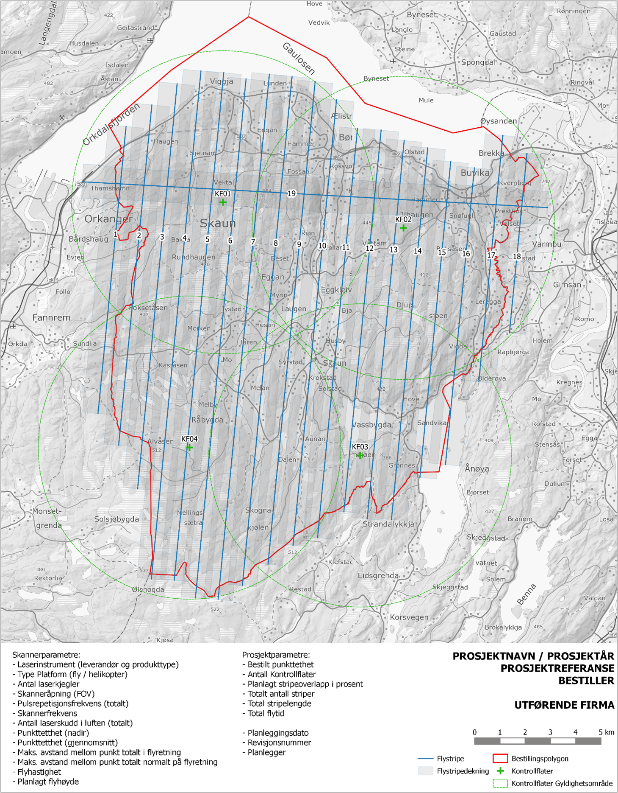
Vedlegg C: Liste over krav
Krav landmåling referanserammer og transformasjoner
Krav landmåling sanntidsmåling
Krav landmåling innmåling med totalstasjon
Krav landmåling rapportering - geodetisk kartlegging
Krav foto referanserammer og transformasjoner
Krav foto flyplanlegging
Krav foto kjentpunktnøyaktighet og kontrollpunktnøyaktighet
Krav foto kjentpunkt - Antall og plassering
Krav foto fly- og signaleringsplan
Krav foto signalering
Krav foto rapport signalering
Krav foto digitale kamera
Krav foto GNSS/INS-system
Krav foto fotografering
Krav foto innsamling GNSS/IMU
Krav foto DGNSS
Krav foto PPP (Precise Point Positioning)
Krav foto beregning GNSS/INS
Krav foto fremstilling av bilder
Krav foto rapportering flyfotografering
Krav foto måling av sammenbindingspunkt
Krav foto måling av kjentpunkter
Krav foto observasjonsvektig, parametere og ukjente
Krav foto selvkalibrering
Krav foto AT-beregninger og -resultat
Krav foto kontrollmåling i DFA av aerotrianguleringrn
Krav foto rapportering aerotriangulering
Krav foto konstruksjon
Krav foto logisk konsistens
Krav foto rapportering konstruksjon
Krav foto ortofoto høydemodell
Krav foto sant ortofoto
Krav foto ortofotooppløsning
Krav foto fremstilling av ortofoto
Krav foto ortofotomosaikk
Krav foto rapportering ortofoto
Krav foto droneortofoto uten RTK-drone
Krav foto droneortofoto med RTK-drone
Krav foto høydemodell drone
Krav vektorisering fra modell fra dronebilder
Krav foto kartkonstruksjon i stereo fra dronebilder
Krav foto dronekamera
Krav foto GNSS/INS i drone
Krav foto signalering i droneprosjekt
Krav foto flyplan i droneprosjekt
Krav foto flyfotografering i droneprosjekt
Krav foto skråbilder kvalitetsnivå minimum
Krav foto skråbilder kvalitetsnivå lav
Krav foto skråbilder kvalitetsnivå middels
Krav foto skråbilder kvalitetsnivå høy
Krav laser referanserammer og transformasjoner
Krav laser leverandørkalibrering
Krav laser installasjonskalibrering
Krav laser daglig kalibrering
Krav laser flyplan laserskanning
Krav laser opplysninger om skanneparametre
Krav laser tverrstriper
Krav laser kontrollflater - antall og plassering
Krav laser kontrollflater - form og størrelse
Krav laser kontrollflater - hjulspormetoden
Krav laser kontrollflater - nøyaktighet
Krav laser kontrollprofiler
Krav laser kontrollprofiler - antall og plassering
Krav laser kontrollprofiler - form og størrelse
Krav laser kontrollprofiler - nøyaktighet
Krav laser utføring av laserskanning
Krav laser dokumentasjon på daglig kalibrering
Krav laser dokumentasjon på stripejustering
Krav laser høydekontroll
Krav laser dokumentasjon på høydekontroll
Krav laser grunnrisskontroll
Krav laser dokumentasjon på grunnrisskontroll
Krav laser kontroll av punktsky
Krav laser dokumentasjon på kontroll av punktsky
Krav laser klassifisering
Krav laser rapportering laserskanning
Krav mobil referanserammer og transformasjoner
Krav mobil GDPR
Krav mobil stedfestingsnøyaktighet ved mobil datafangst
Krav mobil kjentpunkt og kontrollpunkt
Krav mobil dokumentasjon av mobil datafangst
Krav vektor geometrisk avvik og tverravvik/pilhøyde
Krav vektor fullstendighet
Vedlegg D: Liste over anbefalinger
Anbefaling foto signalstørrelser
Anbefaling foto droneortofoto med RTK-drone
Anbefaling foto kartkonstruksjon i stereo fra dronebilder
Anbefaling foto signalering i droneprosjekter
Anbefaling foto flyplan i droneprosjekter
Anbefaling foto skråbilder kvalitetsnivå minimum
Anbefaling laser tverrstriper
Anbefaling laser utføring av laserskanning
Anbefaling mobil fargelegging av punktsky
Lisensvilkår
Lisens
Denne standarden er gitt ut under norsk lisens for offentlige data (NLOD).
Du har lov til:
-
å kopiere og tilgjengeliggjøre
-
å endre og/eller sette sammen med andre datasett
-
å kopiere og tilgjengeliggjøre en endret eller sammensatt versjon
-
å benytte datasettet kommersielt
På følgende vilkår:
-
at du navngir lisensgiver slik lisensgiver ber om, men ikke på en måte som indikerer at disse har godkjent eller anbefaler deg eller din bruk av datasettet
-
at du ikke bruker dataene på en måte som fremstår som villedende, og heller ikke fordreier eller uriktig fremstiller dataene
Med den forståelse:
-
at data som inneholder personopplysninger og er taushetsbelagt ikke er omfattet av denne lisensen og ikke kan viderebrukes
-
at lisensgiver fraskriver seg ethvert ansvar for informasjonens kvalitet og hva informasjonen brukes til